| 家康、恋の陣！ 椿姫と築山殿と女城主とおこちゃ (二次元ドリーム文庫) | |
| 竹内けん | |
| 株式会社キルタイムコミュニケーション (2017) | |
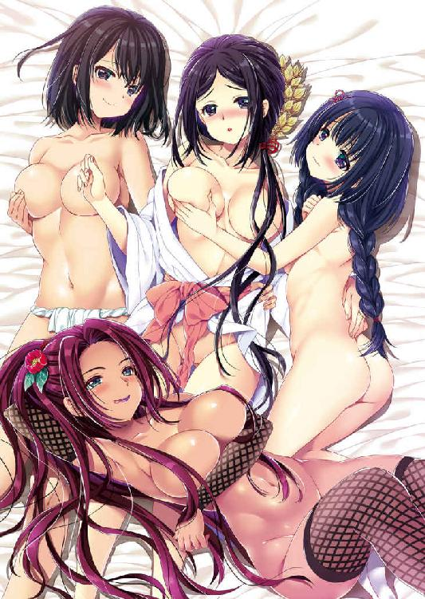
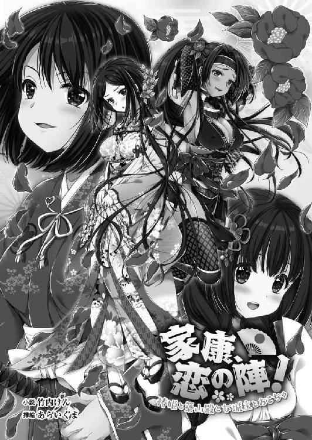
※本作品の全部あるいは一部を無断で複製・転載・配信・送信したり、ホームページ上に転載することを禁止します。本作品の内容を無断で改変、改ざん等行うことも禁止します。また、有償・無償にかかわらず本作品を第三者に譲渡することはできません。
※本作品は電子書籍配信用に再編集しております。
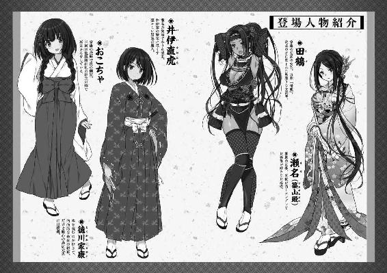
「あなたたち、なにをしているの？」
天文二十四年（１５５５）の三月。駿河今川館にほど近い清水寺。この寺は今川家とのかかわりが深い。のちに今川氏真が楽市楽座の許可状を出した寺としても知られる。それだけに今川家中の人々が散策する憩いの場だった。
そんな美しい境内の中にあって今川家の家中の者とも思えぬみすぼらしい装いの年若い主従が、なにやら揉めている。
彼らの手にしているのが、かわいらしい小鳥だと見て取った少女は、かっとなって飛び出していた。
「これは瀬名姫さまっ！」
突如として割って入ってきた少女に詰問された主従のうち、家臣の少年は飛びのいて拝礼した。
彼らを非難顔で睨みつけたのは、同世代の少女だ。
真珠もかくやといったツルツルの白い肌に、大きな目。その奥では黒曜石のような瞳が力強く輝いている。ツンと高い鼻に、手入れの行き届いた眉、桜色の紅の引かれた唇とともに完璧な造形美を整えられ、艶やかな長い黒髪も絹糸を染め上げたかのように美しい。
全身から眩しいくらいの青春の光輝を放っていた。
纏う小袖は左右が鶯色と赤朽葉色のパッチワークで、華やかな花柄が散らされている。簪も帯飾りも最新流行で整えられ、持ち主の魅力をいや増させていた。
思春期の少女として、お洒落を思いっきり楽しんでいる。これぞ今川撫子と呼びたくなるような、豊かな今川家中に相応しい良家のお嬢様だ。
その外見を裏切らず、彼女は今川家の重臣関口親永の娘で、のちに築山殿と呼ばれる。瀬名という名前が後世に定着しているのだが、これは彼女の実家の駿河国庵原郡瀬名村から取られたもので、本当にこの名前だった、という根拠はどこにもないのだそうだ。しかしながら、通説として定着しているのだから、この物語もこれで進める。
権高な美少女が、両手を腰に当て肩を怒らせて睨む先で、主人のほうはむすっとした顔で応じる。
「なんだよ」
陰気な少年だ。お世辞にも美少年ではない。しかし、骨太で健康的な容姿だ。
背は平均より少し小さかった。
彼の晩年の身長は百五十八センチと記録に残っている。ちなみにこの時代の日本人の平均身長は、約百六十センチだという。
三河の豪族松平竹千代だ。のちに徳川家康と名乗った。日本史上最高の英雄となった彼にも少年期はある。
ときに数えで十三歳。駿河遠江三河の戦国大名今川義元の一家臣である。いや、元服前であったから、家臣とはいえないかもしれない。
松平家に現役当主はおらず、その領地は主君である今川義元の預かりとなっていた。
「それって百舌鳥よね」
不信感をあからさまにした瀬名は、竹千代の手に握りしめられていたかわいらしい鳥を見とがめる。
「あ、ああ......」
少女の厚かましさにいささか圧倒されたように、竹千代はぶっきらぼうに応じた。
あまり社交的な性格ではないのだ。
また、思春期の少年にありがちなことに、元気で姦しい少女は苦手という側面もあるだろう。
「その小鳥になにするつもりだったの？」
もともと瀬名は、竹千代を好意的に見ていなかった。
松平家というのは、竹千代の父、祖父と二代に渡って、家臣に誤解から殺されるという、恐ろしく野蛮で残忍な一族である。
そこの御曹司が、かわいらしい小鳥を手にしているのだ。こいつらは動物虐待をしているに違いない。助けねばなるまい、という義憤に駆られた瀬名は、連れの友達が止める間もなく、強引に首を突っ込んだのだ。
その誤解を察したというか、瀬名の態度から、理由を説明しないと引き下がらないだろうと判断した竹千代は、しぶしぶといったていで口を開く。
「こいつに鷹狩を仕込んでいた......」
「はぁ？」
予想外の返答に、瀬名は呆気にとられた顔になる。
鷹狩とは、鷹に獲物を取らせる競技だ。武士たちの嗜みといっていいだろう。共に長時間を過ごすのだから自然と親睦を深められるし、野外を歩き回るので健康にもいい、という理由で大流行していた。現代でいうところのゴルフのような効用を認められている娯楽と考えればわかりやすい。そんなことは武士の娘である瀬名も承知している。
しかし、百舌鳥で鷹狩をさせるなどという話を聞いたことがない。
「なんでそんなバカなことしているのよ」
百舌鳥は小鳥だ。それに対して鷹は、大空の王者といっていい大鳥である。同じことをさせるなど無茶というものだ。
「......百舌鳥だって鷹のように躾けられる」
竹千代は意地になったように応じる。
意味がわからない、という顔をした瀬名は、頑なで口下手な少年の説明では一向に埒が明かないということで、お付きの家臣に目をやる。
「いやその......」
気の強い美少女の有無を言わさぬ迫力に負けて、竹千代の従者はしどろもどろになりながら、理由を説明した。
竹千代は、鷹狩が好きである。というか、鷹が好きだったようだ。
そのため暇を見つけては鷹と戯れていたのだが、鳥だから空を飛ぶ。そして、他人様の屋敷の上にも平気で糞をする。
そのせいで屋敷を隣接させる孕石元泰に、嫌味たっぷりの苦情を言われたのだ。
「太守さまのお情けで領主をしている分際で、鷹狩など生意気だ。子供は百舌鳥でも飼っていろ」
孕石元泰の立場に立てば、純粋に迷惑だ、という側面もあるだろうが、今川家臣全体に竹千代に対する警戒感と嫉妬があったのだろう。
というのも、竹千代の家は、本来、滅んでいるところを、今川義元の助力によって豪族として取り立てられているのだ。
松平家は、もともとは三河安城一帯を支配している一豪族に過ぎなかった。
しかし、竹千代の祖父である松平清康が、わずか七年間でほぼ三河を平定してみせたのが、興隆の始まりである。
その清康の副将格に、伯父の松平信定という人物がいた。
この信定は、清康に協力しながらも、独自に勢力を広げたこともあって、清康の不興を買ってしまう。
そんな最中に、清康は家臣に切り殺されてしまった。当然、黒幕として信定は疑われる。
実際、この事件を好機として、信定は三河の領主として振る舞いだした。
清康の息子で、竹千代の父親広忠は、命からがら三河から逃げ出し、駿河遠江の領主であった今川義元の下に駆け込んだ。
そして、今川軍の後ろ盾を持った広忠は三河に入り、信定を降伏させた。
つまり、広忠は今川家の庇護がなければ、領主になれなかったわけである。
しかも、これだけではない。
今川家が三河に勢力を伸ばすと、尾張と三河の国境に勢力を持つ豪族水野氏もまた、今川に通じてきた。
そこで水野忠政の娘於大の方を、広忠は妻に迎える。そして、産まれたのが、竹千代だ。
しかし、忠政が亡くなり、息子で、信定の娘を妻にしていた水野信元が当主になると、水野家はあっさりと今川を見限り、尾張の織田と結ぶ。そして、今川に誼を通じていた知多半島の豪族たちを次々と攻め滅ぼしていったのである。
広忠は、慌てて於大の方と離縁。実家に追い返すと、今度は三河湾一帯に勢力を持った豪族戸田氏の娘・真喜姫と再婚した。
この継母は、先妻の子である竹千代を我が子のようにかわいがってくれたが、今度は、この真喜姫の実家が大問題を起こす。
広忠は、今川家に誠意を見せようと息子の竹千代を、今川の本拠地に人質として送ることにした。人質といえば言葉が悪いが、ようするに留学である。そのとき、海路を利用しようと戸田氏にお願いしたのだが、この戸田氏は竹千代を船に乗せると、そのまま尾張の織田家に届けて、寝返ってしまったのだ。
織田家は、当然、松平にも息子を殺されたくなければ味方になれと促してくる。
それに対する広忠の返答は冷淡極まるものであった。
「息子を殺されようと、決して今川から寝返ることはない」
哀れ竹千代は五歳にして、父親に見捨てられてしまったわけだ。
これを聞いた織田家の当主織田信秀は、「ああ、良将かな......」と慨嘆したという。
しかしながら、ここで竹千代を殺せば、織田家と松平家は断交となる。以後、決して味方に引き入れることはできなくなるだろうから、殺せるはずもない。時間が経てば、情勢も変わって役立つかもしれないということで、正真正銘のまごうことなき人質となってしまった竹千代は、それなりに丁重に遇される。
真喜姫は離縁されなかった。戸田氏の謀叛は、松平氏も同調することを前提に行われたものである。完全な計算違いから敵地に孤立。戸田氏は滅亡してしまい、真喜姫は帰る実家を喪失したのである。
そして、情勢は変化した。広忠が家臣に誤解から殺されてしまったのだ。
今川は焦った。なにせ広忠の唯一の後継者は織田方に捕らえられているのだ。松平領を織田に取られては大変と、ただちに代官を派遣して接収した。ここで事実上、松平家も滅亡である。
そして、今川の軍師と名高い太原雪斎は一計を案じた。
三河安祥城主をしていた信秀の庶長子・織田信広を生け捕りにし、これと人質交換をして竹千代を今川家に取り戻したのである。
今川義元は、三河支配に役立つと思い竹千代を優遇しているわけだが、今川家臣たちからすると、なんでこんな亡国の小僧を優遇しなくてはいけないんだ、それぐらいなら、俺たちの知行を増やせ、という鬱屈した不満となる。
「それでむかついたから、百舌鳥の飼育......？」
瀬名は額を押さえた。竹千代がコクンと頷く。
「ガキね」
呆れた表情の瀬名の決めつけに、竹千代はムキになって応じる。
「なんでだよ」
「百舌鳥に鷹の真似ができるはずがないでしょ。だいたい、鷹狩という名称がついているくらいなのだから、鷹でないと不可能な芸当なことぐらい、常識で考えればわかるでしょ」
「できる。俺は昔、黒鶫を飼っていた」
竹千代は意地になって応じた。
五歳から六歳にかけて、尾張織田家の人質として過ごした竹千代は、その無聊を慰めるために、黒鶫を飼っていたのだ。これは物真似のできる大変滑稽な鳥であったのだが、しばらくして、物真似しかできない鳥はいらない、と変にこまっしゃくれたことを言って放してしまった、という逸話がある。
同世代の男の子はみんなガキに見える、という女の子独特の小馬鹿にした笑みを浮かべた瀬名は、連れの少女に話を振った。
「次郎法師、どう思う？ 百舌鳥に鷹の真似なんてできるかしら？」
それは異様な風体の少女だった。年のころは瀬名とそう変わらない。いや、少し年長だろうが、それでもまだ十代の半ばであろう。それなのに尼僧の恰好をしているのだ。
黒い袈裟を纏い、白い頭巾をかぶっている。中から覗く顔は面細で理知的な雰囲気があった。
「さぁ？ 拙僧にはわかりかねますが......無理なのではないでしょうか？」
さすがに法体。年齢に似合わず、達観した声だ。
この少女尼さんは、遠江の豪族井伊家の息女だ。
井伊一族は、遠江の井伊谷に根を張る一族である。
今川家は、応仁の乱が始まるまで駿河一国の領主に過ぎなかった。この大乱には数多の原因が複雑に絡まって存在するが、その一つに、今川氏と斯波氏の争いがある。
斯波氏は遠江、越前、尾張の領主であり、駿河しか持たなかった今川氏は遠江を欲して侵攻したのだ。
応仁の乱が終わっても今川の野心は収まらず、永正の乱という形で戦い続ける。
その戦乱のさなか、遠江の豪族の一つであった井伊家の分家の当主井伊直平は、今川に通じて一族を裏切り、井伊家の当主になった。永正八年（１５１１）二月のことである。
このようにして今川家の麾下に入った直平なのだが、その後の対応を間違う。
今川義元が当主になるとき起こった花倉の乱と呼ばれるお家騒動で、義元の敵であった玄広恵探に加担してしまったのだ。
内乱に勝利して当主となった義元が、井伊家に冷たくなったのは自明のことだろう。
直平は詫びとして娘を差し出し、彼女は義元の側室になった。その後、この女は重臣の関口親永に義元の養妹という形で下賜され、そこで儲けられたのが、瀬名である。
直平はいまだ健在だが、家督は嫡孫の井伊直盛に譲られており、その直盛の一人娘が、この次郎法師だ。
よって瀬名から見ると、次郎法師は従姪ということになる。
彼女の生年は不明だが、まだ少女といっていい年頃だ。それなのになぜ尼僧姿なのかといえば、これまたややこしい背景がある。
井伊家のたった一人の姫である彼女は、従兄の井伊直親という人物と婚約させられたのだが、その婚約者の父親が、謀叛を企てて今川家に粛清されてしまったのだ。
この事件のせいで世を儚んで出家したのだという。ただし、これは表向きで、実際は謀叛事件の懲罰的な意味で、今川から婿を押し付けられるのを嫌ったためと考えられる。
直盛はまだまだ若い。後継者となる男子を儲ける可能性は十分にあった。そこに今川の介入で、次郎法師が婿を取ったら、お家騒動の火種となる。
つまり、彼女はお家の都合のために、自らの女としての人生を捨てたのだ。
このたび直盛が、主君である義元に挨拶に来るついでに、かわいくも哀れな一人娘も同伴してきたので、同世代の瀬名が面倒を見ることになり、観光がてら清水寺に足を運んだというわけだ。
「ほら見なさい。次郎法師も無理って言っているよ」
「絶対にできる」
「無理無理。絶対に無理。現実をみなさいよ、この田舎者」
竹千代と瀬名が意地になり、顔を突き合わせて言い争っていると、突如、荒々しい馬蹄の音が轟いた。
「うわ!?」
馬は少年少女をはねる寸前で止まった。
「まぁ、なんと乱暴な」
次郎法師は眉をひそめた。
「こら、キミたち道を塞いでいたら危ないでしょ！」
馬上から一喝したのは、女性の声だった。
「まぁ、田鶴さま♪」
相手の正体を悟った瀬名は、表情を輝かせる。
馬の手綱を取っていたのは、十代後半と思しき美貌のお姉さまだった。
狩衣を着こみ、袴を穿き、弓矢を背負っている。女ながらに騎射の練習にでも赴くところだったのだろうか。
今川家の重鎮鵜殿長持の娘。母は今川義元の本当の姉妹。つまり、今川譜代の超名門お姫様だ。とかく文弱とみられる今川家にあって、鵜殿家は武闘派だ。
その息女である田鶴もまた、女だてらに男顔負けの武勇を誇る。
体は大きく、姫様にあるまじきことに、肌は健康的に日焼けをしていた。波打つ黒髪は赤茶け、艶やかな美貌に、肉感的な唇がなんともセクシーだ。
蓮っ葉な雰囲気もあって、少し不良っぽい。悪カッコイイお姉さまだ。
男顔負けの武勇を誇る女性となれば、年下の少女が憧れを持つのはよくある話だろう。瀬名もまたキラキラとした表情を浮かべている。
「珍しい組み合わせね」
馬上の田鶴は物珍しげに、道を塞いでいた少年少女を見下ろす。
今川小町とでも言いたくなるようなお洒落で姦しい少女と、質実剛健な口下手で頑固な少年、そして、少女尼さんである。
奇異に見えるのは当然だろう。
もっとも、他人から見れば、女武者な田鶴もまた十分に奇異な存在に違いない。
「なにをしていたの？」
田鶴の質問に、早速、瀬名が告げ口をする。
「竹千代のやつが、百舌鳥を鷹のように仕込むって言い張っているんですよ。バカですよね～」
「へぇ～」
田鶴は面白そうに竹千代の顔を見下ろす。自分でも子供っぽい意地を張っている、という自覚はある竹千代は、赤面して顔を背ける。
綺麗なお姉さまにバカにされるのは、思春期の少年としては恥ずかしい。
ふっと笑った田鶴は手を伸ばすと、軽く少年の前髪を撫でた。
「何事もやってみなくてはわからないわよね。頑張りなさい」
ぽっと竹千代の頬が赤くなる。
自分に対するのとはまったく違う竹千代の態度に、瀬名はいささかむっとする。
「それじゃーね」
華やかに笑った田鶴は、そのまま馬を駆けていってしまった。
それを見送った瀬名は、改めて竹千代にジト眼を向けると、付き合いきれないと言いたげに肩を竦める。
「まぁ、せいぜい無駄な努力をしなさいな。次郎法師、行きましょ」
「はい」
尼装束の少女は、丁寧に竹千代にお辞儀をして、肩をいからせて歩く瀬名に従う。
姦しい女たちが消えて、あとには竹千代とお付きの家臣が残った。しばらくして、竹千代はむすっとした顔で口を開く。
「鶴之助、おまえが余計なことを言うからこんなことになったんだぞ」
鳥居鶴之助。のちの鳥居元忠。竹千代より三歳年長の彼は、竹千代と兄弟同然に育った。
鶴之助の父は、鳥居忠吉といって、三河の領国にあって竹千代の身の回りの世話を一切合切見てくれている、いわば後見人のような存在だった。
「で、でも、瀬名さまって、こう美人で怖いじゃないですか」
「俺はああいう口やかましい女は嫌いだ。それに比べて田鶴さまはいいよな」
竹千代はぽっと夢見るような表情になる。
しばし、余韻に浸った竹千代は、不意に手に握っていた百舌鳥を鶴之助に押し付けた。
「鶴之助、任せた」
「はぁ、拙者がやるんですか？」
鶴之助は頓狂な声をあげる。竹千代は真面目な顔で頷く。
「ああ、俺は忙しいから無理だ」
いわば亡国の王子様である竹千代は、家臣たちの期待を一身に背負っている。
そのため、お家再興を願う家臣から、スパルタというしかない教育を受けていた。
文筆を知短上人から習い、学問を今川義元の師匠であった太原雪斎に学ぶ、剣術は奥山休賀斎に、弓は竹林派の石堂藤右衛門、馬術は大坪流、八条流。鉄砲は稲富流。剣、薙刀は有馬大膳に学ぶ。
特に奥山休賀斎の指南は厳しく、ときには気を失うほどだった。
このように武芸修行に明け暮れた若き日の家康だが、これはあくまでも幼少期ということで、養育係の家臣たちに強要されたものであり、成人してからはさぼってしまった、と自分で語っている。そのせいで中年期以降は激太りしてしまい、後世、デブのイメージがついてしまったわけだ......。
家康は本質的に、内向的なオタク気質な人物であり、本を読むほうが性に合っていたのだ。
とにかく、家康は晩年にいたるまで膨大な本を読み、歴史を学び、それを政治に活かした。
そんな習い事の嵐に襲われている竹千代にとって、鳥と遊ぶのが唯一の楽しみだったのだ。
ただし、残念ながら百舌鳥の仕込みにかかりっきりというわけにはいかない。
「絶対だぞ。田鶴さまの期待に応えて、あの出しゃばり女の鼻を明かしてやれ」
人見知りをする性格の竹千代は、それだけに内弁慶なところがある。特に気心の知れている鶴之助に対しては遠慮がない。もとい、かなり横暴だった。
※
「竹千代さま、竹千代さま、見てください。言われた通りに百舌鳥を鷹のように仕込みましたよ」
その日も、竹千代は山のような修行の日課を消化するのに忙しかった。
今川館で、今川義元の師匠であり、軍師として名高い太原雪斎の講義を終えた竹千代の下に、能天気な家臣が百舌鳥を翳して駆けてくる。
「よし、見せてみろ」
尊大に命じた竹千代は廊下に出た。
「ほら」
得意満面の鶴之助が、百舌鳥を手放した瞬間、舞い上がった百舌鳥はなんと、竹千代の頭を突っついた。
「わっ、いて」
むかついた竹千代は、鶴之助を縁側から蹴り落とした。
「できてねぇじゃないか。バカっ！」
罵声を浴びせた竹千代は、憤懣やるかたない気分で、今川館の中を駆けていった。
「ほ～ら、見たことか」
という瀬名の勝ち誇ったせせら笑いが、耳に聞こえてくるようである。
自分でもなぜこれほどまでに癇癪を起こしたのかわからない。
いろいろ溜まっていたストレスが爆発した、というのが正しいのだろう。家臣たちの期待が重い。毎日毎日、勉強修行の繰り返しだ。ストレスも溜まろうというものである。
そして、なによりもむかつくのが鶴之助の存在だった。
側近の彼が、忠誠心の塊であることは疑いない。親からもそうあれ、と教育されているようである。
ただ、どうにも要領が悪い。できないならできないと言えばいいのだ。あるいはできるはずがないと思って、主君の馬鹿な命令は捨て置けばいい。
しかし、鶴之助は真剣に百舌鳥の調教に取り組んで、そして、ようやく一度成功して、喜々として報告に来て、......あの体たらくとなったのだ。
愚直とはまさに彼のためにあるような言葉である。
（あれが俺の片腕かい。あんなのと一緒に爺様の時代に戻るなんて無理だろ）
と叫びたいのだが、現在の竹千代の身の回りの生活は、鳥居家の援助なしにはなりたたないのだ。
悶々としながら、今川館内を歩き回っているとまったく見知らぬ場所に迷い込んでいた。
（さて、困ったぞ）
今川館とは、名前の通り城ではなく居館である。もし今川家が籠城戦をしなくてはならないときは、近くの賤機山城に籠もることになっていた。
とはいえ、駿河遠江三河三国の領主の政庁だ。広大な作りになっている。子供が独りで歩いていれば迷子にもなろうというものだ。
人に聞けばいいのだが、それもなんか恰好悪い気がして、素知らぬ顔で歩く。どんどん歩くうちにどんどん深みに嵌っていっているようで、ついにはまったく見当もつかない場所に出てしまった。
（いいかげんお腹もすいてきたな。仕方ない。人に聞くか）
昼食を食べたくなり、恥を忍んで道案内を頼もうと決意したのだが、今度は人っ子一人いない。
（うー、どこなんだ。ここは）
戸惑っていると、中庭が見えた。
春爛漫。桜吹雪が舞い、中庭の青々とした垣根には、赤い椿の花が幾つも咲いていた。その向こう側で人の気配がする。
よかった、と安堵した竹千代は、廊下から下りて垣根に近づく。
そして、垣根の中を覗き込むと、予想通り人がいた。ただし、厳めしい侍でも役人でもなく、もろ肌脱いだ女性であった。
（これは......っ!?）
午後の陽だまりの中で、井戸の傍に大きな桶が置かれていた。そして大きな桃がある。
いや、大きな桃のようなパンとした尻があったのだ。
むろん、尻だけではない。引き締まった背中から、左右に張った臀部。しかし、いずれも男のものに比べると、圧倒的に美しい。そして、濡れた赤茶けた長髪。ここに至って目の前の女性の正体を悟った。
（田鶴さまだ......）
おそらく、いつものように馬で遠乗りに出かけて、一汗掻いて帰ってきたところなのだろう。
野外で水浴びをするには少し早いが、駿河は温暖な気候をしている。晩年の家康も隠居所として選んだほどに過ごしやすい。運動すれば、汗を拭いたくなるだろう。
両手で桶を掲げて、頭からザブリと水をかぶる。
水飛沫が陽光に輝き、キラキラと舞う。その拍子に脇乳が覗き、重量感がありながらも、重力に完勝して上を向く乳首が覗く。
（おお、おっぱいデカ。乳首も赤い）
椿の園の中にいるせいか、まるで椿の化身のように思える。艶やかで硬質な大輪の花のようだ。
見てはいけないものを見てしまった。と直感的に悟った竹千代であったが、目を離せない。
芸術になどまったく興味のない竹千代だが、このときばかりは目と心を奪われてしまい、我を忘れて魅入ってしまった。
カサ
不注意にも、竹千代は地面に落ちていた椿の花を踏んでしまった。
「だれだ」
気配を察した田鶴は鋭い誰何とともに、とっさに近くに立てかけてあった弓を取り、矢をつがえた。
「っ!?」
竹千代は硬直した。キツイ眼差しで睨みながら田鶴は鋭く命じる。
「ゆっくりと出てきな。このデバガメ野郎」
女ながらに田鶴は弓の名手だ。逃げられない。そう悟った竹千代は、諦めて両手をあげると、垣根の中に足を踏み入れた。
「っ」
険しい顔をしていた田鶴が、覗き魔の正体を察するとふと笑った。
「だれかと思ったら三河のボンかい」
「すいません。道に迷ってしまって......」
竹千代の悄然とした言い訳に、弓から矢を外した田鶴は艶やかに笑う。
「そっか、坊やも色気づくお年頃だもんね」
「いや、その......」
なにか誤解されてしまったような気がして竹千代は慌てる。しかし、再び表情を引き締めた田鶴は取り合わない。
「ここって男子禁制の区画よ。こんなところにいたなんてばれたら、いくら太守さまのお気に入りでも、大問題になるわね。寿桂尼はおっかないわよ」
寿桂尼というのは、今川義元の母親だ。田鶴から見ると母方の祖母にあたる。今川家の真の支配者と言われている人物で、女性だけに女性の権利を踏みにじるものには容赦がないだろう。
「ぐっ」
いまの竹千代は、今川家の庇護がないと生きていけない立場だ。
ほんの少しの油断から、絶体絶命のピンチに陥ってしまったと悟った竹千代は、後悔に身を固くして立ち尽くす。
「くっくっくっ」
どうしていいかわからず立ち尽くしている未熟な少年を見やって、田鶴は人の悪い笑みを浮かべる。
「ちょっと待っていな」
田鶴は手ぬぐいで体を拭うと、竹千代に背を向けた。鍛え抜かれた体は肩幅があり、腹部はきゅっと括れて、鍛えられた尻は大きくて、きゅっと吊り上がっている。太腿は太く、足首は細い。背筋の線の浮き出た背中もカッコイイ。
縁側に近づいた田鶴は振り返り、そこに腰を下ろす。そして、両手を後ろ手に置き、悠然と長い両足を組んでみせた。
丸出しの双乳を隠そうともしない。
子供に裸を見られても恥ずかしくないのか、堂々たるものだ。目のやり場に困って、オロオロする竹千代に向かって、田鶴は嘲笑混じりに命じる。
「服を脱ぎな」
「......はい？」
なにを言われたかわからず戸惑う竹千代に向かって、組んだ膝の上に頬杖をついた田鶴は妖しく嗤う。
「あたしの裸を見せたんだから、キミも裸を見せなさい。それでおあいこでしょ。それで許してあげる」
そんなことで許してもらえるのか。安堵した竹千代は小袖を脱いだ。
「へぇ～、なかなか鍛えているわね」
少年の上半身を見て、蓮っ葉なお姉さまは舌なめずりをする。
「これも......」
恐る恐る竹千代が袴に視線を下ろすと、田鶴は当然と頷いた。
「当然。下帯も取るのよ」
袴を脱いだ竹千代は、毒を食らわば皿までだ、と念じて目を閉じると、褌を解いた。
直後に逸物が痛いほどに反り返っていることを自覚し、言いようのない恥ずかしさに襲われて、慌てて両手で股間を押さえてへっぴり腰となる。
そのさまに田鶴は嗜虐的に笑う。
「なに隠しているのよ。別にいいでしょ。きみ、昔は大勢の見ている前で立ちションしたそうじゃない」
田鶴が揶揄したのは、天文二十年（１５５１）松平竹千代が八歳のときの逸話である。
今川館に義元への年頭挨拶のため武将たちが集まっていた際、大勢の見ている中、竹千代は縁先で放尿を始めて、周囲を驚かせたのだ。
さすがは神君家康公、子供のころから豪胆だった、と称える逸話だが、単に物を知らない子供で、尿意を我慢できなかった、というのが正しいだろう。
「くっ」
なお躊躇う竹千代を前に、悪戯っぽい笑みをたたえた田鶴は、わざとらしく両手を口元で筒形にすると小さい声で叫ぶ真似をする。
「三河の小僧が男子禁制の区画に入って、女の湯あみを覗き見したわよ～」
「くー」
脅しに屈した竹千代は、やむなく両手を後ろに組んだ。そして、目を閉じて公然と顎をあげた。
もう好きにしろ、というヤケッパチの態度だ。
「うふふ、素直でよろしい♪」
満足げな田鶴は、縁側に腰を下ろしたまましげしげと、竹千代の裸体を見学する。
「うふふ、元服前なのにおちんちんはすごいね」
憧れのお姉さまが、眼前で裸体を晒しているのだ。逸物は臍に届かんばかりに反り返ってびっくんびっくんと脈打っていた。ただし、包皮は先端まできっちりと包んでいる。
「よっと」
両足を軽くあげて反動をつけた田鶴は、軽やかに縁側から立ち上がった。
股間では陰毛が炎のように逆巻いている。
大きな双乳を揺らしながら、田鶴は歩みよってきた。そして、竹千代の前に立つ。
成人女性と未成年の少年の身長差である。竹千代の顔はちょうど、田鶴の胸元にきた。
鼻先に椿のように赤い乳首がくる。
思わず凝視してしまう竹千代の顎の下に右の人差し指を添えた田鶴は、上向かせた。そして、目を閉じた田鶴の顔が降りてくる。
ピト......ッ!?
肉感的な唇が、竹千代の唇を塞いだ。
「......」
硬直していた竹千代は呆然と目を見開き、目の前に健康的でありながら妖艶なるお姉さんの美しい顔。その長いまつ毛を見つめていた。
やがて眼を開いた田鶴は、唇を離す。そして、いささか照れたように質問してくる。
「きみ、あたしのこと好きでしょ？」
「え、そ、それは......」
「隠しても無駄よ。女って、相手が自分に好意を持っているかどうかって、本能的にわかってしまうのよね」
十代前半の少年にとって、綺麗なお姉さんという存在は、無条件に好きなものだ。竹千代とて例外ではなく、まるで心を見抜かれたような気恥ずかしさに赤面する。
動転している少年を他所に、豪気なお姉さまは次の行動に移った。
「た、田鶴さまっ!?」
田鶴の右手が、ごく無造作に竹千代のいきり立つ逸物を捉えていた。
「うふふ、どうしたの？」
妖しく笑ったお姉さんは左手で少年の後頭部を抱くと、自らの双乳の中に押し込んだ。
「キミもあたしの体に触っていいわよ。ほら」
むにゅ
柔らかい肉で、顔を左右から挟まれる。
（や、柔らかい、なんだこれ......）
この世のものとは思えぬ柔らかさに、竹千代は目を白黒させる。
「そういえば、キミってお母さんいないんだよね」
竹千代の産みの親於大の方は、竹千代が産まれてすぐ、実家の水野家が今川に背いたので、離縁されてしまった。その後、水野麾下の豪族久松俊勝の下に再嫁して、三男三女を儲けて幸せな家庭を築いているようだ。
「それなら、なおさら興味あるんじゃない。おっぱい、好きに触っていいわよ」
「えっ!? いや、でも......」
動転してなにもできない竹千代を見下ろして、苦笑した田鶴は、いったん竹千代の逸物から手を離すと、竹千代の手をそれぞれ取る。
「ほら、遠慮はいらないわよ」
「っ!?」
竹千代の両掌が、それぞれ田鶴の二つの肉山を捉えていた。
プニ......
（うおっ、柔らかい♪）
初めての肉感だ。感動した竹千代が飽くことなく揉んでいると、椿の花のような乳首が、突起してきた。そこを思わず摘んでしまう。
「あん♪」
田鶴が甘い声をあげた。驚いた竹千代は、その顔を仰ぎ見る。
「問題ないわ。気持ちよかっただけ。そこ、吸ってもいいわよ」
「......」
竹千代は少しむっとした。自分はもう子供ではないのだから、女性の乳首を吸う必要はない、と思ったのだ。
（でも、せっかくの機会だしな。ぼくは母さんのおっぱい吸ったことがないんだから、一度ぐらいいいよな）
そんな言い訳を心の中でしながら、恐る恐る赤い乳首を口に含む。そして、チューッと吸引した。
「ああ♪」
さらに甘い悲鳴を甲高くあげた田鶴は、膝から崩れ落ちそうになり、慌てて左腕で強く竹千代の頭を抱きしめる。
予想された母乳は出なかった。口内にはなんの液体も入ってはこなかったのだが、物質ではないなにかが、乳首から溢れだして、竹千代の口に入り、そして、喉奥へと流れていくのを感じた。
チューッ！ チューッ！ チューッ！
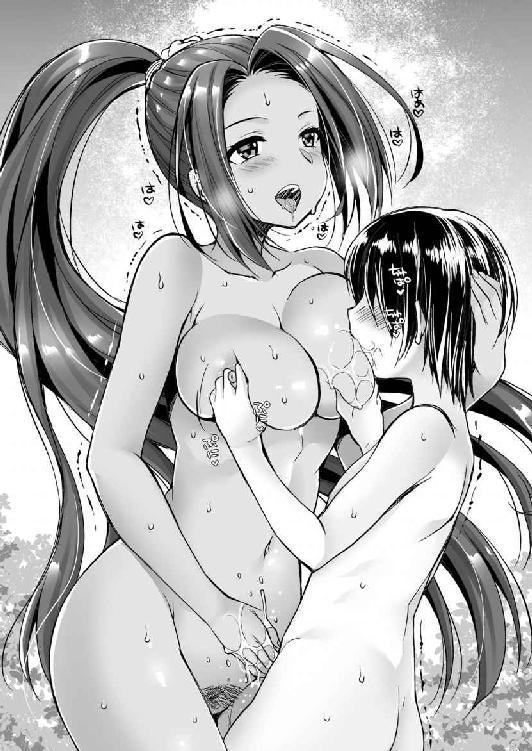
頭の中が真っ白になるほどに興奮した竹千代は、夢中になって乳首を吸引しまくった。
「あはっ、すごい、そんな強く吸われたら、ああ、乳首が取れちゃいそう♪」
左手で竹千代の頭を強く抱きしめた田鶴は、のけぞり甘美な悲鳴をあげる。同時に右手が再び竹千代の逸物を捉えると、しなやかに扱き始めた。
（なにこれ、気持ちいい。おちんちんがすごい気持ちいい......っ!?）
不意に尿意が襲ってきた。マズイと思い止めようとしたのだが、綺麗なお姉さんに捉えられた逸物は、少年の制御を受け付けなかった。
ドビュビュビュビュビュ！！！
（ああ、なにこれ......気持ちよすぎる......）
田鶴の手の中で、竹千代は魂を抜かれるような心地がした。足腰から力が抜けて、膝と両手を大地について四つん這いに崩れ落ちた。
「うふふ、いっぱい出したわね」
虚脱状態の少年を足下に見下ろした田鶴は右手に掬った白濁液を口元に運び、美味しそうに舐めた。
「ご、ごめんなさい」
「ん？」
四つん這いのまま顔をあげ、涙ながらに謝罪してくる竹千代を見下ろして、田鶴は怪訝そうに眉を寄せる。
「あ、あの......おしっこ漏らしちゃって......」
ようやく理由を理解した田鶴は、嬉しそうに瞳を輝かせる。
「もしかしてとは思っていたけど、初めての射精？」
「？」
射精という単語の意味もわからず、竹千代は呆然とする。
まだ性的なことすら知らない少年なのだ、と悟った田鶴は、嫣然と笑うと肩を竦めた。
「いいわ。あたしがいろいろ教えてあげる。手を洗ってこっちに来なさい」
なにがなんだかわからないことだらけだが、いまの竹千代に、田鶴に逆らうという選択肢はない。言われた通りに、田鶴が水浴びに使った桶の水で手を洗った。
「ほら、ここに座る」
田鶴が指し示したのは、濡れ縁の前にあった草履置き用の御影石であった。
竹千代がそこに正座すると、その前の縁側に腰を下ろした田鶴は、両踵を縁にかけるとＭ字開脚になっていた。
「うふふ、女のここ、見たことないでしょ？」
得意げな、それでいてどこか興奮を隠しきれていない田鶴の声に、竹千代は借りてきた猫さながらに、緊張したていで頷く。
「うん」
「見せてあげるわ」
日焼けした田鶴の顔が赤く火照っているようだ。春だというのに、汗が噴き出している。
田鶴は両手で自らの陰毛をまさぐると、中の亀裂をあらわとした。そして、左右の人差し指と中指で、ぐいっと開いてみせたのだ。
牝の匂いがぷ～んと、竹千代の鼻を打った。
「どお、女の秘密の場所を見た感想は？」
「え、なんと言うか......その」
性的に目覚めていなかったのだ。女性の裸を想像したこともなかった。それなのにあまりにも予想外の光景を見せられて、奥手な少年はなんとも表現に困る。
田鶴のほうは、見られていることに興奮しているようだ。軽く喉を鳴らしてから、いささか焦ったような声を出す。
「まぁ、綺麗なところとは言えないわよね。ヌルヌルしているし。あ、これおしっこではないからね。女の蜜よ。それからこの穴は、オマ○コとかホトといっておちんちんを入れる場所だから覚えておきなさい」
「えっ」
「キミの股間でギンギンになっているおちんちんは、このオマ○コに入れるためにそういう形になっているのよ。そして、さっきキミが出したあの白い液体を注ぎ込むと女は懐妊するの」
初めて知った知識に、竹千代は目をまん丸にしている。田鶴は照れくさそうに頭髪を一度掻き上げると、上擦った声で命じた。
「うふふ、この穴よ。指を入れてみなさい」
竹千代は先ほど言われた通りに綺麗に洗ってきた右手の人差し指を、恐る恐る肉穴に近づけた。
ズボリ
太く短い指が、吸い込まれるようにして入った。
「あん♪」
少年の指を咥え込んだ田鶴は、股を開いたまま顎をあげてのけぞる。
（うわ、ヌルヌルでザラザラしている。ここにおちんちんを入れるって？ それは......滅茶苦茶気持ちよさそうだ）
初めて指を入れた肉洞を竹千代は、グリグリと掻き混ぜる。
「ああ、そんなに穿りまわされたら......ああ、ちょっと待って、まだ説明することがあるから。ほら、その、その上のほうに突起があるでしょ。そこは陰核っていって女にとってとっても気持ちいい場所なの。そこも触ってみて」
やたらと動揺している田鶴に言われた通り、竹千代は左手の人差し指で陰核を押してみた。
「あはっ」
プシュッ
必死に澄ました顔をしているお姉さまの股間から温かい飛沫が溢れて、竹千代の顔にかかった。
「だいたい、その二つが女の急所だから、あとはキミの好きにしていいわ。はぁん♪」
グリグリグリグリ、モミモミモミモミ
綺麗なお姉さんが興奮して喜んでいると察した竹千代は、真摯な気持ちで右手の人差し指で肉穴を穿り、左手の人差し指で陰核を揉み続けた。
「ああん、それ、気持ちいい、気持ちいい、気持ちいい、やばい。こんな子供にあたし、なにやっているんだろ。ああ、今度はね、そこを舐めて」
「はい」
いったん指を離した竹千代は言われた通り、田鶴の陰唇に顔を近づけた。そして、口をあけて、舌を伸ばすと、生々しい赤い肉裂の中身を下から上へと一気に舐める。
ペロリ
「ああっ」
田鶴の甘い悲鳴とともに、竹千代の舌先にはしょっぱい味が広がった。
しかし、味覚とは別のうまみを感じた少年は、我を忘れて綺麗なお姉さまの局部にしゃぶりつく。
ジュルジュルジュル......
「ああ、そんな啜り飲むなんて、ああ♪」
切迫した声をあげた田鶴は、Ｍ字開脚のまま両手で竹千代の頭を抱く。
竹千代は鼻の頭に陰核を押し付けられ、舌先を膣穴に押し込んで掻き混ぜた。
「はぁ～ん♪ それ、気持ちいい♪ 気持ちいい♪ 気持ちいい♪」
竹千代が上目遣いになって見上げると、凛々しくも恰好よかったお姉さまが、頬を紅潮させ、目元を潤ませ、口元を半開きにした、なんともだらしない表情になっている。
（うわ、田鶴さまがこんな表情をするだなんて......）
男勝りの女武者として、凛々しくも颯爽とした顔しか知らなかった竹千代は驚愕し、同時に興奮した。
（もっともっと、田鶴姫に気持ちよくなってもらいたい）
そう考えた竹千代は、夢中になって蜜を啜り、舌を動かした。
ピチャピチャピチャピチャ
「ああ、もうダメ、あたし、こんな子供にイかされちゃう！ もうイク、もうイク、イク、イク、イっちゃうぅぅぅぅぅ♪」
ビクビクビク
激しく四肢を痙攣させた田鶴は、押さえ込んでいた竹千代の頭を放すと、そのまま仰向けに倒れた。
「はぁ......、はぁ......、はぁ......」
御影石の上で正座する竹千代の眼前で、田鶴は濡れた陰唇を晒しながら、荒々しく大きな胸を上下させていた。
「あ、あの......大丈夫ですか？」
不安になった竹千代が恐る恐る尋ねると、田鶴は赤毛の頭髪を掻き上げながらけだるげに身を起こす。
「大丈夫よ。気持ちよくイかせてもらっただけだから。さぁ、続きをしましょう。今度はキミも濡れ縁に上がって、仰向けに寝なさい」
「はい」
田鶴に逆らうことなど露ほども考えられなかった竹千代は素直に縁側に仰向けになった。
「すごい、ギンギン」
天に向かっていきり立つ逸物を、田鶴は愛しげに摘んだ。
「キミの童貞、もらうわよ」
「......」
言葉の意味はよくわからなかったが、竹千代は頷いた。
それを見た田鶴は右足を軽く立てた片膝立ちになって竹千代の腰を跨ぐと、逸物の切っ先を自らの膣穴に添える。そして、軽く息を吐きながら腰を落とした。
ズブリ......
少年の極太の肉杭が、悪カッコイイお姉さまの体内へと呑み込まれた。
「はぁぁぁ......太い♪ 毛もはえてない子供のくせになんて太いの♪」
田鶴は白い喉を晒してのけぞった。同時に竹千代もまた言語化不能な悲鳴をあげてのたうった。
逸物の先端を包む皮が、ザラザラの肉壁を進んでいるうちに剥けあがってしまったのだ。
ビクビクと震えている少年を、興奮に瞳を爛々とさせて田鶴は見下ろす。
「どお、女の中に入った感想は？」
「き、気持ちいいです」
泡立った涎を噴きながら竹千代は自らの語彙の不足を悔やんだ。とにかく逸物の先端から溶けるように気持ちいいのだが、それ以外の言葉がでてこない。
あまりの快感に半泣きになっている少年を眺めながら、田鶴は満足げに頷く。
「そう、よかった。それじゃ、動くわね」
宣言とともに、田鶴はゆっくりと腰を前後に動かし始めた。
ヌチュ......、ヌチュ......、ヌチュ......
大きな乳房を上下に揺すりながら、不良っぽいお姉さまが腰を使う。
「あ、あああ......ああああ」
女性の体内で逸物が激流に翻弄される木の葉のように弄ばれている気分だ。
（あつい、ちんちんが溶けるぅぅぅぅぅ！！！）
ドビュビュビュビュビュ！！！
情熱的に踊る女体に包まれて逸物は爆発した。それを察した田鶴は呆れたような表情で溜息をつく。
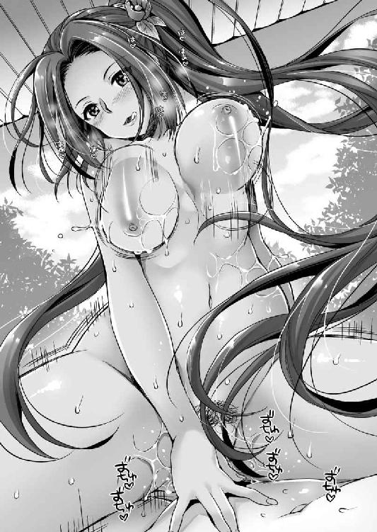
「あはっ♪ 先に一発抜いたのに、もう出しちゃったの？」
嘲るような笑みを浮かべているが、どこか嬉しそうである。
「ごめんなさい。き、気持ちよくて......すごく気持ちよくて......」
なんだかよくわからないが田鶴に失望させてしまった気がした竹千代は、すごく惨めな気分になって、泣きながら謝罪する。
「うふふ、でも全然小さくならないわね。まだ続けましょう。今度はキミから動いてみなさい」
大人の余裕といった笑みを浮かべた田鶴は、竹千代の体を抱いて仰向けになった。当然、竹千代は上体を起こすことになる。
逸物は繋がったままだ。
いわゆる正常位の体勢になったのだが、そんなこと竹千代にはわからない。ただ言われた通りに腰を恐る恐る動かしてみる。
「こ、こんな感じ......」
「うふふ、いいわよ。もっと激しくしても」
「わ、わかりました」
ズコズコズコ
田鶴の体内に逸物を入れているだけで気持ちいいが、擦れば擦るほどに気持ちいいということがわかって、竹千代の腰使いは激しくなっていく。
目の前で巨大な双乳が揺れるさまに幻惑された竹千代は、左右の掌に包み込むと、揉みしだきつつ、赤い乳首を口に含む。
「あ、ちょ、ちょっとがっつきすぎ」
田鶴が止めようとしたときには、竹千代は自分の肉体を自分の意思で制御できなくなっていた。
「ご、ごめんなさい。止まらない」
「ちゅ、ちゅごい、硬いちんちんが奥に当たっちゃっている♪」
よくわからないが、田鶴は奥をガンガン突かれるのが好きなようである。それと察した竹千代は、両の乳首を交互に吸いながら、思い切りよく腰を叩きつけた。
「ひぃ、ひぃ、ひぃ」
ドビュビュビュビュビュ！！！
なにせ精通すら本日初体験したのだ。竹千代の逸物は抑えというものが利かなかった。
あっという間に射精してしまう。しかし、逸物はまったく萎えなかったので、かまわず腰を使い続ける。
そうこうしているうちに、余裕ぶっていた田鶴から余裕が消えていった。
「ひぃ───!? そんな連続って、ああ、また出した！ また中に出されちゃった！！！」
田鶴は驚愕して、目を見開き、口腔から涎を噴いているが、竹千代はまったく関係なくひたすら荒々しく腰を叩きつけ、射精を続けた。
「ちょ、ちょっと、もう五回目よ。ひぃ───！ それなのに全然、勢いが衰えないなんて......ああ、ダメ、そんなに出されたら、妊娠しちゃう！ 妊娠しちゃう！ 赤ちゃんできちゃう───！！！」
ビクンッ！ ビクンッ！ ビクンッ！
技巧など欠片もなく、ただ乳房に貪りつき、荒々しく突貫してくる少年にさらされて、遊び慣れているだろうお姉さまもまた、容赦ない絶頂にさらされているようだった。天井を向いた足の裏がヒクヒクと痙攣している。
そんな終わりなき童貞少年の暴走も、抜かず十発もやったころにはさすがに収まった。
精根尽き果てた竹千代は、気絶するように田鶴の上に倒れ込む。その拍子に萎みきった逸物は、肉壺から抜けて吐き出された。
満足した竹千代は、田鶴の左腕の脇の下を枕にして寛ぐ。
「はぁ......、はぁ......、はぁ......、はぁ......」
田鶴の両足はだらしない蟹股開きになっており、膣穴からはトプトプと泡立つ白濁液を垂れ流していた。
「もう、こんなに出しちゃって......。キミ十回ぐらい射精したでしょ？」
「田鶴姫のオマ○コ、すごく気持ちよかったから......」
いまだに田鶴の大きな乳房を左手で揉みながら言い訳にならない言い訳をする竹千代に、田鶴は苦笑する。
「ありがとう。わかっているとは思うけど、今日のことは内緒よ」
「はい。承知しました」
またやりましょうね。と甘えようとする竹千代の声を遮るように、田鶴は思いがけないことを口にした。
「あたし、今度結婚するのよ。太守さまの命令でね」
「えっ!?」
愕然とする竹千代の頭を抱きながら田鶴は、日が暮れだした空を遠く眺めて苦く笑った。
「キミが相手だったら、面白かったんだけどね」
※
初恋の人との思いがけない初体験と同時に味わう初恋の終わりを実感して、一皮剥けたような気分の竹千代が帰宅すると、鶴之助が血相を変えて駆け寄ってきた。
「竹千代さま───ッ！！！ どこに行っておられたのですか？ 心配しましたよ」
「別にどこでもいいだろ」
田鶴に肉交を教えてもらっていたというのは気恥ずかしく、そっけなく歩み去ろうとする竹千代の後ろで、鶴之助は報告する。
「竹千代さまが某を縁側から蹴り落としたことを父が聞きまして......」
「っ」
竹千代はギクとした。
さすがに理不尽な怒り方だったという自覚はある。いかに忠臣の鑑のような鳥居忠吉も、大事な跡取り息子の面子を潰されては、もはやバカ殿に付き合いきれないと臍を曲げたか。
自分の撒いた種だと、後悔する竹千代の背中に向かって鶴之助は告げる。
「褒めておられました」
「はぁ？」
意味がわからず絶句した竹千代は、後ろを振り返る。
そこでは両手を握りしめた鶴之助が、目をキラキラさせながら得々と語る。
「大将とはときに部下に死をも命じねばならぬ立場！ 遠慮などせず思うがままに家臣をお叱りになるとは、これぞ大将の器！ と父は大変、感激しておられました。某も殿が、大将の器で嬉しゅうございます！！！」
「そ、そうか......」
理不尽に叱られたというのに、なぜか美談として喜んでいる側近を見てこそばゆい思いを味わった竹千代は、とりあえず夕食に向かう。
（家臣たちの期待が重い......）
そんなことをしみじみ考える竹千代の幼年期であった。
「おお、見違えたぞ」
田鶴に筆下ろししてもらった直後の天文二十四年（１５５５）三月、十三歳の竹千代は、駿府の今川館にて元服した。主君である今川義元から偏諱を賜って松平次郎三郎元信と名乗る。
同時に側近である鳥居鶴之助もまた、鳥居元忠と名を改めた。「元」の字がついている。
この一事をもってしても鳥居家がいかに重視されていたか、わかろうというものだ。
義元は、竹千代改め元信の元服を我がことのように喜んでくれた。
「ありがとうございます」
両拳を板の間につけた元信は、深々と頭を垂れてお礼を述べる。
今川氏第十一代当主「東海道一の弓取り」と呼ばれた今川義元は、このとき三十六歳。
彼は、徳川家康、織田信長という国民的なヒーローたちと因縁深い関係ゆえに、後世、ものすごく損をしてしまっている。
だからといって、実は名将だった、と称えるほどの英傑でもない。
なぜなら、ちょくちょく大ポカをやらかしているのだ。
その最大の失敗として名高いのが、義元が家督を継いだ直後の天文五年（１５３６）に勃発した、第一次河東の乱である。
相模の雄・北条家は、今川家から暖簾分けしたような一族であり、両家の絆は不変と思われていた。しかし、それを義元はぶっ壊してしまったのである。北条家と敵対していた甲斐の武田氏と、北条と折衝もせずに結んでしまったのだ。
当然、北条は激怒して、断絶を宣言した。そして、北条軍に攻め込まれた今川氏は、駿河河東を奪われてしまう。その後、いろいろあって、天文二十三年（１５５４）になって、今川、北条、武田の三国同盟を締結。ようやく義元の悲願が達成されるわけだが、もし第一次河東の乱の前に義元が北条としっかりとした事前協議をしていれば、この構想は十八年前に実現できていただろう、と言われている。そして、この無為に消えた時間は、結果論として今川家の致命傷へと繋がってしまった。
内政面では、亡父の定めた今川仮名目録に追加法をして発展的な施策を試みているが、それが必ずしも優れていなかった証拠として、水野氏や戸田氏の相次ぐ離反、松平氏や井伊氏の家臣たちが常に離反を画策していたことが挙げられる。
そして、軍事的な功績を探せば、そもそも義元には軍を指揮して敵を打ち破ったという事例がなかった。
もともと僧だったこともあり、自らは後方にあって、部下たちを派遣して勝利を得るというタイプだったからだ。実績がないのだから評価のしようがない。
つまり、たまたま大国の領主になれたからこそ、内外に大きな影響を与えていたが、その実、かなり脇の甘い人物である。
織田信長視点で語られるような醜悪なバカ殿ではないが、取り立てて英邁な君主でもない。ごく凡庸な戦国大名だったという評価あたりが適当ではないだろうか。
ただし、能力とは別に、元信から見ると間違いなく恩人だ。実父との縁が薄い元信にとっての父代わりと言っていい。しかし、それゆえに家康を神格化するためには、義元は悪人に仕立て上げられなくてはならなかったのだ。
元信の保護者を自認する義元は、悪戯っぽく笑った。
「それからよい機会じゃ。結婚しろ」
「はぁ？」
まるで予想していなかった元信は、驚き硬直した。
驚かせようと思って投げかけた言葉である。その反応に義元は満足げに頷く。
「わしがおぬしのために嫁を探してやったぞ」
「あ、ありがとうございます」
武家。まして、支配者階級にある者が、恋愛結婚などできるはずがない。家中のバランスなどを考えて、主君が決めるのは当然のことだ。
容姿容貌など関係ない。どんな醜女をあてがわれてもありがたく受ける覚悟はできている。
「実は呼んである。入れ」
義元が指し示す襖を見ながら、とっさに元信の脳裏に浮かんだのは、田鶴である。
田鶴は、義元の姪だ。格としては申し分ない。年齢は少し年上で、姐さん女房ということになるから、間違いなく尻に敷かれることだろうが、それはそれで安心感がありそうだ。
（先日のあれって、これの前振りだったのだろうか）
ドキドキと胸を高鳴らせながら、襖が開くさまを待つ。
見事な鳳凰の描かれた襖が開いた向こう側には、華やかな着物を纏った黒髪の少女が頭を垂れていた。
予想していた女性に比べると、ずいぶんと小柄だ。いや、女性としては普通であろう。大柄であった田鶴を予想していたからこそ、小さく感じたのだ。
右袖が茜色、左袖が緑色というお洒落な着物を纏っている。
「関口親永の娘・瀬名にございます」
彼女が顔をあげると、生気に富んだ瞳が正面から元信を射抜いた。十代前半の溌剌とした美少女であった。
「いっ!?」
見知っていたが、予想外の顔に元信はのけぞってしまう。
「どうじゃ、器量良しであろう。おぬしのために選びに選んだ娘ぞ」
瀬名の年齢はさだかではない。
今川義元は徳川家康をイジメていた。そのため嫌がらせとして、七歳も年上の嫁を押し付けたなどという説まである。しかし、客観的に見て義元が元信に嫌がらせをしなくてはならない理由はどこにもない。それどころか義元が引き立てなければ、松平家は存続していなかったのだ。寵臣と言っていい存在である。ならばその嫁を選ぶにあたって、家臣の中から年齢的に釣り合った姫を選んだであろう。
「こやつを我が娘として、おぬしに嫁がせる」
義元の言葉に、元信は安堵したような、残念なような複雑な気分になる。
その元信の表情を瀬名は見過ごさなかった。突如、元信を指さして大声を張り上げる。
「あっ、いまあんたがっかりした顔したでしょ！」
「いや、いやまさか」
慌てて言い訳する元信を無視して、体の向きを勢いよく変えた瀬名は、上座の義元に訴える。
「太守さま、わたしやっぱりヤダ～」
「これこれ」
義元は宥めようとするが、腕組みをした瀬名はソッポを向く。
「わたし、こんな芋臭い男を夫にするなんて無理です！」
主君に対してこの態度。世間知らずな小娘ならではだ。
横に従っていた父親の関口親永は慌ててたしなめるが聞きやしない。
「......」
竹千代としても内心では、おまえみたいに姦しい女は嫌だよ、と放言したくならないでもないが、義元の面目を潰すわけにはいかないので押し黙る。
とはいえ険悪な雰囲気が出てしまったのだろう。
思いがけない子供たちの諍いに慌てた義元は、なんとか二人を宥める。
「まぁ、まぁ、若いのだし慌てることはない。とりあえず婚約ということだ、なっ。時間をかけて相手の良いところをじっくりと探すとよい」
元信も瀬名も忸怩たる表情で頷く。
そして、竹千代の初恋の女性である田鶴姫の結婚相手は、今川家の譜代の重鎮で遠江引馬城主飯尾連龍であった。
※
「おお、似合いの夫婦だ」
元信と瀬名の結婚は、二年後の弘治三年（１５５７）正月十五日に行われた。
これに伴って次郎三郎元信は、蔵人佐元康と名前を改める。
「元」の字は義元の偏諱だから変えられない。「康」の字は、松平家の英雄である、祖父・松平清康の偏諱をもらったものだ。
上機嫌な義元に見守られながら、十五歳となった元康は、瀬名と杯を交わした。
ずんぐりと固太りした鈍重な少年と、雛人形のような垢抜けた美少女が並ぶと、美女と野獣のようである。
（まぁ、美人ではあるんだよな）
花嫁衣裳に身を包んだ少女を、元康が横目で観察していると、それと気づいた瀬名は、「ふん」と鼻を鳴らして顔を背けた。
いまだに人生の伴侶に不満があるようである。元康は苦笑した。ともかくも、華燭の典が終われば、次は当然のように初夜である。
瀬名は、風呂に入り身を清めた。この時代の風呂は、蒸し風呂である。
「くー、結局、押し切られてしまった」
いくら好みでないと頑張っても、所詮は武家の娘。主君や父親の意向に、逆らえるはずもない。
二年間の猶予を与えてくれただけ、大人たちの優しさがあったと言えるだろう。
それは馴染むための時間だったのだが、婚約者としてよく観察した結果、やっぱりこいつとは絶対に相性が合わないわ、と確信を持つに至った。
若い娘らしく瀬名はお洒落が好きだ。生涯の伴侶となる旦那さまにも、恰好よくあってもらいたい。
しかるに、元康ときたら、お洒落という言葉を母親の胎内に忘れてきたかのような実用一点張りの男だ。
質実剛健といえば聞こえはいいが、端的にいえばケチ。服は繕いだらけで、紙の一枚も捨てずにとっておくという生活習慣を聞いたときには眩暈がした。
「あ～、貧乏臭い」
ケチケチした元康の逸話を知れば知るほどに泣けてくる。
げんなりとしながらも風呂から上がると、侍女に手伝ってもらって真新しい純白の絹でできた一重を纏い、白絹の帯で締める。
これは初夜を迎える新妻の様式美というものだ。
（まさかあいつ、新床にまで繕いだらけの寝具じゃないでしょうね。そんなんだったら、マジで蹴り入れて逃げ出してやる。そして、次郎法師と一緒に生涯、仏門に帰依してやるんだから！）
できもしないことを夢想した瀬名は、やがて諦めの溜息をつく。
「まぁ、次郎法師みたいに出家させられるよりはマシなんだろうけど......一応、太守さまの覚えめでたき領主だしね」
不幸すぎる従姪に比べれば、自分の境遇は百万倍はマシである。そう自分を慰めながら、灯りを点した侍女の案内で寝室に向かう。
渡り廊下から空を見ると月が出ていた。満月だ。
旧暦のことであるから、一月は早春である。駿府は温暖な土地であり、蒸し風呂で暖められた体には、そう肌寒いということもない。
一方、元康は、鶴之助改め鳥居元忠に励まされていた。
「若、女ってやつは最初が肝心ですよ。特に瀬名姫様はお気の強い方ですからね。ガツンと決めないと」
三歳年長の元忠もまた結婚している。相手は松平家広の娘。母親は水野忠政の娘。家康の母於大の方も水野忠政の娘である。すなわち、元康の従姉妹と結婚しているのだ。
年上で妻帯者からの助言とはいえ、どこか抜けたところがある元忠に、ここぞとばかりに兄貴面されるのも、なんかむかつく。
「わかったから、もう行け」
邪険に元忠を追い払った元康は、独りとなった寝室で火鉢の炭を眺めながら嘆息した。
「はぁ～、結婚か」
正直、結婚に、いや、家族というものに今一つ実感を持てない元康である。
なにせ三歳のときに、母親は実家に帰された。父親と離れたのは五歳だ。そして、敵地で見捨てられたのである。
つまり、家庭的な暖かさとは無縁に育った。
それが結婚して、どういう家庭を築くことになるのか、まったく想像ができない。
彼はただひたすらに、理想の君主であることを家臣たちに求められ、そのように育てられてきた機械人形のような部分があるのだ。
今一つ現実感のないままに、火箸で炭を突っついていると、侍女が奥方の来訪を告げた。
※
「お方さまお渡りになりました」
「う、うむ。入れ」
元康が応じると、障子を開けて、白い一重の瀬名は室内ににじり入った。
月光を背後にたたずむ彼女の姿は、息を呑むほどに美しい。
「......」
芸術などという非実用的なものに生涯、まったく興味を持てなかった元康だが、瞬間的に芸術的という単語が脳裏に浮かんでしまった。
澄ました顔というか、不満さを必死に封じ込めた表情の瀬名のほうは、予め傅役のばあやかネイヤに教えられていたのだろう。儀礼的に礼儀正しく、三本指を畳について、頭を垂れて口上を述べる。
「ふつつかものですが、今後とも末永くよろしくお願いします」
「こちらこそよろしく頼む」
形式通りに応じた元康の声には、どこか空々しさがあった。
瀬名の背後で障子が閉められ、室内にはしばしなんとも言えない時間が流れた。真新しい畳の匂いの漂うなか、痺れを切らした瀬名が口を開く。
「あの～」
「なんだ？」
「わたしはいつまでここにいればいいの？ 寒いんだけど」
障子の傍に座っている瀬名は、わざとらしく両腕で自分の体を抱く。
「それは悪かった。こちらへどうぞ」
元康に促された瀬名は、遠慮などせずに火鉢の傍に正座した。ただし、炭に手を翳すでもなく、膝の上に置いて背筋を伸ばしている。
「......」
二人の横には布団が敷かれていた。
これからなにをするか、いや、しなくてはならないのか、二人ともわかってはいるのだが、いきなり押し倒すのも無粋な気がする。
粋だ無粋だなどということに興味のない元康であったが、瀬名はそういうことを気にしそうだ、ということを察することはできた。
そのため切っ掛けが掴めない元康は横目で、瀬名を見る。
ツンと澄ました顔。結い上げられた黒髪。晒された白い項が息を呑むほどに美しい。
（こいつ顔、小さいな）
やはり男と女は違うということだろう。
元康とてこの二年間、まったく準備してこなかったわけではない。田鶴に筆下ろしをしてもらったあと、ひそかに継母の真喜姫に修行をつけてもらった。
男の自分が主導的に振る舞わねばならないとは、頭でわかっているのだが、自分には不釣り合いな美少女を前に、手を出すことが躊躇われてしまう。チラチラと窺っていると、瀬名は面倒臭そうに溜息をついた。それと見て取った元康が促す。
「なにか言いたそうだな」
「あんたの想い人って、田鶴さま？」
いきなり、ずばり斬り込まれた元康は酢を飲んだ顔になる。
「ま、まさか......」
筆下ろししてもらった、ということもばれているのか？ 動揺を隠しきれない元康を見やって、瀬名は続ける。
「隠したってあんたの態度を見ていれば嫌でもわかるわよ。まぁ、田鶴さま美人だしね。女だてらに武芸に秀でている。筋肉バカなあんたの好みってまさにあれよね」
「おまえだって、俺なんかじゃなくて、例えば今川氏真さまみたいに、風流に造詣があり、洒脱な相手がよかったんだろ」
義元の養女となった瀬名から見ると、義理の兄となった今川義元の嫡男今川氏真は、蹴鞠の達人でかつ和歌の達人として知られる。
ちなみに蹴鞠はできないし、文学にも造詣のない元康との相性は、なにもかも対極に見えて、その実、仲は悪くない。家康は天下を取ったあとも、氏真の生活の面倒を見るだけではなく、友達付き合いをしていた。
「そんなのあたりまえでしょ」
元康の皮肉を、瀬名はニコリともせずに怖い顔で応じる。
「よりによってあんな芋臭いやつと結婚させられるだなんてって、友達に気の毒がられたわよ」
「それは申し訳ないことをしたな」
不貞腐れた元康の返答に、瀬名は少し慌てた顔をする。
「あれ、気分を悪くした？」
「別に......」
元康の言葉に、瀬名は苦笑する。
「なに拗ねているのよ。ほんとガキなんだから」
「ガキじゃねぇよ」
ムキになって応じる夫を前に、瀬名は溜息をつく。
「氏真兄様には氏真兄様のいいところがあり、あなたにはあなたのいいところがある。そのくらいわたしだって心得ているわよ」
「......」
「あんたに雅さなんて期待してない。というか、今川配下の一武将に過ぎない者が、雅さを身に付けたって家族を守れない。それよりも、武骨に泥臭く真面目に誠実に生きてくれたほうが助かるわ」
思いがけない優しい言葉に、元康は顔を明るくする。
「同じようにわたしは、田鶴さまのような勇ましい女武者にはなれない。あんたにはわたしのよさを見つけて欲しいわね」
「あ、ああ......そうだな」
妻の見識に感心した元康は、右腕で瀬名の肩を抱き寄せた。
「くっ......やるの」
ビクッと肩を震わせた瀬名は、怯えた声を出す。
「やる」
個人的な好悪の念など関係ない。主君たる義元の配慮で、養女を妻にしたのである。
仲良くするのは元康にとって仕事のようなものだ。
初夜もまともにできなかったということでは、主君の寵愛に陰りが生じるというものだ。
くそ真面目な夫の顔を見て、新妻は口を尖らせる。
「少しは照れなさいよ。ほんと雰囲気ないんだから。まぁ武骨なあんたらしいと言えばらしいけど」
ペラペラとよく話すのは、若い女の特徴らしくもあるが、いまは自らの緊張を誤魔化すためでもあるだろう。
その瀬名の口を元康の右手が、そっと封じた。
「ここからは夫婦らしい営みで愛を育てるとしよう」
「......はい」
あまりにも率直な夫の言い分に目を丸くした瀬名は、こういうやつだ、と諦めたように素直に頷いた。
もはや盛大な結婚式をあげてしまったのだ。覚悟はできている。瀬名はそっけなく目を閉じると顔をあげてきた。その意を汲んだ元康が不器用に顔を近づけると、唇を重ねた。
ぴとっと瑞々しい唇が吸い付いてくる。
「......」
あれだけ姦しかった少女が、静かになった。夜のしじま。遠くで潮騒の音が聞こえる。ややあって元康は唇を離す。瀬名は目を開いた。
互いの顔を至近距離で見つめる。
不意に瀬名はぷっと噴いた。
「なに笑っているんだよ」
「いや、あんたでも緊張するんだなぁって思って」
むっとした元康は、文句を言う瀬名の背後に回って抱き寄せた。
「......っ」
息を呑んだ瀬名は身を固くする。彼女も緊張していることはまるわかりだ。それと察して勇を鼓した元康は、緊張に震える右手を、白絹の襟元から入れた。すぐに柔らかい乳房が掌に納まる。
「あっ」
瀬名は軽く喘ぎ声を漏らした。
同じ乳房でも田鶴のものとはだいぶ違った。田鶴の乳房は大きく肉感的で、ものすごい弾力があった。油断していると弾き飛ばされるような、バネを感じたものだ。それに対して瀬名の乳房は、一回りは小さい。男の掌にちょうど納まる程度であり、瑞々しい肉感は掌に張り付いてくるかのようだ。
新鮮な果物を連想させる。ミカンのように、しゃぶりついたら甘い果汁が口内いっぱいに溢れてくるのではないかと思われた。
乳房全体の揉み心地をしばし楽しんだあと、頂の突起を掌の中央で捏ね回した。それから、親指と人差し指で摘む。
「んっ」
男に背後から抱きしめられた瀬名は鼻を鳴らす。細い肩がプルプルと震えていた。
そうこうしているうちに、乳首が突起してきた。繊細な突起を、男の武骨な指が扱く。
「ふん......、ふん......、ふん......」
項を赤くした瀬名は喘ぎ声を漏らすのは恥ずかしいこと、と考えているのだろうか。必死に珊瑚のような唇を閉じているものだから、鼻息が漏れている。
白い頬が紅潮しており、感じていないわけではないのだ、と見て取った元康が質問した。
「ここ弄られるの、気持ちいいのか？」
「き、聞かないでよ、そういうこと」
薄闇の中で、気が強くて口の減らない少女が、煩わしげに吐き捨てる。
（へぇ～、気持ちいいのね）
口では絶対に勝てない少女を、快感で翻弄させることに喜びを感じた元康は、執拗に乳首を弄ぶ。
田鶴は完成された女性だった。彼女との睦言は、鷹匠に飼育された鷹と戯れるような喜びであったのに対して、瀬名は雛鳥だ。まだだれにも躾けられていない。自分がこれから飼育して、自分好みに調教するのだ。そんな傲慢な思いが、沸々と胸の奥から湧いてくる。
しばし掌で弄んでいた乳房から右手を離し、懐から抜く。そして、両手で白絹の襟元を掴んで、左右にぐいっと開いた。
ぷるん
白く細い肩に続いて、双乳が薄暗がりの寝室にまろびでる。
一重の夜着は、腰帯のところまではだけて、上半身が裸となった瀬名は、反射的に両腕で胸元を隠した。
「おまえのおっぱい見たい」
「......助平」
赤面し羞恥に震えていた瀬名だが、夫のもの言いたげな視線を受けて正座のまま向き直った。それからゆっくりと手を胸元から離す。
薄い闇の中に、初雪のような肌が浮き上がる。
薄い両肩。細い鎖骨。そのすぐ下からぐいっと盛り上がった乳房は、お椀型である。その頂には初々しい野イチゴのような乳首が乗り、ツンッと上を向いていた。
徳川家康の正室でありながら、後世にその記録をほとんど伝えられていない瀬名だが、俗説の中に、「肌の白い美人だった」という記録があるそうである。神君伝説の犠牲者である彼女を褒めているくらいだ。よほどの美肌の持ち主だったのだろう。
その夜の闇の中で輝くような玉の肌に、元康は目を奪われてしまった。
「......」
夫の無遠慮な視線をしばし無言で受けていた瀬名は、やがて思い切ったように口を開く。
「どうしたのよ。わたしの裸って......へん？」
我に返った元康は慌てて応じる。
「いや、その綺麗だなって思った」
口の減らない女とはいえ、さすがは家中から選び抜かれた美少女である。
「そ、そう......」
元康の朴訥とした賛辞に、瀬名は必死に気難しげな表情を作りながらも、嬉しそうな顔が透けて見える。
女として夫に褒められるのは悪くない気分なのだろう。まして、その夫は朴念仁の極みであり、心にもないお世辞など言えるタイプではない。
「ま、まぁ、わたしはあなたのお嫁さんなわけだし、気に入ったのなら、好きなだけ愛でるといいわ」
「ああ」
もはや我慢の限界というかのように、瀬名の体を抱き寄せた元康は、両の乳房をそれぞれ手にとって、左右の乳首を交互に吸った。
膝立ちとなり、元康の頭を抱いた瀬名は、背筋を反らして訴える。
「はぁん、や、優しくして」
若い男の荒々しい愛撫を両胸に受けて、瀬名は顔を顰めて悲鳴をあげたが、逃げ出そうとはしなかった。
元康は夢中になって、若々しい美乳を弄び、赤い苺を貪った。
「はぁ......、はぁん、あん......ああ、なにこれ......胸から熱くて、ああ～ん」
必死に喘ぎ声をあげまいと努力していた瀬名だが、ついに我慢の限界を突破したかのように甘やかな牝喘を狭い室内に響かせた。
いくら気位が高くとも、若く健康な体は、感度がいいのだろう。
「あん、あん、あん、あああああああああ」
常にツンと澄ましている少女が脱力したところで、ようやく満足した元康は乳首から顔を離した。
「ふぅ......」
なんとか安堵の吐息をついた瀬名は、左手で胸元を押さえ、右手では頭髪を整えて、必死に表情を繕いながら吐き捨てる。
「はぁ、はぁ、はぁ......まったく男はケダモノだとは聞いていたけど、ほんとケダモノね」
ツンケンしているがどこか嬉しそうである。女の本能の一つとして、男に荒々しく求められるのも嬉しいという気分もあるのだろう。
元康は口元を右手の甲で拭いながら質問する。
「気持ちよかったか？」
「まぁ......ね」
しぶしぶ認めた瀬名は、不意に意趣返しのように訴えてきた。
「今度はわたしに、あんたの体を見せてくれない？」
「ああ」
一瞬、戸惑った元康だが、すぐに瀬名の心理を察することができた。
男が女の体に興味があるように、女も異性の体に興味があるのだろう。
たったいま自分がさんざんに、瀬名の乳房を堪能させてもらったのだ。おあいこというものだろう。
元康は素直に着物の上をはだけた。
「着物の上からでもわかっていたけど、ほんとすごい筋肉ね」
目を輝かせた瀬名は、夫の厚い胸板をパンパンと叩く。
「肌はつやつや。まるで赤ちゃんみたい。触っていると気持ちいいわね」
「く、くすぐるのはやめろ。くすぐったい」
「あは。男なのに乳首を触られて気持ちいいの？」
からかいの声をあげながら瀬名の手は元康の腹部へと移動していき、さらに下に移動しようとして、もの言いたげな顔になって止まる。
「......」
瀬名の視線を追えば、胡坐をかいた元康の下半身では褌を突き破らんばかりの隆起がある。
褌の中になにがあるか、ここに来る前にやり手ババアのような側近に教えられてきたのだろうことは、十分に想像がつく。
瀬名の気持ちを推し量った元康は無言のまま立ち上がると、褌を解いた。
ぶるん
と擬音が聞こえそうな勢いで、逸物が隆起する。元康が立ち上がっているために、逸物はちょうど瀬名の鼻先に飛び出した。
ギョッとした表情で瀬名は目を剥く。
元康はその場でどっかと胡坐をかき、隆起する逸物を誇示する。
それを恐る恐る見下ろした瀬名は、呆れた顔で吐き捨てた。
「デカっ!?」
「そうか？」
元康としては他人と比べたことはない。
目の前に逸物に興味はあっても、凝視するのは女としてどうかと判断に困ったのだろう。瀬名の目が泳いでいる。
「これがその......ごにょごにょごょ......アレでしょ。女の中に入れるやつ」
良家のお嬢様として、淫語を口にすることは憚られたのだろう。瀬名は口の中で誤魔化す。
口の減らない娘の羞恥に口ごもるさまに、元康は笑みを誘われる。
「ああ。おまえのホトに入れる」
元康のほうは悪びれずに端然と頷く。
引きつった顔になった瀬名は、元康の顔と股間を交互に見て、額に汗しながら応じる。
「さ、触っていい？」
「ああ」
上半身裸のまま姿勢を正して気合いを入れるように生唾を飲んだ瀬名は、両手を逸物に近づける。
軽く躊躇ってから、両手でウナギでも掴むように、ぐいっと肉棒を挟んできた。
ややあって怯えたように元康の顔を見る。
「か、硬い。それにこの大きさ。丸太かと思ったわよ。本気でこれをわたしの中に入れる気なの？」
「ああ」
あたりまえに頷く元康の顔を見やって、瀬名は怯えたような顔になる。
「む、無理。こんな大きいの入らないわよ」
「入るよ」
「いや、無理。裂ける。絶対に裂けるから」
瀬名は焦った顔で力いっぱい応じる。
「いや、ダメだ。今夜やらないと太守さまに怒られる」
「むー」
逸物を両手で握ったまま瀬名は、双乳をはだけていることも忘れて難しい顔になる。
「そ、それはそうだけど、いきなりこれは敷居が高いというか、やっぱり、こういうのは時間をかけてゆっくりと......その、あ、そうだ。く、口でするから、それで許して」
「口でする？」
困惑する元康に、赤面した瀬名は目を泳がせながら言い訳する。
「腰元に聞いたのよ。男って口でされても喜ぶって」
「まぁ......」
瀬名の妥協案に戸惑いながらも元康はしぶしぶ頷いた。
「それじゃ、決まりね」
顔を輝かせた瀬名は、改めて男の前で正座となり、うつむき加減になると、右手の人差し指で、ツンツンと亀頭部を突っついた。
プルンプルンと躍る逸物のさまに、瀬名は失笑する。
「なにこれ、変なの」
右手を肉棒に添えた瀬名は、左手で顔にかかる黒髪を押さえると、うつ伏せになり、恐る恐る逸物の先端に顔を近づけていった。
吐息が亀頭部にかかる。
チラと上目遣いで元康の顔を確認してから、瀬名は薄い紅の塗られた唇を開くと、淡い桜色の舌を出した。チロリと亀頭部の先端を舐める。いったん舌を口内に戻して、難しい顔をする。味を確認しているようだ。
それから改めて詰問する。
「ここに触れたり、舐められたりするのって本当に気持ちいいの？」
「ああ」
「そう」
そっけなく応じた瀬名だが、どうやら自分がやっていることに間違いはないのだ、という自信を持ったのだろう。
先ほどよりも大胆に舌を出し、丁寧に亀頭部を舐めまわした。
ペロリペロリペロリ
唾液が溢れて逸物を濡らしていく。
「くっ」
元康は呻き声を漏らしてしまった。
それを聞き、上目遣いで見上げてきた瀬名は、嬉しそうに微笑する。
「うふふ」
気の強い女だけに、男を翻弄するのが気持ちいいのだろう。楽しそうだ。
（ヤバイ、このままでは出てしまう）
本番の前に出してしまうのは、男としてあまり恰好いいことではない気がした。
（元忠の言い分じゃないが、最初にガツンと言わせるためにはここで出したら負けだ）
そう判断した元康は、慌てて瀬名を逸物から引き剥がした。
「そこまで」
「えっ」
戸惑う瀬名を布団の上に仰向けに倒す。
瀬名は絶世の美少女ではあるが、武芸に関しては武家の子女としての平均的な技量しかない。それに対して、スパルタ教育で武芸を仕込まれた元康には一日の長がある。
元康は、有無を言わさずに瀬名の両足首を持って、左右に開かせた。
バサッと白い一重の着物の裾が開ける。
瀬名の上半身は腰帯まではだけている。今度は下半身が腰帯まではだけたことになる。
両足首を瀬名の顔の左右に押し付ける。股間部を押し上げさせた姿勢。俗に言うマングリ返しの体勢に固定した。
この時代の女性は基本的に下着をつけない。着物の裾が開けるような特殊な力仕事をしている女や、田鶴のように馬に乗る女は着物の裾が開けたときに中身が見えないように褌をつけることもあるようだが、これは特殊な事例だ。たいていはノーパンであるから、農作業などをしているとき、着物が捲れると大事なところが簡単に見えてしまうことは珍しくなかった。
また、経済的な余裕がある女は、湯文字といわれる腰巻のような下着をつけていた。
これは隠すことが目的ではなく、高価な着物の裏地を汚さないための処置であろう。
瀬名もまた白い湯文字をつけていたが、これは薄手の巻きスカートのようなもので、あっさりはだける。
「ちょ、ちょっと、この恰好って......」
白い一重が捲れて、白い両足の根元まであらわとなっている。
ぷっくりとした土手高の恥丘の上に、うっすらと柔毛が生えていた。
どんなにお洒落なお姫様でも、肛門もあれば生殖器もある。
興奮した元康は、左右の指を肉割れの左右に添えて、割り開く。
桜色の隠花が花開き、ぷ～ん、とした牝臭が香る。
田鶴の匂いより何倍も濃いようだ。いわゆる処女臭というやつだろう。
「おまえだって触ったんだからいいだろ」
「それは......だけど」
「足、自分で持っていろ」
元康の命令に、瀬名は素直に従い、自らの両足の膝の裏を、それぞれの両手で抱えた。
羞恥に顔を真っ赤にした気の強い少女の顔と、生々しい生殖器のギャップを楽しみながら元康は、右手の人差し指を、ホトの中に入れて、襞肉を掻き混ぜる。
クチュクチュクチュ......
「あ、ああ......ダメ、そんな音......あん」
包皮に包まれた陰核に触れると、瀬名の下腹部はビク、ビクビクと痙攣した。
「ここ気持ちいいのか？」
「そ、それは......き、気持ち、いい」
赤面しながらも瀬名は素直に認めた。
「すげぇ、トロットロの蜜がとめどなく溢れているぞ」
田鶴よりも明らかに液量が多い。感動した元康は、不意に忙しくうごめかしていた右手の人差し指を離した。指先と陰阜の間で、ヌラーと光る糸が引く。
「イヤッ！ やめて」
自らの愛液の粘りを見せつけられた瀬名は、慌てて顔を背ける。
その仕草の一つ一つがたまらなくかわいい。もっともっと瀬名のかわいい顔を見たいと思った元康は、瀬名の陰部に顔を埋める。
「ちょ、ちょっと、どこに顔を埋めているのよ、そこ不浄な場所よ、ああ、なに舐めているのよ。そんな、ダメぇぇぇぇ」
慌てふためく瀬名を押さえつけ、元康は存分に舌を動かす。
ペチャペチャペチャ......
「ひぃ、ひぃ、恥ずかしい。こんなの恥ずかしすぎるわよ。ああ♪」
瀬名の羞恥の悲鳴を楽しみながら、その垂れ流す樹液を貪る。まるでカブトムシになった気分だ。
元康は思いっきり音を立てて啜る。
ジュルルルルル......！！！
「ひぃ、やめて、飲まないで！」
当初は羞恥に悶絶していた瀬名だが、無理やり舐められているうちに、羞恥心を超える、肉体的な快楽に襲われだしたようだ。
「はぁ、はぁ、はぁ......」
男に身を預けて、すっかり惚けてしまった表情になっている。
生気に輝かしていた目は虚ろで、花びらのように可憐であった唇は半開きとなり、口角から溢れた唾液が、顎を濡らしている。
（すげぇ、瀬名のやつがこんな表情をするなんて......）
いつも元気で姦しい少女とは思えない。彼女のこんな無防備な表情を見たことがあるのは自分だけだろう。
逸物が疼く。
（これは俺の女だ。ぶち抜きたい）
そんな牡としての独占欲に支配された元康は、貪っていた陰華から顔をあげた。
「......」
いきなりの快感の中断に、瀬名は驚いたようだ。我に返って元康の顔を見る。
その視界に、いきり立つ肉棒が広がった。
「入れるぞ」
「くっ......、わかったわよ。好きにするといいでしょ」
逸物の大きさを畏怖している瀬名だが、勇を鼓して頷いた。
そこで濡れそぼった女唇に、極太の逸物の切っ先を添える。
その光景を見て、瀬名は頬を引きつらせた。
「あ、あの......、やっぱり、大きすぎるというか、わたしにはまだ早いというか」
「ダメだ」
瀬名の繰り言は無視して、元康は腰を落とす。
膣口が広がり、亀頭部が埋まっていく。
ぐっ
止まった。切っ先になにかが当たっている。
細い足を痙攣させた瀬名は、絞殺されんばかりの悲鳴をあげた。
「や、やっぱ無理。痛い。痛いって！」
目元に涙を溜めた瀬名は必死に、元康の胸を押し退けて逃れようとするが、体重が違う。瀬名の体のほうが動く。
元康はそれを追いかける。
「痛い、痛い、痛い」
瀬名は必死に逃げた。いわゆる処女のずりあがりである。
死力を尽くして逃げた瀬名は、ついに布団の外にまで出てしまったが、そこで限界に達した。
ゴン
瀬名の頭頂部が、部屋の壁に当たったのだ。直後に逸物が入った。
プチン！
乙女の最後の砦が破れて、荒々しい肉槌が押し込まれる。
「ひぃぎっ！！！」
悲痛な悲鳴をあげた瀬名は、両腕で元康の肩をぎゅっと抱きしめてきた。同時に膣洞も信じられない勢いで締め上げてくる。
「うお」
元康もまた驚きの悲鳴をあげてしまった。ブツブツとした膣壁が肉棒に絡みついてくる。
（こ、これは滅茶苦茶気持ちいい）
我を忘れた元康は、破瓜直後の新妻を気遣う余裕もなく、瀬名の白い両足をそれぞれの肩にかけて腰を荒々しく動かしてしまった。
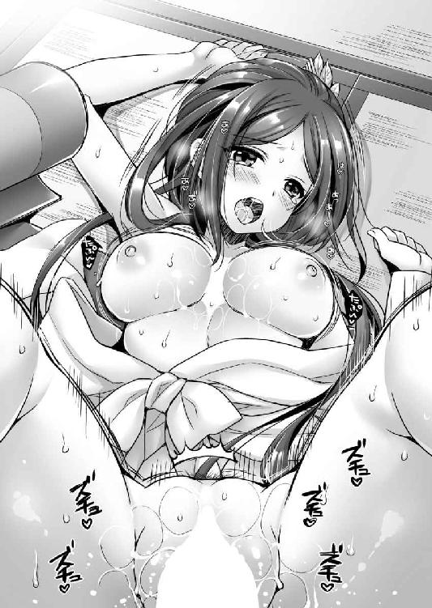
「そ、そんな激しくされたら！ 奥がズンズンされて！ ああ♪」
若く鍛え抜かれた牡の、有り余る体力で力の限り掘削されるのだ。
哀れなるウサギには、逃れるすべはない。
しかし、牝には圧倒的な牡に、征服されたいという本能的な欲望もある。
いつしか瀬名もまた我を忘れて、ただの牝と堕してしまった。
「き、気持ちいい！！！」
常の気品を剥ぎ取られた淑女は、大口を開け、白珠のような歯を晒し、涎を噴きながら悶絶する。それはまさに牡に征服されてしまった牝の顔であった。
そして、元康は欲望を爆発させる。
「うおおおおっ」
雄叫びとともに、肉棒の、いや全身の滾りを、女の最深部に向かって放出する。
ドクン！ ドクン！ ドクン！
「そんな、ダメ、入ってくる。入ってくる。熱いのがいっぱい......」
膣内射精される牝としての喜びに、瀬名は呆然としている。
新妻に思う存分に注ぎ込んだ元康は、萎んだ逸物を引き抜いた。
新郎の暴虐からようやく解放された新婦は、股関節が外れてしまったかのように両足を広げていた。
「あ、ダメ、溢れちゃう」
ブシュッ
膣穴から白濁液が逆噴射してしまった。白い布団に、赤い血が点々とつく。
欲望を吐き出して我に返った元康は和紙で、瀬名の股間を拭ってやった。
「あ、ありがとう」
瀬名は恥ずかしそうに夫の気遣いを受ける。
「ごめん。気持ちよかったからつい......」
「べ、別にいいわよ。わたしはあんたの妻なんだし、やりたいようにやってくれて」
瀬名の言葉に、元康は表情を輝かせた。
「それじゃ、もう一回やっていいか？」
夫の顔をまじまじと見た瀬名は、顔を背けながら応じる。
「し、仕方ないわね。あんたがやりたいなら好きなだけやればいいでしょ」
その後、新婚の若夫婦は滅茶苦茶にやりまくった。
※
かくして、瀬名は即妊娠。
永禄二年（１５５９）三月六日に長男竹千代。のちの松平信康を出産。さらに翌永禄三年（１５６０）六月四日に長女亀姫を産む。
ようするに、なんだかんだ言って、このころの元康と瀬名はラブラブだったのである。
「なぁ、やっぱりこれは派手すぎないか？」
永禄三年（１５６０）五月十日、松平元康は十八歳となっていた。
結婚から三年の歳月が流れている。瀬名との間には、長男が生まれていた。
初陣は二年前。すなわち結婚の翌年の永禄元年（１５５８）二月五日にすませた。今川陣営から織田陣営に寝返った加茂郡寺部城主・鈴木重辰を攻めたのだ。攻略は叶わなかったが、城下を焼いて引き揚げ、転じて附近の広瀬・挙母・梅坪・伊保を攻めた。この戦功により、一人前と認めてくれたのだろう。義元は松平家旧領のうち山中三百貫文の地を元康に与え、腰刀を贈った。
だいたい三万石の大名といったところだろうか。無理なく出せる遠征兵力は七百五十人だ。
そんな公私ともに順風満帆の青年大名は、困惑した表情で自らの鎧を見下ろす。それは金ぴかであった。金溜塗具足という名称がついている。
「あなたは地味なのですから、せめて鎧ぐらいは派手に装ってちょうどいいのです。手柄というのは働くだけではダメなのですよ。目立ってみなに認めてもらい、初めて恩賞にありつけるのですから」
若妻の激励に元康は苦笑する。
（女という生き物は、子供を、特に嫡男を産むと腹が据わるものらしい）
いくらデザインに不満を感じていても、作ってしまったものを破棄するのはもったいない。
鎧というのは、この時代の戦争において戦車や戦闘機のようなものだ。一つ作るのにそれぐらいの経済的な負担がかかる。そのため鎧を持てず着流し姿で戦場に出る者も多かったのだ。
貧乏性の元康は諦めて頷く。
「では行ってくる」
「気をつけていってらっしゃいませ」
乳飲み子を従えて元康に一礼した瀬名は、夫の側近にも声をかける。
「元忠殿、くれぐれも殿のことを頼みますよ。殿は血気に逸るところがありますからね」
「はい。某、殿の盾でございますれば、殿より先に討ち死にしてごらんにいれます」
鳥居元忠の返答に、瀬名は頭を抱える。
「あなたはあなたでなんでいつも死ぬこと前提なんですか！ ちゃんっと殿を守って生きて帰りなさい！」
「しょ、承知いたしました」
瀬名の権幕に負けた元忠は、額に汗を浮かべながら直立不動で頭を垂れる。肩を竦めた元康は、今川軍の先鋒として府中を出陣した。
こたびの出兵は、今川軍の動員兵力の限界までを動かす、空前の大作戦である。
その戦役は、後世、桶狭間の役と呼ばれることになるのだが、このとき元康をはじめとして、だれ一人そのような名称がつくなどと予想だにしていない。
そう日本人ならば、だれでも一度は聞いたことのある、あの有名な桶狭間の戦いの始まりであった。
勝敗の結果は、あえて書く必要もないほどだ。
しかしながら、その過程については、通説と史実がこれほど乖離している戦役というのも珍しいだろう。
通説の織田信長視点では、圧倒的な大軍を率いた今川義元を相手に、絶体絶命の中で信長が天才的な軍事センスで逆転勝利を飾った。日本史における寡兵で大軍を破った代表的な戦として、日本人共通認識の神話となっている。
ただし、この戦に限らないが、戦国時代の兵数ほど当てにならないものはない。所詮は数字である。いかようにも弄られるものだ。
特に織田信長という人は、典型的な乱世の梟雄であるから、打ち破った敵がいかに強大であったか、と過剰に誇示するところがあった。
江戸時代の軍事教科書と言われる甲陽軍鑑に「だいたいにおいて、信長公には残念ながら空言が多い。そのわけは、例えば今川義元に勝ったときも、今川の軍勢六万に勝ったなどという。そもそも常識で考えてみるといい。三河・遠州・駿河の三カ国だけで、どうして人数が六万もあろうか。しかも小さな国であるし、大よそに見積もっても、せいぜい二万四千ほどであろう。事実を語ったほうが、かえって功名話となるのに、いらざる嘘をつくから、義元との合戦などにしても本当の手柄話まで浅く思われてしまうのである」と書かれているほどである。
今日の国民的な人気を見ると信じられないことであるが、織田信長という人は、長い間、あまり評価されていなかったようだ。それがここまでの国民的な英雄になったのはつい最近。それも某ロングランシリーズのテレビゲームのタイトルに名前を使われてからのようだ。
ちなみに徳川家康に関して言えば、その言説はかなり信頼できると言われる。家康にはこの手の外連味がないのだ。それゆえに派手さも面白味も少ない。もっとも、家康の場合は、後世、その神格化のために徳川御用学者のみなさんに盛られてしまったり、民間伝承が暴走してしまったりしているのだが......。
甲陽軍鑑では、今川軍はせいぜい二万四千と予測しているが、実際はさらに少なかった可能性もある。
というのも、太閤検地によれば今川方の領地である駿河十五万石、遠江二十五万五千石、三河二十九万石だから全部合わせて六十九万五千石である。ここから無理なく動員できる兵力は一万七千五百人に過ぎないのだ。
対して、織田方の領地尾張は一国で五十七万石。これだけで一万四千二百五十人は動員できる。そのうえ三本もの大河があって良港に恵まれた経済的に豊かな土地だ。しかも、地元での迎撃戦である。遠征軍よりも容易に兵を集めることができた。
つまり、戦況は互角。いや、実は今川軍のほうが不利で、戦線崩壊の危機にひんしていたのだ。
今川家と織田家には長い戦争の歴史がある。
三河の英雄、すなわち元康の祖父・松平清康が亡くなったあと、息子松平広忠と伯父松平信定が対立。広忠の後ろに付いたのが今川であり、信定の後ろに付いたのが織田である。
結果、広忠の勝利となったが、水野氏や戸田氏といった織田に通じる豪族はあとを絶たなかった。
そうこうしているうちに、尾張の雄・織田信秀が病没。息子の織田信長が家督を継いだ。
すると織田家は内紛に突入してしまう。
これにより織田方の豪族が、続々と今川方に寝返る。
尾張鳴海城主・山口教継が今川方の傘下に入り、その策略で大高城、沓掛城を奪取。さらに知多半島西側の寺本城主花井氏も今川方に転じた。
これにより、織田氏と水野氏の領土は分断される。
天文二十三年（１５５４）、知多半島に孤立した裏切り者水野信元を滅ぼさんと、今川軍は水野氏の居城緒川城の眼前に村木砦を築く。
これで水野氏にトドメを刺すと企図した今川方では、義元自らが築城の指揮を執ったという説まである。
これにて水野氏が降伏するのは時間の問題と思われた。
しかし、このとき、織田信長はまさに軍事的天才であることを示す。
陸路が遮断されて通れないと悟ると、嵐の中を船に乗り、知多半島を大回りして海路で援軍に駆けつけるや、村木砦を攻略してしまったのだ。この劇的な勝利。村木砦の戦いの勝敗によって、織田信秀病没から今川に吹いていた風が止まってしまう。いや、それどころか織田に吹き始めた。
寺本城の城下は焼き払われ、織田と水野の陸路は開通。三河でも織田方に寝返る豪族が出始める。
家康が初陣で戦った鈴木重辰などがまさにそれだ。
三河の地でも安定しなくなったのだから、尾張の地にある鳴海城、大高城、沓掛城は、敵地に孤立してしまう。
義元が、信長の仕掛けた偽手紙の謀略に嵌って山口教継を粛清してしまったことも人望を失う原因となった。今川に寝返っても、結局は殺されてしまうのではないか、と豪族たちの精神に枷を作られたのだ。
織田、水野連合軍は、三城の周囲に幾つもの砦を築いて兵糧攻めにする。
織田領に打ち込んだ杭は、逆にそれを維持するために今川家から際限なく物資と人員を搾り取る蟻地獄となったのだ。
特に問題になったのが、大高城である。城の周りには、丸根砦、鷲津砦、向島砦、証光山砦、氷上山砦が築かれて完全包囲されてしまっていた。
大高城の城主を務めた将の名は、鵜殿長照。すなわち、田鶴の兄だ。
補給もままならぬ中で籠城する長照は、後ろの山から取ってきた松や杉をはじめ、さまざまな野草を粉にした。そして兵士たちが戦わない日は、この粉を食べさせて、戦いをすると日を決めたときには、米汁を与えた。
粉というのは、おそらく、お粥のような感じで食したのだろうと考えられているが、とにかく凄絶な籠城戦だ。
今川軍は、これを救出しなくてはならなかった。
最前線で戦う忠勇なる家臣たちを見捨てたとあっては、君主としての権威を著しく傷つける。
今川家では最前線で戦う兵士たちを助ける力も意思もないのだ、ということになって、「今川頼るに足らず」と傘下の諸将の離反を招く。
実際、こうやって滅亡した戦国大名は枚挙にいとまがない。
かくして、今川義元は大高城を、そして、忠臣を助けるために全軍出陣の大号令をかける。
「尾張の小僧め、調子に乗りおって。格の違いを見せてやるわ。行く手を邪魔するものは容赦せん」
今川義元が出陣命令を下したのは、五月一日。旧暦のことゆえ梅雨の季節であった。
六年前の村木砦の戦いのあった年に、義元は悲願であった甲斐の武田信玄、相模の北条氏康との三国同盟を成立させている。
本来なら、このときこそ後顧の憂いなく、尾張に侵攻する好機であっただろう。
しかし、義元は手をつかねて傍観した。内政に専念したかったのだろうか。村木砦の戦いの敗戦がそれほどにショックだったのだろうか。三河を手に入れたときのように、織田家の内紛に敗れた者が、自分に助けを求めてくるだろうから、それを担いで侵攻しようと考えていたのだろうか。それとも単にもはや野心を満足させて平和主義者になっていたのだろうか。
いずれの理由にせよ結果論として、この六年の空費は義元の大失敗であった。
信長は奔馬の勢いで一族との内乱に勝利し、尾張を統一していたのだ。
元康ら先発隊が出発した二日後の五月十二日、義元は嫡子氏真に留守を預け、府中を出発した。ちなみに義元は、二年前に家督を氏真に譲って隠居している。
義元が最前線に立つ。これは異例のことだ。義元は後方にあって、前線に将を派遣することを常としており、自分で戦闘指揮など執ったことがないのである。
それだけこのときの義元が焦り、今川軍が追い詰められていたという現れでもあるだろう。
同時に、義元が絶対の信頼を寄せていた将、軍師太原雪斎が三年前、すなわち元康と瀬名が結婚した年の弘治元年（１５５５）閏十月十日に亡くなったのも原因に違いない。
戦術家としては実績のない義元であったが、後方は武田と北条が固め、敵は三河尾張方面に集中させたという意味で、戦略家として有能だったと言えるだろう。多正面作戦を避ける。これはわかっていても、なかなかできることではない。
例えば織田信長などは、その生涯に渡って多方面に敵を抱え続けた。そのせいで無駄に戦争が多く、軍事ロマンを刺激されるがゆえに、現代の人気があると言える。
逆に多正面作戦を避けて、常に敵を一つに絞り込んで一気に天下を取ったのが、豊臣秀吉と徳川家康だ。
ゆえに織田信長に比べて、豊臣秀吉と徳川家康は簡単に天下を取ったと見る風潮がある。
簡単に天下が取れたように見えるというのは、それだけ秀吉、家康の二人が、戦略家として卓越していた証拠だ。ただし、他人の評価というのは無責任なもので、部下に血を流させた人物ほど、本人も苦労したんだ、と考えてしまうものである。
そして、信長はこのときも多数の敵を抱えていた。
三河から侵攻してくる今川軍の他、美濃の斎藤義龍と敵対関係。尾張国内でも二の江の僧徒や海西郡河内の国人服部友貞が今川に通じていたのだ。
そのため、今川氏との最前線にいる豪族たちを守ることができなかった。
まず血祭に上げられたのが、三河今崎城だ。攻めたのは元康と並んで先鋒を任された井伊直盛である。
直盛は、瀬名の従姪の若くして尼にさせられた次郎法師の父親だ。このときになっても男子を得られなかったので、今川の許可を得て、かつて今川に謀叛を企てて粛清された叔父井伊直満の息子で、逃亡中であった直親を呼び寄せて養嗣子にしている。
直親と次郎法師は、直満が謀叛を企む以前は婚約していた仲であったのだが、次郎法師は出家していたし、直親は隠棲中に別の娘と結婚していたので、結ばれることはなかった。
直盛は、幼少のころ人質として今川館に出され、英才教育を施されている。いわば元康の先輩である。
そのため今川家への忠義に厚い。直盛による今崎城攻めは凄まじいものだったようで、織田の将兵は全滅。死体を埋葬した侍塚は残っているのだが、いったいだれが守っていたのか記録も残らぬほどだ。
この今崎城の陥落で、三河の織田方の小豪族たちは恐慌に陥った。
元康の初陣の相手であった寺部城主・鈴木重辰は今川に降伏。水野配下の戦上手で知られていた牛田政興は、牛田城を放棄。水野氏の三河における最重要拠点刈谷城に逃げ込む。
この刈谷城の城主は水野信近といって、信元の弟である。主に外交面で活躍した人のようで、このときも今川に降伏を申し入れながら、その実、まったく協力しないという面従腹背で切り抜けようとしていた。
今川方としてはなんとも苦々しい。
「まぁ、いまは形だけかもしれないが、我らの威勢があがれば本当になるだろう。そして、これが呼び水となり本家の緒川水野も下ってくるに違いない」
こう考えた今川軍は、刈谷城を無視して進軍することにする。
形の上では降伏を申し入れているのだし、今川軍の戦略目標はまず大高城の救出である。
刈谷城攻略にかかずらわっている間に、大高城が降伏してしまっては本末転倒というものだ。
坂部城も行軍路から外れているために放置することにしたのだが、元康としては無視できない城であった。
城主久松俊勝の下に、元康の実母於大の方は再嫁しているのだ。
元康はひそかに軍勢から離れて坂部城に入り、母親と面会した。
「竹千代ですか......。大きくなって」
於大の方は久しぶりに会う最初の子供の姿に感動してくれた。
元康が三歳のときに離縁された母だが、元康が織田方の人質として囚われたときには、なにくれとなく世話を焼いてくれた。
五歳から六歳という多感な時期、敵地で孤独に暮らす少年にとって、この母の存在がどれほどありがたかったか、言葉に尽くせぬものがある。
「母上、そして、久松殿。いまはまだ水野家に義理立てするのもよろしかろう。しかし、今川に通じるおりには、この元康をお頼りください。必ず間に入って骨折りをいたします」
そう約束して元康は、坂部城を出た。
そして、三河にあった水野氏のもう一つの拠点知立（池鯉鮒）城。ここは行軍路のど真ん中にあるから無視するわけにはいかない。
城主の永見貞英の妻もまた、水野忠政の娘である。
しかし、圧倒的な今川軍の軍勢を前に、永見貞英は戦わずして城を明け渡した。
元康たち今川軍先発隊は、五月十五日に知立城に入る。
「まるで秋の稲穂のように三河の諸将が頭を下げてくるな」
永見貞英との折衝を終えた元康は、知立城の城下を歩きながら肩を竦めた。
「たしかに、ここ数年の苦労はなんだったんだ、という気分になりますなぁ」
元忠も気が抜けた、というかのような顔で同意した。
「とはいえ、尾張に入ってからが本番だろうからな」
気を引き締め直す元康の目に、やたらと目立つ神社があった。主君の視線に気づいた元忠が知識を披露する。
「永見氏は池鯉鮒神社の神主もかねていると聞いたことがあります」
「なるほど、せっかくだ。必勝祈願をしていこう」
軽く小銭を投げて、手を合わせるだけだ。たいした手間ではない。
なにげなく鳥居をくぐると、境内では白衣に緋袴といった典型的な巫女装束の少女が、箒で境内の掃除をしていた。
黒髪を左右でお下げにしている。年のころは十代半ばだろうか。丸顔で、背は低い。まるでコダヌキみたいだな、となにげなく目で追っていると、巫女さんのほうも元康を確認する。
ややあって小首を傾げながら声をかけてきた。
「あのー、もしかして松平の竹千代お従兄さまですか？」
妙な呼ばれ方に元康は戸惑う。
「えーと、キミは？」
「あー、馴れ馴れしくてごめんなさい。竹千代お従兄さまが人質として織田家にいらしておられたとき、於大おばさまのお供としてお目にかかったことがあるそうです。なんでも、竹千代お従兄さまの飼っておられた黒鶫の物真似を見せていただいたりと、大変面倒を見ていただいたと伺っております」
その告白を聞いて、脳裏の人名録をめくった元康はピンときた。
「あっ!? おまえ、おこちゃか」
「はい。永見貞英の娘、おこちゃにございます」
おこちゃは、元康から見ると母方の従妹ということになる。
天文十六年（１５４７）生まれというから、このとき数えで十四歳。
敵地で独り人質として暮らす元康を慰めようと、於大の方が従妹であるおこちゃを連れてきたのだ。元康が織田家にいたときは、乳飲み子だ。
元康は改めて、巫女装束に包んだ少女を見やる。
「覚えている。あのババ垂れの赤ん坊がこんなに大きくなったのか」
「それは酷いですね」
おこちゃはぷくっと頬を膨らませる。元康は笑った。
「いや、すまない。いや、あまりにも綺麗になったからわからなかった」
「いまさらお世辞は遅いです」
「いや、お世辞じゃないぞ。こんなべっぴんさんは見たことがない」
慰めるために元康が、おこちゃの手を取ると、不意に黒めがちの目と目が合ってしまった。
すると異性に慣れていないのか、おこちゃは顔を紅潮させて固まる。それを見て元康までドギマギしてしまった。
十四歳という年齢は、この時代の適齢期だ。芳紀といっていい。その瑞々しさに魅せられてしまったのだ。
妻がいる身とはいえ、結婚三年目。妻の関心は自然と子供に移っている。男が浮気したくなる時期だったかもしれない。
「......ゴホン！」
二人のなんとも言えない空気に、元忠の咳払いが割って入った。
「殿、久闊を叙するのもよろしいですが、我らは行軍の途中、ゆっくりしている時間はありませんぞ」
「ああ、そうだな」
浮気の虫を意識の外に追い出して、元康は笑った。
「おこちゃ、会えて嬉しかった。これからは同じ今川家中だ。困ったことがあったらいつでも頼ってきてくれ」
「はい。竹千代お従兄さま、いや、松平さまの武勲を祈っております」
愛らしい巫女は元気よく頭を垂れた。
こうして、幼馴染と別れた元康は、今川軍の一員として怒涛の如く、尾張へと雪崩込んだ。
ただし、今川軍の進撃路は、点と線でしかない。三河にせよ、尾張にせよ、南の水野氏がなんとも気がかりなのだ。
決して大きな一族ではないとはいえ、東海道において、今川、織田に次ぐ第三勢力だ。石高だけで十万石前後。そして、この一族の強みは、常滑を押さえていたことである。
常滑は、当時の日本で最大の窯元だ。ここで作られた陶器は常滑焼といって、日本中の家庭の日常食器として扱われていたとも言われる。つまり、銭があるのだ。
だからこそ、今川はいままで水野氏を潰せなかった。その水野氏を放置したまま、織田軍と戦わねばならなかったというのは、義元の誤算だろう。
義元とて、水野氏から潰そうとしたのだ。しかし、水野を潰す前に、その後ろの織田が内紛で崩れて、棚ぼたで三城が手に入ってしまった。
そして、この三城を維持するために、水野氏にいつ後方を襲われるか、という不安を抱えながら、尾張で戦わねばならなくなってしまったのである。
水野氏対策のために、岡崎城に庵原元景ら約千人、池鯉鮒には堀越義久ら約四千人を残して、今川軍は尾張に入った。そして、窮地の大高城を救うべく、五月十九日をもって丸根砦と鷲津砦の二つを同時に攻略することを命じる。
「向島砦、証光山砦、氷上山砦は物見用の砦だ。放置してかまわぬ。問題は鷲津砦と丸根砦だ。鷲津砦は朝比奈泰朝、井伊直盛たち、丸根砦は松平元康、鵜殿長持たちに任せる。いいか、織田軍に反抗する余地を与えず、一気に踏み潰すのだ」
「はっ」
元康と泰朝は同時に、拝跪した。
二人とも若くして今川家の将来を担う逸材と目されていたから、お互い意識しないわけにはいかない。
朝比奈泰朝の父親朝比奈泰能は、あの太原雪斎の指揮下で実際に兵を動かした人物であり、朝比奈軍といえば、今川家最強部隊とだれもが認めている。そして、この泰朝は、今川最後の名将と呼ばれた男であった。
義元は大高城の救援を急ぐあまり、自らの手元から実戦部隊をすべて手放してしまったのだ。
※
「これより丸根城を攻略する。勇戦せし鵜殿殿を救出に参らん！」
命令通り十九日未明。大高城を救出すべく、元康は丸根城に攻撃を開始する。
先頭を駆けたのは、元康の配下である松平光頼・同正親・同政忠であった。しかし、城に迫った彼らのうち、正親・政忠は討ち死に。光頼は負傷した。
これにより攻城軍の兵士たちは怯んだ。
それを見た城将佐久間盛重は、すかさず門を開いて突撃してきた。その勢いに松平軍は圧倒されてしまう。
元康もまた叫ぶ。
「あれは決死の兵なるぞ。軽々しく接戦に出ても敵うまい。しばし弓と銃で応戦し、時期を見て砦に迫ろうぞ」
盛重に率いられた織田勢は、大いに暴れまわった。
後世、戦国最強と呼ばれ、徳川四天王の一人に数えられる本多忠勝が初陣であり、織田方の武将・山崎多十郎に討ち取られそうになって、叔父の本多忠真が槍を投げつけて窮地を救う、という間一髪の場面も起こった。いかに強い人でも、子供のころから最強とはいかなかったのだろう。もっとも、意外なことに忠勝には、個人の武勲はほとんどない。それよりも最前線にあって兵を手足のように使う中級指揮官としてこそ、戦国最強の名に値する人物である。つまりこのころは下っ端すぎで真価を発揮できなかったのだ。
そして、織田方の優勢は、唐突に終わった。
「放てっ」
バンバンバン
鉄砲の音が早朝の空に音高く鳴り響き、盛重は斃れたのだ。
「おお、鵜殿殿の部隊か」
大高城にいた鵜殿長照の部隊ではなく、救援軍にいた鵜殿長持の部隊だ。
その姓からわかるように鵜殿長持は、鵜殿長照の一族だ。というか、父親だった。息子の危機にいてもたってもいられなかったのだろう。隠居の身で援軍に駆けつけていたのだ。
先頭に立って鉄砲隊を指揮していたのは、浅黒い肌をした赤い髪。胸鎧をつけているだけで、逞しい手足を大胆に晒している、二十歳前後の長身の女だった。
「あれは、田鶴殿っ!?」
元康は目を剥いて驚き、そして歓喜した。
鵜殿家の主力は、息子のほうにいるから、長持の用意できた兵力は質量ともに頼りない。それを補うために、嫁いだ娘まで借りだしていたのだ。
戦場に女などいるはずがない、と思う方もいるだろうが、戦国時代の古戦場の墓を調べると男性だけではなく、女性の死体もかなりの割合で出てきたそうである。そのため、戦場の三分の一は女性だった、という説を唱える専門家までいるほどだ。
矢や鉄砲で敵を倒すのに、射撃手が男である必要はない、ということだろう。ただし、雑兵と同じでいくらよき首級を取っても、手柄は家長のものとなるから、記録には男性の名前しか記されないのだ。
織田家の猛将佐久間盛重が鉄砲に斃れたことで、城兵は浮足立った。
松平の兵たちは素早く前進して、門を閉まらないようにしてしまったので、将兵はどっと押し入り、火を放って兵営を焼いた。
同時刻、朝比奈泰朝、井伊直盛もまた、鷲津砦を攻略している。
かくして、大高城は解放された。
苦しい籠城戦に耐えていた鵜殿兵が喜んだのは言うまでもない。
元康は、部下に敵の首級を七つ持たせて、勝利を本軍に知らせた。義元は喜び、「大高城の兵糧入れ」と称して、寵臣の武勇を称えた。
そして、朝比奈泰朝、井伊直盛には義元本隊への合流を、鵜殿長照には笠寺城に向かうことを、元康には大高城に入ることを命じた。
※
「いやさすが田鶴さま、弁財天もかくやの勇姿、お見事です」
田鶴との再会を喜んだ元康は、昼食を共に取るように誘った。
田鶴は当然、鵜殿軍とともに行動するから、早々に出立する。昼食を共にするぐらいしか時間が取れなかった。
床の間に腰を下ろした元康の向かいに腰を下ろした田鶴は、恭しく頭をさげる。
「まずはあたしの兄を助けてくれたこと、礼を言う」
「いえいえ、太守さまの武威の賜物ですよ」
田鶴に頭をさげられて、元康は恐縮する。
「さぁ、腹ごしらえとしましょう。戦陣でのことゆえ、この程度のモノになってしまいますが」
元忠が握り飯と汁物を運んできた。
「なに、十分だ」
素手で握り飯を手に取った田鶴は、実に美味しそうに頬張る。
粗野だが、そんな食べっぷりが魅力的だ。人妻となり、一段と美しさに磨きがかかったように感じられる。
（あ、ヤバイ、久しぶりに田鶴さまとやりたい）
もはや他人のモノになってしまったことは承知していても、抑えがたい情欲が沸く。
戦のあと男は女が欲しくなる、と言われるがまさにその状態なのだろう。
思わず見惚れる元康に、田鶴は不思議そうな視線を向ける。
「どうかしたか？」
下心を見透かされたようで気恥ずかしく、元康は適当なことを口にする。
「いや、このたびの戦で鵜殿殿は疲れているでしょう。早々に帰国して休んでいただきたいのですが、それでは戦線全般で兵力が低下しすぎる。太守さまも兵のやりくりに苦労しておられるな、と思ったのです。今回、大高城の解放があまりにも早かったゆえに、織田軍の救援は間に合わなかった。しかし、それゆえに敵の主力はいまだ健在だということです。ご油断なきように」
城を包囲して兵糧攻め。救援に来た敵を一戦して撃破する、というのは後詰合戦といって、もっともよくある戦争の形だ。
このたびの今川軍の速戦は、織田軍の予想を上回っていたということだろう。なんら有効な手立てを打てていない。
元康の話に、田鶴は頷いた。
「こたびの我らの大軍に萎縮しているとも考えられる。籠城でやり過ごす気かもしれぬな」
「それだと厄介ですね。しかしまぁ、大高城の救援という当初の目的は果たしました。いま撤退したとしても、我々は十分に勝利を喧伝できます。なにも今回ですべての片を付ける必要はないでしょう」
無理をせずに、次回改めてトドメを刺しにくればいい。
「ふっ」
不意に田鶴が破顔した。
「どうかしましたか？」
「いや、あの坊やがこんなに立派な大将になるとはね、と思ったのだ。瀬名のやつにはもったいない。あたしが嫁ぐって言えばよかったわね」
田鶴の冗談めいた言葉の裏にある意味を察した元康は質問する。
「ご夫君とはうまくいっていないのですか？」
「まぁね。あいつは文官だから......」
飯尾氏は、もともと足利幕府の奉行衆であったのが、今川氏の下に流れてきて家臣になった。ちなみにまったく同じ経緯で今川の家臣となった人物に、相模北条氏の祖北条早雲がいる。
飯尾氏は、早雲ほどの運と実力に恵まれなかったので独立大名とはなっていないが、今川家で重きをなしている。ただ、現当主の飯尾連龍はいささか影が薄い。
このたびの戦役にも出陣していないようだ。それだけに男勝りの田鶴とは、肌が合わないだろう。
それと考えながら握り飯を食い終えた元康は、指先を舐めながら不意に命じた。
「元忠、わしは田鶴殿と内密の話がある。部屋の入口を見張れ。決してだれも入れるな」
「はっ」
その場で死を命じられれば理由も聞かずに自殺するくらいの覚悟はできている愚直なる家臣は、なんら疑義を挟まず部屋を出ていった。
「......」
戸惑う田鶴の下ににじり寄った元康は、その手を取って笑いかける。
「さて、これでだれにも知られることはありません」
元康の意図を察した田鶴は、困った顔で口を開く。
「あたし、もう人妻なんだけど......」
「俺も結婚していますよ」
悪びれずに元康が顔を近づけると、田鶴は諦めたように、しかしまんざらでもないといった表情で苦笑する。
「まったく......時の流れは残酷だね。あの純情だった男の子はどこにいってしまったんだか」
そうぼやきながらも田鶴は瞼を閉じて、元康の唇を受け入れる。
「う、うむ、ふむ......」
接吻しながら元康は田鶴の背後に回り込むと、両腕を腋の下から回して胸鎧の中に入る。そして、むっちりとした弾力のある乳房を鷲掴みにした。
三年前よりも明らかに重量感を増した乳房を夢中になって揉みまわし、さらに乳頭を刺激する。
「ふん......」
気持ちよさそうに田鶴の小鼻が鳴く。
肉体が成熟したからか、人妻として体が性に慣れているからなのか、感度もよくなっている気がする。
存分に乳房を揉み楽しんだ元康は、左手はそのままに右手を胸鎧から抜いて下半身に下ろした。そして、剥きだしとなっていた日焼けして筋肉に引き締まった太腿を撫でまわす。
反り返るような姿勢で接吻していた田鶴が、唇を離すと眉をひそめた。
「手つきがいやらしいな。これだから妻帯者は......」
「もうなにも知らなかった竹千代ではありませんからね」
そう嘯いた元康は、そのまま内腿を撫であげていく。普通の女ならすぐに女性器に達するのだが、田鶴は褌をしていた。女武者として動きまわるから、裾がめくれたときに見えないようにするためだろう。
元康の手は布越しに、田鶴の股間を撫でまわし、亀裂を探り、執拗に弄る。
「ああん、そこ......上手......」
さすがは人妻。男の指が入りやすいように、自ら両腿をＭ字に開く。
元康の強靭な指先が、股布を横にどかす。中はすでに洪水だった。
（すげぇ濡れっぷり、やっぱり男に慣れている人妻は違うな）
これならばじっくりと前戯をする必要もないだろう。元康はいきなり膣穴に、人差し指と中指をぶち込んだ。
「ん───」
たまらず田鶴は目を剥く。
クチュクチュクチュ......
元康の太い二本の指が、人妻の蜜壺をえぐりまわす。
「あ、あ、あ......ダメ、そんなに、広げたらダ・メ......」
背徳感に打ち震える田鶴の懇願を無視して、元康は二本の指を素早く出し入れさせる。
「あっ、あっ、あっ、あっ......」
反り返るようになって喘いだ田鶴の膣洞は、キュッキュッと指を締め上げてくる。
「あ、もう、もう、ダメ、イク、イク、イ!?」
田鶴が指マンで絶頂する直前に、元康は指を引き抜いた。そして、女蜜に濡れた二本の指を呆然としている田鶴の鼻先に翳す。
「すごい濡れっぷり。田鶴さまも浮気に興奮しているでしょ？」
「バ・カ......」
さすがの田鶴も恥じて顔を背ける。その耳元で元康は卑猥に囁く。
「田鶴さまがどうしてもイヤだと言うのなら、ここでやめるけど？」
言葉とは裏腹に、いきり立つ逸物の存在を、田鶴の背中に押し付けて存在を誇示する。男の見え透いた挑発に、田鶴は乗ってくれた。
「ここまでされて我慢できるはずがないでしょ。早くキミのぶっといの、食べさせて」
奔放な田鶴らしい返事に満足した元康は頷く。
「了解。なら、立ち上がって、そこの物見窓の木製の格子に両手をつけさせて、尻を突き出してください」
要望に従った田鶴の背後に立った元康は、褌の中からいきり立つ逸物を取り出す。
「さて、大人になった俺のおちんちんを存分に楽しんでください」
パンパンに張り詰めた見事な女尻にかかっている褌はあえて解かない。緩んだ股布部分を右に寄せただけ、ヒクヒクしながら愛液を内腿に垂れ流している膣穴に、自慢の逸物をぶち込んだ。
「ああん♪」
両手で格子を握りながら、背中を反らした田鶴は気持ちよさそうに喘ぐ。
「お、大きい......」
「気に入ってもらえたようでよかった」
余裕で応じた元康だが、それは演技の賜物だ。
（くぅ......さすがによく締まる。この締まりは、瀬名なんかと比べ物にならないな）
膣の締まりも筋肉に依存するのだから、普通のお姫様から普通の大名夫人となった瀬名よりも、女武者として鍛えている田鶴の膣圧が凄まじいのは当然だ。
しかし、大人になった自分を見せつけたいと感じた元康は、決してそうとは見せずに腰を使い始めた。
グチュグチュグチュ
女壺が肉棒によってえぐられる。
「はぁん、ああ、ああ、奥に、奥に届いている。ズンズン、ああ、すごい」
耽溺する田鶴の喘ぎ声を聞きながら、ふと覗き窓から見下ろすと、鵜殿家の兵士たちが、忙しく移動の準備をし、順次、出発しているようだ。
田鶴もまた、すぐに移動しなくてはならない。
（じっくり楽しみたいんだけど、そうそう時間がないんだよなぁ）
あまり遅くなると、鵜殿家の家臣が呼びに来るだろう。なにせ鵜殿家にとって、田鶴は勝利の女神そのものなのだから、決して忘れてくれるはずがない。
（本当は成長を見せつけるために長く持たせたいのだけど、仕方ないな）
残念に思いながらも、早急に終わらせる必要を感じた元康は、田鶴の尻を左右から抱いて、激しく腰を叩き込む。
パンッ！ パンッ！ パンッ！
男の腰と女の尻がぶつかり合い、激しい音をあげる。
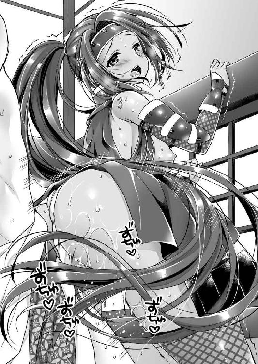
「ひぃ、ちょっ、ちょっと、激しすぎ、奥をそんなにガンガン突かれたら、ああ、声が出ちゃう」
田鶴は必死に喘ぎ声を我慢している。かつての淫乱お姉さまも、いまは人妻。奔放に振る舞えないということだろう。
（うー、残念だなぁ、田鶴さまに思いっきり感じて貰いたかったのに......）
そんなことを考えていたときである。突如として凄まじい爆音が、あたりを覆う。
ゴゴゴゴゴゴゴゴゴゴゴゴ！！！
「なんだ？」
驚いて野外を見ると、雨が降り出していた。梅雨であるし、珍しいことではない。
それに戦のあとは雨が降りやすいものだ。
雨乞いの儀式のとき、大勢の人々が集まってトランス状態で踊りまくる。すると、気流が乱れて降水することがあった。昔の人は理屈はわからなくとも、経験則で知っていたということだろう。
戦場では大勢の人が駆けまわるから、雨乞いの儀式と同じ状態となり、戦後に降水することが多いのだ。
このときは、雹混じりの豪雨だった。氷粒が屋根に当たり凄まじい爆音をあげていた。
「お、これはいい。鵜殿殿の出発も遅れるでしょ。それにいまなら声を出し放題ですよ。さあ、思う存分に発情期の猿も恥じらうように喘いでください」
勢いづいた元康は、腰の速度をさらにあげ、力の限り、田鶴を衝きまわした。
「あーもうわかったわよ、気持ちいい、気持ちいい、気持ちいい、このおちんぽすごい♪ ああ───っ♪」
雹雨のせいでいくら声をあげても大丈夫ということで、窓枠にしがみついた田鶴も自棄を起こしたように思いっきり嬌声を張り上げる。
膣洞がキュッキュッと狂ったように収縮してきた。元康は気合で射精を我慢する。
「あ、いま田鶴さまイったでしょ？ 俺はまだイってないのに。だらしないな。なんていやらしいオマ○コなんだ」
以前、筆下ろししてもらったときには右も左もなにもわからず、ただひたすらに搾り取られたものだ。
（でも、今度は違うぞ。田鶴さまを何回もイかせてやる。そして、ヒーヒー言わせてやるんだ）
そんな野望に突き動かされた青年の容赦ない突貫にさらされて、田鶴は口を大きく開いて、涎を噴く。
「ちょ、ちょっとあたし今イったんだけど」
「俺はまだ満足してません」
「ひぃ、ダ、ダメ......そんな連続で激しくされたら、腰が、腰が抜けちゃう」
強引な連続絶頂にさらされて田鶴の逞しかった膝は、ガクガクと震えている。しゃがみこみたくとも、男の逞しい肉杭に撃ち抜かれた状態ではそれも叶わない。
「まだまだまだ！ もっともっとイってください！ うおお」
雄叫びをあげながら元康は腰の動きをさらに力強く、そして、素早くした。田鶴の子宮口が下がってきており、亀頭部がガッツンガッツンと当たっているのがわかる。
「ひぃぃぃ、イクイクイクイク、またイっちゃう！ イカされちゃう！！！」
すすり泣きながらイキ悶える美しくも淫らな人妻の悶え狂うさまを見ているうちに、元康の体内でどうしようもない妬心と独占欲が湧いてきて、思わず叫んでいた。
「すげぇ気持ちいい。田鶴さまもイキまくりですね。どうです？ 田鶴さまも飯尾殿より俺のおちんちんのほうが気持ちいいでしょ」
「ああ、そんな、そんなこと......言えるはずが、ああ♪」
かつて童貞を摘まみ食いしてしまった男の子の成長した逸物でえぐりまわされた淫乱お姉さまは、涎を垂らしながら悶絶するが、決して認めようとはしなかった。
田鶴のような素敵な女性を妻にできた男への嫉妬で、絶対に旦那よりも感じさせてやる、という変な対抗意識を持った元康は、田鶴の右太腿を抱えあげて、さらに激しく腰を叩き込んだ。
「ひっ、ひっ、ひっ、ひっ......」
田鶴の嬌声は甲高くなり、同時に膣洞も狂ったように締め上げてくる。
（くっ、田鶴さままたイったいみだ。これで五回目かな。次イかせればヌカ六だ）
男は射精せずに女だけを六回連続でイかせる。これはヌカ六といって、これをやったら男として一人前という、変な迷信がある。
元康としては、これを決めることによって、田鶴にもう自分も一人前なのだ、と示したかったのだ。
「もう......でる」
限界を迎えた元康の断末魔の声に、我を忘れていた田鶴は驚いた声を出す。
「な、中で出すのはダメよ。あたしは人妻なんだからね」
この時代、コンドームなどない。若く健康な男女が膣内射精をすれば、高確率で妊娠する。
人妻としてそれだけは譲れぬというかのように、田鶴は必死に訴えた。
つまり外出しをしろと言っているのだ。
本人の意思を無視して、中出しするわけにもいかないだろう。
残念だが、田鶴のむっちりと引き締まった巨大な尻に、白濁液をぶっかければ、十分に牡としての征服欲は満たされるだろう。
そう考えたとき、ふと目に留まったものがあった。
抱えていた田鶴の右太腿を下ろし、同時にズボッと射精寸前の逸物を引っこ抜く。そして、即座に再び押し込む。......別の穴に。
「ちょ、ちょっと、どこに入れているのよ。やめなさい」
思いがけない穴に押し入れられた田鶴は驚愕の声をあげて逃げようとするが、元康は押さえつけて、強引に逸物を押し込む。
「ここでなら中で出しても妊娠しないでしょ」
嘯きながら元康は、我慢に我慢を重ねた欲望を放出した。
「そ、そんなところで、はぁぁぁぁぁぁぁぁぁぁぁぁぁぁぁぁぁぁぁんっ！！！」
ドビュ！ ドビュ！ ドビュュュュュ！！！
直腸に向かって子種を注ぎ込まれた田鶴は、目を剥き、涙を流しながら悶絶した。
そして、逸物の力が抜けると、それを吐き出して、壁にへばりついたまま、ヘナヘナと腰を抜かす。
事が終わったところでタイミングよく雨も止んだ。
「ふー、凄い雨でしたね」
初体験のときにはいいように弄ばれたお姉さまを、今度は逆に身も世もなく翻弄したことに満足する。
「はぁ......はぁ......はぁ......」
荒い息を繰り返す田鶴に向かって元康は小首を傾げる。
「あれ、さすがの田鶴さまも、肛門でやるのは初めてでしたか？」
「あたりまえでしょ。そんなところでやるのは男だけよ」
衆道といって男同士の恋愛話は多い。女より男が貴重な時代である。男と女の恋愛よりも、男同士の恋愛のほうが高尚などという風潮まであったようだ。
「そ、そうだったんだ。田鶴さまの初めてになれて嬉しいです」
「変態......」
怒ってみせる田鶴だが、腰が完全に抜けているようで、床にヘタリ込んでいた。肛門から溢れた白濁液が、床に池を作る。
見かねた元康が、手ぬぐいで尻を拭ってやった。
それからなんとか身支度を整えた田鶴は、立ち上がり別れの挨拶をする。
「それじゃあたしはもう行くわ。お昼、ご馳走様」
あくまでも食事だけした、という建前で押し通そうとする田鶴に、元康は抜け抜けと訴える。
「気持ちよかった。やっぱり俺と田鶴さまの体は相性がいいですよね。またやりましょう」
しばしの別れの接吻をしようと顔を近づけた元康の鼻の頭を、田鶴は右手の中指で、ピンと弾いた。
「だから、あたしは人妻よ。ヒ・ト・ヅ・マ。人妻ってやつは、手を出したらいけないの。覚えておきなさい」
捨てられた子犬のようにしょんぼりする元康を残して、田鶴たち鵜殿軍は、雨上がりの大高城を出ていった。
大高城に残ったのは、松平軍だけである。
（やっぱり田鶴さまっていい女だよなぁ。次もまたこういう機会があればいいなぁ）
余韻に浸る元康の下に、元忠が近づく。
「奥方さまに言いつけますよ」
ゾクと寒気を覚えた元康は、無言のまま元忠の頭を殴る。
「言ったら、ぶん殴る」
「もう殴っているじゃないですか───ッ」
頭を押さえて屈み込んだ元忠は、抗議の声をあげる。
元忠が自分の不利になることは決してしないと、元康は甘えきっているのだ。
若い主従が戯れているところに、鵜殿軍と入れ替わるように見慣れぬ男が、大高城にやってくる。
その者は、水野信元の家臣浅井道忠と名乗った。そして、厳かに告げたのである。
「本日正午、我が水野領桶狭間にて今川義元を討ち取り申した。命が惜しくば、ただちに大高城を明け渡されよ」
今川家に命運を預けていた者たちの人生が、奈落の底へと落ちていく。
「そんな情報を信じられるか！」
今川義元戦死す、という情報に接したとき、松平元康だけではない、全員が全員、鳩が豆鉄砲を食らったような顔になった。
それはありうべからざる情報であったからだ。
今川軍の軍事行動はこの日まで順調だったのである。いや、順調すぎるほどに順調だったのだ。
一気に織田家や水野家を攻め滅ぼすのは難しいかもしれない。
織田軍に籠城されて徹底した持久戦を取られたら、補給線を水野軍に脅かされて退却という事態は十分に覚悟していた。
あるいは局地戦での敗退ということもあり得るだろう。
しかし、総大将が討ち死にという事態は、突飛にすぎる。戦場で総大将が討ち死にすることなど滅多にある事例ではない。
だれもが罠ではないか、と思うのだが、罠にしては飛躍しすぎている。それゆえに本当なのではないか、という疑念も湧く。その不安ゆえに元康は激高したのだ。
「信じられぬのも無理はありません。しかし、事実は事実、もたもたしていると敵地に孤立することになりますよ。我が殿は甥御殿の身をご案じになり、某を派遣されたのでござる。早々に退却されよ」
水野家臣浅井道忠は親切面でそうのたまった。
「だいたい水野の伯父上は、親族とはいえ敵ではないか！」
水野信元。それは得体の知れない男であった。元康の父広忠の宿敵であった松平信定の娘を妻に持つ戦国大名。
今川の後ろ盾を持った広忠が三河に入り、信定が降伏すると、水野忠政は娘を広忠の妻に入れた。そして、竹千代が誕生したのだ。
しかし、信元が家督を継承すると即座に今川を離反して、織田に付く。そのせいで、広忠は妻を離縁して実家に送り返すはめに陥った。元康から母を奪った憎い相手である。
そして、今日まで、織田と今川の代理戦争のように、水野と松平は最前線で角逐を争ってきたのだ。
それでいて、このたびの今川の大攻勢が始まると、水野家の分家である刈谷城の水野信近は、今川への降伏を申し入れ、その実、まったく行動が伴わないという面従腹背をしている。
しかも、降伏を申し入れたのは信元ではなく、弟というのがまたややこしい。信近は本家信元から離反したのか、それとも一心同体なのか。信元も味方に引き込めるのではないか、と甘い夢を見つつも今川軍としては、その押さえとして、岡崎や池鯉鮒に兵を残して進軍しなくてはならなかった。
そして、今度は義元が戦死したから、とっとと大高城を明け渡せ、退路は保証すると言ってきたのだ。
大高城は水野氏の城であったのを、山口教継の謀略で今川方に奪われたという経緯がある。信元としてはなんとしても取り返したいであろう。下手に元康に粘られて、織田信長の介入を招くと、大高城は織田家のものとされかねない。だから、一刻も早く退去させたいのだ。
「殿、義元殿戦死を伝える者が続々とやってきております」
見張りの兵が首脳部に血相を変えて報せに来る。
それはそうだろう。義元を討ち取った情報を、織田方が隠す理由はない。さまざまな人が呼号しながら大宣伝をして回っている。
第一報の水野家からの使者だけでは信用しなかった重臣たちも納得し、「信元殿の好意に従うべきだ」と進言してきた。しかし、元康は却下する。
「巷説信ずべからず」
そう主張した元康は、義元の死をどうしても信じられず、部下を桶狭間の戦場にやって真偽のほどを調査させた。
どうやら義元は兵を分散させすぎたようだ。手元に五百人の兵しかいないところを、織田信長の本隊二千人に強襲された。それも間の悪いことに、突如として降り出した雹混じりの雨のせいで敵の発見が遅れて一方的な展開となってしまったのだ。その後、救援に駆けつけた井伊直盛も戦死したという。
「まさかこんなことが本当にあり得るのか......」
父なき元康にとって父代わりの人物の突然の死に呆然としながらも、さすがに物見を出したときには半ば覚悟していたから、報告を受けると同時に撤退を決意した。
月の出（午後十一時四十一分）を待って松平軍は、浅井道忠に案内させて三河に向かった。
そして、池鯉鮒に差し掛かったときである。ここはすでに刈谷水野の兵三百人に占拠されていた。その指揮を執っていたのは上田近次。緒川水野の筆頭家老だ。
刈谷水野家は、本家の完全な指揮下にあるということが期せずして証明されたわけである。
「やはり刈谷の降伏は謀略であったか」
松平軍は敗残の落ち武者集団である。奇跡の勝利で勢いに乗る敵と戦ったら全滅しかねない。
緊張が走る松平軍の中にあって案内役をしていた浅井道忠が進み出て、大声で呼びかけた。
「こちらの松平元康殿は、我らの殿水野信元さまの甥御であらせられるぞ。わしは殿の命で、帰国の案内をしているところだ。道をあけられよ」
刈谷の兵たちは戦いたいようだが、これを上田近次が説得してくれた。
それどころか一緒になって、元康たち一行を護衛してくれると言い出す。途中で悪さをされてもかなわん。とっとと送り出そうという魂胆もあるだろうが、ありがたい話ではある。
「上田殿、ご迷惑ついでにもう一つお願いしたいことがある。永見貞英殿のご息女おこちゃを当家でお預かりしたい。あれは俺の従妹だ。守ってやりたい。お連れいただけないだろうか？」
知立城主永見貞英は、戦わずして今川に城を明け渡した。そして、いま再び水野領となったのだ。
裏切り者として、永見一族にどのような難事が襲い掛かるかわかったものではない。親族である水野信元はともかく、織田信長の懲罰は苛烈であろう。一族皆殺しの危険すらある。
「わかり申した。ただちに」
元康の意を了解した上田近次は、すぐに巫女装束の娘を連れてきてくれた。
「おこちゃ、残念ながらかような仕儀とあいなった。永見家は今後、どのような憂き目に遭うかわからん。そなたは俺の妹のようなものだ。我が家も必ずしも安泰とは言えぬが、ここにいるよりは安全だろう。俺が責任を持って守るから、一緒に来ぬか」
「わかりました。よろしくお願いいたします」
永見貞英としても、せめて娘を落ち延びさせたいと欲したのだろう。元康の配慮を感謝して送り出してくれた。
おこちゃは侍女のように、元康の身の回りの世話を甲斐甲斐しく焼くことになる。
こうして、池鯉鮒を抜けた元康は、今村まで達したところで、浅井道忠と上田近次に心から感謝の言葉をかけてやり、尾張に帰した。
同時に部隊の編制を解き、雑兵たちをそれぞれの家に帰して休ませる。元康の兵士たちはこの近辺から徴兵された者がほとんどだったのだ。
「さて、我々も駿河の今川館に帰るか。負け戦とはいえ。みな妻子の顔を見られるだけ運がよかったと思うことにしよう」
兵はいなくなり士官だけを従えた元康が、無理やり明るい声を出した。そこに鳥居元忠が報告する。
「殿、ただいま父から連絡がありました。岡崎城が空とのことでございます。どうやら、今川の将兵は逃げ帰ったようです」
「まさか!? 岡崎城には庵原元景殿が千人からの兵で駐留していたはずだぞ」
庵原家というのは、かの太原雪斎を出した家だ。今川家の筆頭家老といっていい格を持っている。
それが敵地である尾張ではなく、今川領である三河にいながら逃亡したというのだ。
義元が討ち死にして、逃げ来る味方を見ていて恐慌を起こしてしまったのだろうが、あまりの醜態というべきだろう。
「このまま殿が駿河に行かれたのでは、三河はことごとく、織田水野に奪われましょうぞ。この際です。殿が岡崎城にあって、勝利に勢いづいた織田水野連合軍を食い止めませんか」
「......うむ」
元康は考え込んだ。三河は祖父が一度はほぼ統一した土地。岡崎城はその本拠地であった。喉から手が出るほどに欲しい、というのが正直な気持ちだ。
しかし、勝手に入ったのでは、越権行為ということになる。
今川家は別に滅んだわけではない。単に隠居の義元が討ち死にしただけだ。現当主の氏真は健在である。謀叛を疑われてはかなわない。
悩んだ元康は、二十日、額田郡にある大樹寺に入った。寺というのは、軍隊を泊めるための旅籠という機能もあったのだ。
ここにあって岡崎城にいる鳥居忠吉と連絡を取り合いながら、入城したものかどうか検討していたときである。この寺の僧侶から、一人の少年を紹介された。
「この者は当寺に勉強に来ている亀という少年なのですが、たいそう利発でしてね。よろしかったら召し使ってはいかがでしょうか？」
「ほう、和尚の推挙ならばたしかであろう。よし、わしの近習としよう」
人手が足りないときであるから、元康は快諾した。このなにげなく登用した亀という幼名の少年が、のちに徳川四天王の一人、「その人品もっとも高し」と言われた榊原康政になる。......ただし、かなりの毒舌家だった。
敗戦の中で思わぬ逸材を得た元康は、二十三日になって覚悟を決めて岡崎城に入った。
「まぁ、捨てられた城なら、拾っても怒られないだろう」
最前線で織田水野と戦う役目を、元康は自発的に買って出たのだ。
「若殿、よくご無事で、この日が来ることを一日千秋の思いで待っておりましたぞ」
今川の代官の下で隠忍自重していた鳥居忠吉は泣いて喜び、そして、自宅の蔵に案内する。
そこには今川の代官の目を盗んで蓄えた武器、金銭、食料が山のようにあった。
「これだけあれば存分に戦えましょうぞ」
元康にとっては本当にありがたい話で、美談として語られるが、冷静になって考えると酷い逸話ではある。
今川家の支配下になって、松平の領民の生活は苦しくなった、と言われているのだが、今川からすれば石高ほどの収入が得られないから、徴収を過酷にせざるを得なかったのだ。しかしてその実態は、このように鳥居忠吉が横領していたのである。
※
主君を討たれた今川軍は、元康をはじめとしてみな雪崩を打って潰走していたのだが、一人気を吐いた人物がいた。
鳴海城の岡部元信である。彼は信長と交渉して、主君義元の首級をもらい受けてから開城。帰路につく。そして、六月一日、池鯉鮒に差し掛かった。そこは刈谷の兵で占拠されている。もちろん、信長に帰路の安全は保証されているのだから、戦にはならない。
「ちっ、やはり刈谷の降伏は偽りであったか」
憎々しい気分になった元信は、ここで閃く。
池鯉鮒に刈谷の兵がいるということは、刈谷城自体は手薄に違いない。それと見て取った元信は、夜、軽兵七十五人とともに間道を通って、刈谷城を急襲。すっかり油断していた城主水野信近を討ち取ってしまった。
ことの急を聞いた信近の老臣牛田政興が駆けつけて、岡部軍の幾人かを討ち、信近の首級と刈谷城を取り戻す。
元信としても、刈谷城を占領維持できるとは考えているはずもなく、ただちに撤退。今川領に逃げ帰った。
敗戦の中、今川軍は一矢報いたのである。この一件が今川軍の矜持を助けたことはたしかだ。今川氏真は元信の行いを激賞している。
ただ、氏真はこれで満足してしまったらしい。
「氏真殿に連絡。ただちに弔い合戦をいたしましょう。このたびの戦は、義元殿が討たれただけのこと。この松平をはじめ、鵜殿殿も、岡部殿も、朝比奈殿も、庵原殿もご健在。いまやれば勝てまする」
そう元康は、復讐戦を指嗾したのだが、氏真は動かなかったのだ。
※
今川陣営と織田陣営の国境線は、尾張国内の三城こそなくなったが、桶狭間の戦役が始まる以前とほぼ同じとなった。
池鯉鮒は当然のように水野氏の支配下となったが、元康が予想した通り、戦わずして城を明け渡した永見貞英に対する信長の怒りは大きかった。勇敢に戦って全滅した今崎城との対比もあるだろう。
「知立城は信長殿に焼かれたのか」
「はい。しかし、わたしの両親は健在です。水野の伯父上がうまく取り計らってくれたそうで......ありがたいことです」
おこちゃは涙を流して喜んだ。これを機に永見貞英は武士をやめ、以後、永見氏は池鯉鮒神社の神主となる。
また、坂部城の久松俊勝も今川家との内通を疑われたが、信元は水野家中のことである、と突っぱねた。
永見貞英と久松俊勝の二人は、信元からすると義弟であるから、庇ったのは当然であろう。そして、庇われた二人は、このときの恩義を終生忘れないことになる。この二人の信元個人に対する強い忠誠心が、のちのち甥である元康の生涯にも甚大な影響を与えてくることになるのだ。
西三河にいた今川軍は、恐慌を起こしてみな逃げてしまい、そこに元康が入ったわけだが、取りこぼしがあった。
空き城になっていた三河重原城を水野信元に奪われてしまったのだ。
「ちきしょう。水野の伯父上め。火事場泥棒とはセコイことしやがって」
自分が捨て城を拾うことはよくても、他人が捨て城を拾うことには寛大でいられない元康であった。
六月十八日、元康は重原城を攻めるが、撃退される。
元康はさらに積極的に水野領に攻め込み、横根・石瀬で戦い、刈谷城近辺にまで攻め込んだがいずれも撃退された。
これは岡崎城を勝手に取ってしまいましたが、あくまでも今川さまのために、織田や水野と戦っているんですよ、という氏真へのアピールでもある。
なし崩し的に岡崎の実行支配を認めさせてしまおうという腹だ。
その目論見はだいたい成功したようで、今川氏真は元康の岡崎領有は認めた。しかし、三河全土をくれてやるほど気前もよくなく、三河の責任者としては上ノ郷城に、鵜殿長照を置いた。
「それにしても水野の伯父上は強いな。ひるがえって、味方のなんと不甲斐ないことか」
水野家には織田家の支援がある。松平家にも今川家の支援がある、と言いたいところなのだが、ほとんどしてもらっていない。強引に買って出た役目であるし、上司の心象がよくないのは仕方ないと言えば仕方ないのだが......。
忸怩たる思いを噛みしめている元康の下に、思いがけない使者がやってくる。使者の名は久松俊勝。元康の母於大の方の再婚相手だ。
「今川を捨てて、織田に付かんか？」
つまり寝返り工作である。元康は小首を傾げた。
「しかし、我らが織田方に付くと、水野の伯父上は西を織田、東を我らに挟まれてどこにも領土を広げられないことになりますぞ。よろしいのか？」
俊勝は苦笑して頭を振った。
「義兄殿は、若いころと違っていまはもう野心はない。今川との戦はおぬしに任せて、後方で安穏と暮らしたいと考えておるのよ」
信元の後継者たる男子は死に絶えてしまい、残ったのは娘ばかりという状態で、戦うことに虚しさを感じだしている、という話である。
「おぬしのような息子を持ちたかったと申しておるくらいだ」
「なるほど、水野の伯父上は大高城で恩を売ってきたときから、これを考えていたわけだな......」
元康は考え込んだが、松平の家臣たちは激高した。
「織田水野は仇敵ぞ。家臣の中で家族を殺された者がいくらいると思う」
「それに織田より今川のほうがずっと大大名でござる」
それらの意見が家中の大勢であったが、酒井忠次が待ったをかけた。
「それは感情論でござる」
後世、徳川四天王筆頭に挙げられる人物だ。
酒井家というのは、いわば松平家の分家のようなもので、他の家臣とは格が違う。そのうえ奥さんは、元康の祖父清康の娘だ。
忠次本人は、家康より十五歳年長。兄のようだと言うには年上すぎ、父親代わりというのには若すぎる、という微妙な年の離れ方をしている。
今川館にいたときの元康の近臣たちのまとめ役をしていた。
宴会芸では海老すくいを披露してみなを笑わせることを得意とし、愛用の鎧は一見、超古風な作りでありながら、その実、極限まで超軽量化を図ったハイテク性能を誇る。
つまり鳥居元忠などより、はるかに懐は広く、頭も切れる、頼りになる親戚のおっちゃんだ。
「見かけは同じ大名でも、今川氏真は猫、織田信長は虎。どらちと結ぶが賢明かは幼児でもわかることでござる」
忠次の工作により、松平家中の雰囲気は少しずつ今川から離れ、織田方に近づいていく。
元康としては、今川は恩人である。本来、裏切りたくないのだ。しかし、松平単独でいかに戦おうと限界がある。やがて、強い敵より、無能な味方が憎い、という心理が広がっていった。
松平と水野の争いは互角に見えて、じわじわと押し込まれていく。ついには三河幡豆郡の一部まで水野に取られてしまった。
「このままでは、我らは本当に今川の使い捨ての盾とされますぞ」
忠次が決断を迫る。
松平の敗北は時間の問題だった。しかし、大敗して降伏という形と、まだ余力がある状態で和睦という形では、その後の対応がまったく違ってくる。
「しかし、瀬名と子供たちが......」
元康の妻と二人の子供は、いまだ駿河の今川館にいたのだ。
勢いが織田方にあることはいまさら確認するまでもない。寝返ったほうが得だ、ということは元康にもわかる。
しかし、もし寝返ったら、瀬名と子供たちは殺されるだろう。
「奥方殿は幸い、義元殿の御養女。実父である関口親永さまは健在。まさか命まで取られることはありますまい。いまが我らの生き残る最後の機会でござる」
家中の意見も、もはや今川頼りにならずと完全に離れていた。それと察した元康は決断する。
「よし、織田と同盟しよう」
永禄四年（１５６１）、春。水野信元の仲介により、松平元康と織田信長は同盟する。世に言う清州同盟だ。
同盟と言っているが、事実上、織田家の傘下に入って、水野氏と同じ立場になったといえるだろう。
同時に元康は、瀬名と離婚を宣言する。これでとりあえず殺されないのではないか、と考えたのだ。
しかし、甘かった。
※
「お従兄さま、いかがなされたのですか？」
大広間にて重臣たちとの会議を終えた元康が、私室である奥の院に帰ったとき、その顔面は蒼白であった。
目は血走り、腕から震え、足下がおぼつかない。
その幽鬼の如き表情でふらふらと歩いてくる元康の姿に、侍女として身の回りの世話をしていたおこちゃは驚く。
「おこちゃ......」
目の焦点が合わないようであった元康だが、従妹の姿を認めると、震える手で必死に縋りついてきた。
「あー......おこちゃ......、おこちゃ......、おこちゃ......」
突如、自分の胸に顔を埋めて泣きだした従兄の姿に困惑するも、おこちゃはなんとかその背中を撫でてやる。
「いったいなにがあったのですか？」
「甘かった......。わしの読みが甘かった......」
松平と織田が同盟したことを知った氏真は、当然のように激怒した。
しかし、元康の読み通り、瀬名とその子供たちを殺すことはできない。
その代わりに、今川館に詰めていた松平の家臣十三人を城下の龍拈寺口で、尻の穴から槍を入れて串刺しにしたのだ。
この殺し方では人はなかなか死なない。いわば公開の拷問処刑である。
「俺はなんてことを......。妻子かわいさのあまり、家臣たちのことを忘れていた......」
「っ!?」
さすがのおこちゃも絶句して、かける言葉を失う。ややあって慰める言葉を絞り出す。
「で、でも、奥方さまとお子様たちは無事だったのでしょ。不幸中の幸いでした」
「なにが不幸中の幸いだっ！」
おこちゃの慰めの言葉は、元康の負の感情を刺激した。
「俺は、俺は、自分の家族かわいさに、家臣を見殺しにして喜ぶ男に見えるか！ そんな悪人に見えるか！！！ そんな理由で戦っているように見えるか！ 俺は守りたかった！ みんな守りたいから、こんなに心を砕いているんじゃないか！」
激高した元康は、立ち上がるとおこちゃの帯に手をかけて、解きにかかった。
「な、なにをなさるのですか!?」
反射的におこちゃは逃げようとしたが、解いた帯の端を握った元康は、力任せに一気に引いた。
「あれ～～～」
小柄な少女はコマのように回ってしまった。そして、帯がほどけたところで、床にしどけなく崩れる。
着物の前がはだけたので、おこちゃは慌てて両手で隠す。そして、見上げると、いつもは優しい従兄の顔は正気ではない。恐怖を感じたおこちゃは後ろ手で這い逃げる。着物の裾から出ている白い足がプルプルと震えている。
「なにを逃げるっ」
瞳に狂気を点らせた元康は手にした帯を床に叩きつけると、ゆっくりと間合いを詰める。
「お、お従兄さま、お従兄さま、落ち着いて、落ち着いてください！」
腰が抜けてしまったおこちゃの必死の訴えを無視して、元康は逞しい両腕でその着物の襟を左右に開く。
プルンと若々しい乳房が二つ、あらわとなった。
童顔で小柄な体型に比してずいぶんと大きな肉まんだ。田鶴や瀬名に比べると庶民に近い女性だけに、全体的に健康美に溢れている。頂を飾る乳輪は褐色で、乳頭はへこんでいた。陥没乳首というやつだろう。
身近に置く大切なものを汚すことに露悪的な喜びを覚えた元康は、両腕を伸ばして乳肉をそれぞれの掌に掴んだ。
ふわふわしており、蒸したての肉まんのように温かい。食欲をそそられる。
「くっ、い、痛い......触るなら、優しく......ああ」
女の身をまったく考えない愛撫に、おこちゃの顔が引きつる。幾度も強く揉まれて、肌色の乳房に赤い指の跡がつく。
「ああ、お従兄さま、正気に戻って......」
おこちゃの涙の訴えは無視して、元康は口を近づけると、肉まんの頂を飾る褐色の乳首を舐めた。
ペロペロペロ
「あ、やめてください......」
おこちゃは弱々しく訴えるが、男の手から逃げることができない。
元康は夢中になって左右の乳首を舐めまわし、そして、吸った。それに応えて、ピコンと乳頭が飛び出してくる。
嗜虐的な笑みを浮かべた元康は、その左右の乳首を、それぞれの親指と人差し指で摘み、シコシコと扱きたてた。
「ああ、そんな引っ張らないで......」
いかに清純派な乙女といえども、勃起した乳首を扱きまわされるのはたまらないのだろう。顔が歪み、大きな口を開けて涎を噴いている。
「くっくっくっ、大人しい顔して、おっぱいをこうされると気持ちいいんだろ？」
「うっ......はい......」
嘲笑されておこちゃは悔しそうに顔を顰めたが、逆らってはならぬと思ったのか素直に頷く。
それをいいことに元康は執拗に乳首を扱き、吸い上げた。
「あ、ああ、あああぁぁぁぁ」
ついにおこちゃはのけぞり、ピクピクと健康的な体を痙攣させてしまった。
おこちゃが絶頂したところを見て、元康は手を離す。
「おっぱいだけでイってしまったのか。おこちゃは巫女さんなんてしていたくせに、いやらしい体をしているな」
「......」
元康の嘲笑に、涙目のおこちゃは悔しそうに顔を背ける。
「ふん」
鼻で笑った元康は、今度はおこちゃの左右の足首を掴んで持ち上げる。
着物の裾が捲れることを自覚したおこちゃは慌てて両手で股間を押さえた。
普通の娘である彼女は褌などしていないから、着物の裾をめくられると、女性器が露出してしまうのだ。
「手をどかせ！」
狂気の目をぎらつかせた元康にドスの利いた声で命じられたおこちゃは、ビクッと震えたあと、しぶしぶ両手を股間から離した。
黒い陰毛がふわっと逆立ちつつも濡れていた。濃厚な牝の香りが、元康の鼻先に立ち昇ってくる。
そこに顔を埋めようとしたところで、元康は思い直した。
「どうせだ。自分でホトを開いてみせろ」
「そ、それは......はい」
両足首を狂暴な男に捉えられて蟹股開きにされてしまったおこちゃは、一瞬、反抗的な顔をしたが、諦めて自ら震える両手の人差し指を肉裂の左右に添えて、くぱぁっと開く。
鮮紅色の牝肉があらわとなる。トロリと溢れ出た蜜が肛門にまで落ちていった。
その光景を元康は嘲笑する。
「ドロドロじゃないか。巫女さんがこんなにいやらしいオマ○コしていていいのか？」
巫女が神聖でなければいけないというのは、男の勝手な思い入れというものだろう。
男にさんざんに乳房を揉まれてしまった直後なのだから、健康な女体が濡れているのは当然というものだ。それとわかっていながら無体な誹謗を受けて少女は涙する。
「うふふ、そのまま自涜してみな。そんなに濡れるってことは自分でしたことあるんだろ」
「......はい」
すっかり観念したといった顔のおこちゃは、元康に両足を掴まれたまま、左手で陰核を弄り、右手で乳房を弄る。
「あ、ああ、ああ......」
屈辱的な強制自慰に涙しながらも、おこちゃの口からは官能的な声が漏れてしまう。
「なんだおこちゃは、そうやって手淫をするのが好きだったのか」
「はい。おこちゃはいやらしい女です、あああ」
従兄の眼前でする自慰に震えながらも、それゆえに快感もいや増しているのだろうか。おこちゃの吐息は荒く、溢れる蜜も豊富だった。
そんな光景を見ているうちに、元康の我慢が利かなくなる。
「よくやった。ご褒美をくれてやるよ」
おこちゃの両足から手を離した元康は袴を脱ぎ、褌を解いた。
ブルン！
臍に届かんばかりに反り返った極太の逸物を見上げて、おこちゃは怯えた。
「い、いけません。それだけはいけません。奥方さまに悪いです」
両足の自由を回復したおこちゃは、四つん這いになって逃げようとする。
その小さな尻を左右から元康の手は捉えた。
「俺はもう独身だっ！」
嘯くと同時に、いきり立つ逸物を濡れそぼつ女唇に添えて、ぐいっと押し込んだ。
「あ、お従兄さま、ダメぇぇぇぇぇ───っ！！！」
断末魔のそれにも似たおこちゃの悲鳴を聞きながら、その清らかなる巫女の蜜壺に、猛々しい逸物は押し入った。
ブツン！
乙女のたった一枚しかない神聖な膜が打ち破られた感覚が、たしかに亀頭部から伝わってきた。
そこからさらに狭い隧道を押し広げて、強引に押し進む。
グリグリグリ───ッ
「ひっい」
亀頭部の先端がコリコリとした軟骨のような環状の筋に当たった。
どうやら子宮口にまで届いたようである。
おこちゃは両肘を床につき、首をあげていた。まるで股間から入った肉棒が、口から出てくるかのような風情だ。白い内腿をツーと赤い滴が落ちていく。
キューッ
膣穴が強く締まる。初めての異物に驚き、締め上げて追い出そうとしているかのようだ。
それに負けてはならずと反骨心を刺激された元康は、尻を掴んだまま強引に腰を動かす。
「くっ、大人しい顔とは不似合いな、なかなか凶悪なオマ○コをしているな」
「......」
元康の軽口に、おこちゃは応える余裕はない。元康は眼下の尻朶を軽く叩いた。
「くっくっくっ、なんだかんだ言っていたわりにおまえも感じているみたいじゃないか。尻穴までヒクヒクいっているぞ」
「ああ、見ないでください」
おこちゃは慌てて右手を背後にやって隠そうとしたが、それを元康は払う。
「そういえば本で読んだことがある。いとこ同士は鴨の味といって体の相性が抜群なんだと。まんざら嘘ではないみたいだな」
嘯きながら、元康は荒々しく腰を使いだした。
パンッ！ パンッ！ パンッ！ パンッ！
「ひぃ、ひぃ、ひぃ、ひぃ」
獣のように四つ足つかれされた少女の口元からは、切れ切れの悲鳴とともに涎が滴る。
始めはきついだけだった膣壁が、やわやわと蠕動してくる。
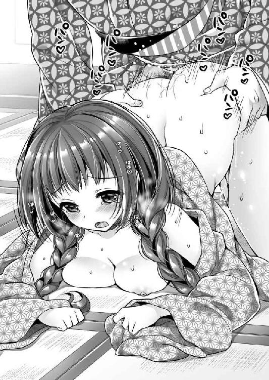
「すげぇ、吸い付いてくるぞ。おこちゃのオマ○コ。もう、出すぞ。うおおおぉぉぉぉぉ！！！」
雄叫びをあげた元康は、乙女の体のことなど配慮せず、薄汚い男の欲望のまま腰を叩き込んだ。
ドビュビュビュビュビュ！！！
「ああああ」
最深部を射抜かれた愛らしい牝鹿は、断末魔の悲鳴とともに崩れ落ちた。
「ふぅ」
射精したことで頭の中が真っ白になるような興奮が冷めた元康は、小さく萎んだ逸物を引いた。
「......」
おこちゃは上体を潰して、白い尻だけ高く翳していた。
太い肉栓を抜かれた女壺は、一度は閉じても直後に内圧を受けて再び開き、白濁液を滝のように溢れさせた。
ドロ、ドロドロドロ......
白い太腿を白濁液が汚し、ところどころに赤い色がついた。
落花狼藉とはまさにこのことだ。
その光景を見て我に返った元康は、激しい自己嫌悪感を覚えてその場で胡坐をかき、頭髪を掻きむしる。
「......すまん」
弱い立場の少女。それも自分が庇護している、いまやたった一人の家族と言っていい存在を手籠めにしてしまったのだ。
罪悪感から胸が張り裂けそうだった。
おこちゃはよろよろと身を起こすと、元康の体に左側からしなだれかかり、頭を抱きしめた。
「かまいませんよ。わたしの体などがお従兄さまのお慰めになるのでしたら......いくらでもご使用ください」
思いもかけず優しい言葉に驚いた元康は、おこちゃの胸の中で泣いた。
元康の側室になったおこちゃは、お万の方と呼ばれるようになる。
「おこちゃはいいオマ○コをしているからな。お万の方というのでどうだ？」
さまざまな美点を持っていた徳川家康であったが、ただ一つ、ネーミングセンスだけは致命的になかったと言われている。
※
「若君を救う方法。それは人質交換しかないでしょう」
元康の憔悴を思いやった家臣たちが、瀬名と二人の子供の救出作戦を提案してきた。
たしかにその昔、織田方に囚われていた元康を救出するために、織田信秀の庶長子織田信広を安祥城に生け捕りにして、人質交換をしたという先例がある。応じてくれる可能性は大いにあった。
「今川が大事に思う者はだれか？」
「上ノ郷城の鵜殿長照殿。母親が今川氏親と寿桂尼の娘御です。これなら交渉に乗ってくるでしょう」
もっともな意見だが、元康は複雑な表情になった。
「鵜殿殿を攻めるのか......」
桶狭間の戦役のおり、元康は大高城に籠城する鵜殿長照を救出するために戦ったのだ。
今度はそれを攻めて虜囚にしよういうのだから、運命の皮肉を感じずにはいられない。
織田と同盟を結んだ元康だが、今川方の城を攻撃したことはなかった。そのため清州同盟はあくまでも休戦協定です、という言い訳をしている。
しかし、鵜殿を攻めるとなったら、今川と敵対すると満天下に宣言することだ。
今度は瀬名と子供たちを殺される危険性が高い。いや、瀬名と子供たちの頭上に刃を翳しながら、殺されたくなかったら降伏しろ、と言われたらどうしたらいいのか？
しかし、家臣たちはそんな元康の家庭のことなどどうでもいいようだ。
特に酒井忠次は、完全に瀬名のことを見限ってしまっている。殿は若いのだから、他の女性との間に、新たな子供を作ればいい、と言わんばかりだ。
しかし、他に有効な手段は思いつかない。逡巡しているうちに、さらに元康を追い詰める情報が流れてくる。
永禄五年（１５６２）になって、瀬名の父親関口親永が、氏真からその去就を疑われ、駿府尾形町の屋敷にて切腹を命じられて果てた。さらにその妻で瀬名の母親もあとを追ったというのだ。
息を呑んだ元康は震えてひび割れた声で決断した。
「もはやこれしかない。上ノ郷城を攻める。鵜殿長照殿を生け捕りにせよ。先遣隊は松平清善に命じる。時間との勝負だ。いそげっ！！！」
松平清善の娘は、今川に処刑された十三人のうちの一人だ。今川家に対する恨みは深い。それだけに奮闘したのだが、さすがに大高城の籠城戦を耐えきった鵜殿の籠城技術は高い。
焦った元康も駆けつけて、上ノ郷城攻めに加わる。
「いけっ！ なんとしても上ノ郷城を攻略し、鵜殿長照殿を生け捕りにせよ」
元康の必死の叱咤激励を受けても、上ノ郷城は落ちなかった。
その窮地に、家康の継母である真喜姫の実家の生き残り戸田重貞が提案してくる。
「甲賀忍者を雇ってはいかがでしょう」
元康は即座に採用した。なりふり構っていられる状況ではないのだ。
甲賀より派遣された伴太郎左衛門、鵜飼孫六ら二百人の忍者軍団は城内に潜入攪乱する。これが成功して、上ノ郷城は二月四日に陥落した。ただし、作戦は失敗である。長照と父の長持は戦死してしまったのだ。
「ど、どうするんだ......」
顔面蒼白で指の爪を噛む元康を、重臣たちが慰める。
「完全な失敗というわけではありません。鵜殿長照の御子息である鵜殿氏長、鵜殿氏次の両名を捕虜としてございます。これを人質交換の贄とすればよろしかろう」
「簡単に言ってくれる」
今川家の実質上な指導者と言われる寿桂尼の娘婿と孫を殺してしまったのだ。今頃、今川家中が沸騰していることは疑いない。そんなところにのこのこと人質交換を申し出る使者を出したら、そのまま処刑場に直行で串刺し刑という可能性が大だ。
「交渉の使者に立ってくれる者はいるのか？」
元康の質問に、重臣たちはみな顔を伏せる。そんな中で、敢然と進み出た者がいた。
「某が参りましょう」
石川数正であった。
松平家臣としての石川家は酒井家に次ぐ名門だが、数正は傍流だった。石川本家の当主は、石川家成だ。
数正は、元康が今川館で生活していたときの近習の一人で、文武両道で知られていた。石瀬の戦いでは、水野家の勇士高木清秀と七度槍を合わせたことで知られる。高木清秀という人物は、個人武勇伝では戦国最強候補の一角だ。それと直接槍を交えて生き残ったというだけですごいのである。
「若君が処刑されるとき、供の者もいないとは人目にも寂しく映りましょう......」
つまり、竹千代が処刑されることがあらば、一緒に死んでやる、という覚悟表明だ。
数正、一世一代の賭けである。
こうして、今川館に出向き交渉した数正は、賭けに勝った。瀬名とその子供二人を連れて凱旋したのである。
大きな八字髭をピンと反らして、若君を鞍の前に乗せ、威風堂々と念じ原をまかり通って岡崎城に帰ってきた数正の姿に、岡崎の人々は熱狂した。
「数正、よくやった───っ！ よくやってくれた───っ！」
元康もまた感動し、最大限の褒賞をもって報いることにした。
松平軍の編制は、東を酒井忠次、西を石川家成が統括していたのだが、家成に代えて、数正にその任を与えたのである。
これにより、石川家の分家の当主に過ぎなかった数正が、石川家の本家をしのぐ存在に成り上がったのだ。
※
「瀬名っ！」
「あなた！」
元康と瀬名は、人目を憚らず抱き合って再会を喜んだ。
桶狭間の戦いに出陣してから、丸二年である。元康は二十歳となっていた。
まさに九死に一生である。いかに気の強い瀬名もこのときばかりは涙を抑えることはできない。
見守る家臣領民もみな涙した。感動の家族の再会が一段落したところで、瀬名は不意に、元康に従っているおこちゃに目を止める。
「その女は......？」
「あ、これは俺の従妹でな、話せば長いのだが」
元康のくどくどとした言い訳を他所に、女の勘というやつが働いたらしい。瀬名は怖い顔できっと睨む。
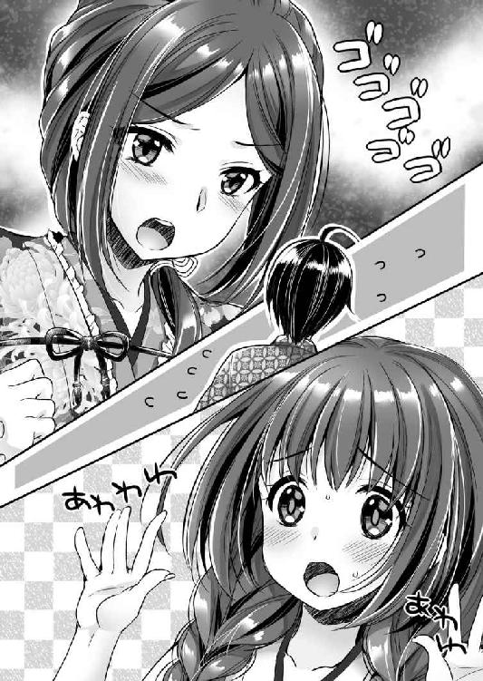
「妻と子供たちに白刃の上での生活を強いながら、自分は側室を作っていたのですか！」
「いや、その......」
おこちゃは慌てて、従兄を助ける。
「わたしは侍女です。単なる侍女ですから」
「いや、そんなわけにもいくまい」
「やっぱり！！！」
正室と側室の間で右往左往している元康を見て、元忠は能天気に笑う。
「あはは、生きていればこその苦労でござるなぁ～、殿♪」
「こいつ、他人事だと思いやがって......」
元康は怒ったが、たしかにその通りであり、笑みを止めることはできない。
岡崎城は笑いに包まれていた。
※
上ノ郷城の攻略によって、三河から今川勢は一掃された。三河には織田水野の勢力もあるから、元康のものとまでは言えないが第一勢力になったことは間違いない。妻子も取り戻し、元康はこの世の春を味わっていた。しかし、同時に一人の女性を宿敵にしてしまったのである。
「おのれ竹千代！！！ よくもあたしの父と兄を殺してくれたな。あまつさえあたしの甥御たちを使って、今川の家門に泥を塗ってくれた。許さん！！！ 決して許さんぞ！！！」
怒髪天を衝き、血の涙を流して復讐を誓った女武者。その名を田鶴という。
「よい鷹でござるな」
三河の新しい領地の視察もかねて元康が鷹狩をしていると、見知らぬ貴公子が鷹狩装束で近づいてきた。
鳥居元忠たち家臣が武器を構えるのを元康はとどめる。
「失礼だが貴殿は？」
「ご無礼をお許しください。某は井伊家当主井伊直親と申すものでござる」
「ほぉ、直盛殿の後継でござったか」
桶狭間の戦いで、元康とともに先陣を賜った井伊直盛は、今川義元が戦死したあとに現場に駆けつけて戦死した。養嗣子だった井伊直親は、領国の留守を任されていたので危難に遭わず、無事に家督を相続したのだ。
元康は頭を振った。そして、愛鷹を大空に向かって放つ。
「いや、その名は聞かなかったことにいたそう。鷹が好きな者同士、しばし楽しもうぞ」
「そうでござるな」
井伊領のある遠江はいまだに今川の支配下だ。瀬名と子供たちを人質交換で返してもらったことで、松平と今川の間には細やかな友好関係ができていた。
元康としては、三河支配を確立するだけで手一杯であり、いま今川とことを構える気はない。
しかし、直親がここに現れた理由は明らかだ。
鷹が爪で捕らえてきたウサギを見聞しているところを耳打ちされる。
「松平殿が遠州に攻め入りますおりには、井伊はいち早く駆けつけまするぞ」
「......」
元康は聞こえないふりをした。ありがたい申し出だが、言質を与える気はない。
先代の井伊直盛は今川の薫陶を受けて育った人物であったが、直親は実父が今川に謀叛を企んで粛清され、本人も長く逃亡生活をしていただけに、今川に対する忠誠心をまったく持ち合わせていなかったのだ。
直親の行動は、先走りがすぎると思わないでもないが、味方してくれる、というものを邪険にすることもない。
しかし、結果として直親は脇が甘すぎた。井伊家の家老小野政次が直親の行動を今川家に密告。慌てて弁明に出向いた道中、永禄五年（１５６２）十二月十四日、掛川城にて朝比奈泰朝に殺されてしまったのだ。享年二十七歳だった。
「それは気の毒なことをしたな」
元康としてはそう言うしかない。
井伊家の跡を継いだのは、井伊直平だった。すなわち、今川の遠州侵攻『永正の乱』に乗じて井伊本家を乗っ取った、現在の井伊家の始祖だ。
年齢七十五歳。井伊家にはもはや、この老人しか成人男子がいなかったのである。
自分が今川を選んだのだ。いまさら若き日の選択を否定できない。直平は必死に今川に忠義を尽くした。
このころ遠江は一気に不安定化している。遠江の豪族たちにしてみれば、今川家は侵略軍だ。その威勢が落ちれば離れようとする。また、瀬名の父関口親永の粛清事件も影響しているようだ。関口氏というのは、堀越氏、瀬名氏と同族であり、遠江で有力な豪族だったのである。堀越城の堀越氏延は、今川の手を離れて自立を目論む。
永禄六年（１５６３）には犬居城の天野景泰・元景親子も背いた。この討伐を氏真は井伊直平に命じる。
毒をもって毒を制す、ということだろう。
しかし、その行軍途中、井伊直平は引馬城に寄ったところで、田鶴に毒茶を飲まされて殺害されてしまった。
一度松平に通じた井伊家を信じるに足らぬ、と田鶴は判断したのだ。永禄六年（１５６３）九月十八日のことである。
こうして、井伊家には成人男子がいなくなってしまった。残ったのは直親の遺児で三歳の虎松だけである。井伊家の遺臣たちはこの乳児を文字通り命がけで守ることになった。
この永禄六年（１５６３）から元康は、名前から「元」の字を外し、松平家康と改名する。つまり、今川と完全に手を切ったと宣言したわけだ。
次に松平に内通したのが、遠江国引馬城主飯尾連龍。すなわち、田鶴の夫である。
井伊直親のときもそうだが、家康から工作したわけではなく、今川に見切りをつけた飯尾連龍のほうから売り込んできたのだ。
「よかった。田鶴さまが味方してくださるとは望外の喜びだ」
田鶴の実家のこともあり、後ろめたさを感じていた元康は安堵した。
親族衆である飯尾連龍の謀叛を知った今川氏真は、井伊家に討伐を命じる。
主家に忠誠を示すというだけではなく、大殿を毒殺した憎い相手ということで、井伊軍は復讐の念に燃えて攻めた。井伊氏側では新野親矩、三浦正俊、中野直由といった重臣たちが討ち死に。飯尾氏の側でも重臣湯屋、森川、内田らが戦死したというから、大激戦だったことがわかる。
苦戦した井伊軍から援軍要請を受けた氏真は、切り札を切った。すなわち、今川最強の将朝比奈泰朝を投入したのだ。
「飯尾殿から矢のような援軍の催促でござる」
「そう言われてもなぁ」
元忠から報告を受けて、家康は苦虫を噛み潰した。
家康からすると飯尾連龍から勝手に味方を申し込まれ、勝手にばれて、勝手に窮地に陥っている。こちらの都合や戦略も考えてくれ、と言いたい気分であった。そうこうしているうちに追い詰められた飯尾連龍は、家康に人質を送ってきた。
「田鶴殿の妹御が来ただと......!?」
押し付けられた人質の身元を聞いて家康は驚いた。まさか追い返すわけにもいかないだろう。
彼女が決死行で岡崎城までやってきたことは疑いない。やむを得ず謁見した家康に、まだ十代半ばと思える少女は必死の形相で縋った。
「お願いします。引馬をお救いください。義兄を、お姉さまを助けてください」
「わしはおぬしの父と兄の仇であるのだぞ」
「死んだ者よりも、生きている者が大事です。対価がお望みならば、わたくしの新鉢を捧げます。この体、好きにしてくださってかまいせん」
そう宣言すると同時に、彼女は家康の前で着物を脱いでみせた。
「っ!?」
驚く家康の前で、脱いだ着物を天井に放った彼女は健康的な四肢を広げてみせる。まだ膨らみ始めたばかりの乳房。満足に生えそろっていない陰毛。武芸をやる者特有の怒り肩。すっきりした腹部、引き締まった臀部、しなやかに長い手足。いずれも眩しいぐらいの生命力に輝いている。
「......さすが田鶴殿の妹御だな。たいした胆力よ」
呆れた家康は自らの羽織を脱ぐと、裸体の少女の肩にかけてやる。
「それではっ!?」
「それでも出せぬのよ。すまんな」
家康は首を横に振るった。家康としても救援の兵を出したかったのだが、出すに出せない事情があったのだ。
このころの家康は三河統治に失敗して、一向衆を敵に回してしまっていた。家臣団の多くが一向宗に味方し、真喜姫の一人娘、すわなち家康のたった一人の異母妹市場姫の婿八ツ面城主・荒川義広まで一揆方に加担。家康もその身に鉄砲を二発受けるという苦境に陥っていたのである。世にいう『三河一向一揆』だ。
ちなみに真喜姫は、その幸薄い生涯をかけて家康を陰から支え続け、元亀二年（１５７１）三月二十九日に亡くなった。家康は彼女への感謝を忘れず、四散していた戸田一族をかき集め、大名家を三つも作っている。
この大反乱のために、松平軍は遠州出兵どころの話ではなかったのだ。
しかし、のちの悲劇を思えば、家康はこのとき救援の兵を出せなかったことを生涯後悔したことだろう。
田鶴の妹は岡崎城に留め置かれた。帰る場所がないのだから仕方がない。哀れに思った家康は、なにくれとなく世話を焼いているうちに、魔が差して彼女の新鉢を割ってしまった。
「ひぃ......おっきい───！！！」
破瓜の痛みに涙し背筋を反らす少女を見下ろしながら、家康は田鶴のことを思い出さずにはいられない。
（まるで田鶴さまの新鉢を割っているかのようだ。田鶴さまの若いときってこんな感じだったんだろうなぁ）
筆下ろししてもらったお姉さんにそっくりな妹の初めての男になる、というのは不思議な感慨を覚えた。
彼女の名前も年齢も伝わっていないが、のちに家康の公式な側室第一号として西郡局と呼ばれることになる。
結局、家康からの援軍をもらえなかった飯尾連龍は今川と和睦した。妻が今川の姫である田鶴ということもあって、城主の座はそのままだった。しかし、永禄八年（１５６５）十二月、連龍はわずかな供を連れて駿府今川館に入ったところを殺害された。
引馬城主の座は、妻の田鶴が引き継いだ。女城主の誕生である。
つまり、田鶴は今川に忠誠を誓うために、そして憎き松平と戦うために、松平と通じる夫を謀殺したのだ。
「松平頼むに足らず、ということはこれにてみなも承知したことだろう。これよりは今川のために命を捨てようぞ」
父、兄を殺され、妹を辱められた田鶴は、気炎をあげていた。
※
永禄六年（１５６３）九月から始まった三河一向一揆は、翌永禄七年（１５６４）二月までの約半年ほどで終結した。
その勝因は伯父の水野信元が兵を率いて駆けつけてくれたことが大きい。上田近次、高木清秀が目覚ましい武勲をあげたうえに、信元は一向宗との和睦を取り結び、さらに家臣が足りないだろうと、末弟の水野忠重を預けてくれたのだ。家康と松平家臣団は、信元に返しきれぬ恩を受けてしまった、と感じた。
ともかくも、三河一向一揆の傷は大きく、家康は内政に専念しなくてはならなくなる。
東海道の戦局は膠着していた。
変化は、甲斐武田家より生じる。
今川、武田、北条の三国同盟により、武田信玄の嫡男義信は、今川氏真の妹を娶っていた。
こうして後顧の憂いなく上杉謙信と戦っていた信玄であったが、この抗争に飽いてしまったのだ。
永禄七年（１５６４）八月から十月まで、武田信玄と上杉謙信は、川中島で対陣。これを第五次川中島の戦いといって、最後の川中島の戦いである。
このように北の謙信を屈服させる見通しがまったく立たないのに比べて、南の今川家は、義元亡きあと謀叛続きで容易に攻め取れるように、信玄には感じられた。
そこで、まず永禄八年（１５６５）正月に、義信の傅役である家老飯富虎昌を捕らえて殺した。義信は片腕をもがれたも同じだ。
九月には義信も捕らえられ廃嫡となった。
十一月、織田信長の養女と、新たに信玄の後継者となった四男勝頼が結婚する。「甲尾同盟」の締結だ。これにより、美濃斎藤家に東から圧力を加えることができた信長の美濃侵攻は一気に加速する。武田信玄は今川領侵攻の準備にかかった。
それに対して、今川家は塩止めという経済封鎖で対抗。これは意外と効果的だったようで、信玄は今川領侵攻を躊躇う。
同月十一日、西郡局は娘督姫を出産。瀬名以外の腹から生まれた初めての子だ。
永禄九年（１５６６）、松平家康は、朝廷から従五位下三河守の叙任を受け、同時に「徳川」に改姓した。ようやく徳川家康の誕生である。
永禄十年（１５６７）五月二十七日、家康の嫡男竹千代（のちの松平信康）と信長の娘である徳姫が結婚した。共に九歳である。これに伴って形式的に離婚していた家康と瀬名も復縁した。
そして、その屋敷のあった地名から、瀬名は築山殿と呼ばれるようになる。
八月十五日、織田信長は美濃を征服した。
十月十九日、武田義信は自殺させられ、十一月には義信正室は駿河へ帰国。これにて武田、今川の同盟は完全に白紙となった。
直後の十一月、武田勝頼夫人（織田氏）は、のち武田信勝を出産するも難産であったため死去。慌てた信長は、同月二十一日、信玄の下へ使者を派遣し、信長の嫡男奇妙丸（後の信忠、当時十一歳）と、信玄の五女松姫（後の信松尼、当時七歳）の政略結婚を申し入れた。信玄は了承し、永禄十一年（１５６８）に婚約は整った。
徳川家康と武田信玄の軍事同盟「甲参同盟」は、永禄十一年（１５６８）の二月に締結した。徳川方の中心となって取りまとめたのは酒井忠次である。
今川領を武田と徳川で挟撃し、武田は駿河、徳川は遠江で折半しようという戦後の利益分配が決められたのだ。
三月十四日、今川家の実質的な指導者と言われた寿桂尼が、「死しても今川の守護たらん」という遺言とともに亡くなった。
その志は、孫娘である田鶴に受け継がれることになる。
七月、信長は、武田信玄の宿敵たる上杉謙信に対して書状を出し、武田の今川侵攻を邪魔しないように申し入れる。
九月七日、信長は将軍家嫡流の足利義昭を奉戴して、上洛。当然、隷下の同盟者水野信元や徳川家康も従う。
その帰国をもって、いよいよ今川攻めが始まろうとしていた。
※
「井伊家の当主井伊直虎殿がひそかに面会を求めておられます」
永禄十一年（１５６８）十二月をもって、徳川と武田は、同時に今川領に攻め入る約束をしていたから、そのための準備に追われていた十一月の暮れに、その者は家康を訪ねてきた。
「いまの井伊家の当主は直虎というのか」
妻瀬名の母親の実家ということで、それなりに気には留めているのだが、井伊家の当主はコロコロ変わるからなかなか覚えきれない。
「よかろう。会おう」
謁見の間に家康が出向こうと廊下を歩いていると、城中の女たちが浮足立っている。
彼女たちと同じように、頬をぽ～と紅潮させていたおこちゃを見かけたので声をかけた。
「どうかしたのか？」
「それが......その......」
おこちゃは言いづらそうに視線を泳がせる。
「......」
家康が無言で促すと、おこちゃは諦めたように語る。
「お客さまが大変な美男子でして、みな一目見ようと騒いでいるのです」
「ほぉ～、このたびの井伊家の当主はそんなに美男子か。色男、金と力はなかりけりというやつかな」
美男子などと敬称されたことのない家康は、いささか皮肉っぽく嘯く。
永禄十一年（１５６８）十一月九日をもって井伊直虎は、今川氏真から井伊領主の座を罷免されていた。次の井伊領主として今川は、井伊家の一族であった新野親矩の孫に井伊次郎と名乗らせて家督を継がせようとしたらしいが、なにか不慮の事態があったらしく、現在は、井伊家の家老であった小野政次がついている。
つまり、本日、家康の下に会いにきたのは、亡国の領主なのだ。
直虎とやらが、訪ねてきた要件はわかっている。家康の力を借りて、旧領を取り戻すつもりであろう。
それはそれでかまわない。こちらとしても利用させてもらうつもりだ。
家康が謁見の間に入ると、下座に鮮やかな緋色の直垂烏帽子姿の者が頭を垂れてかしこまっていた。
骨格が細い。体重も軽そうだ。まるで女のような線の細さである。
（これは武士としてあまり使えないな）
と内心で思いながら、家康は上座に着いた。
「殿のおなりでござる。井伊殿、おもてをあげられよ」
鳥居元忠の言に従って客人は顔をあげた。
「ほぉ～」
家康は軽く目を細めた。
凛とした涼やかな目鼻立ち、薄く形のいい唇。たしかに眉目秀麗な顔立ちで、匂いたつような色男だ。おこちゃたちが騒ぐのも頷ける。
しかし、武士に顔の美醜など関係ない。どんなに整った顔をしていようと、刀で斬られ、火で焼かれば立ちどころに醜くなる。そんな醜く傷ついた武士たちを家康は愛した。
みな家族や名誉といった大事な者を守るため、あるいは獲得するために、命がけで戦ったという証なのだから。
「井伊直虎でござる」
二十歳過ぎだろうに、声変わりもしていないような高く澄んだ声だ。
「美男子だとは聞いていたが、なかなかどうして花も色を失うとはこのことだな。初めてお目にかかる。わしが徳川家康である」
容姿を褒めたのはそれぐらいしか褒めるところがない、と思ったからである。
家康がへりくだった挨拶に、直虎は首を横に振るった。
「いえ、某と徳川殿は初対面ではございません」
「ん？」
家康は怪訝そうに眉を寄せる。
松平と井伊は、それぞれ今川の配下であったから、なにかの家中行事ですれ違ったことがあるということだろうか。
「昔、瀬名姫とご一緒したことがございます」
「そういえば瀬名の母親は井伊家の出身であったな。んー、すまんな。思い出せん」
これほどの美男子ならば、一度見れば忘れないと思うのだが、昔はそれほどでもなかったということだろうか。印象にまるで残っていない。
「当時のそれがしは次郎法師と名乗っておりました」
「次郎法師？ 次郎法師といえば......んん？」
聞き覚えのある名前だ。家康は直虎の顔をまじまじと見た。そうすることで脳裏に浮かんだ次郎法師と、目の前の美しすぎる武士の顔が重なってくる。
「え？ ええ？ えええ？ いや、しかし、次郎法師は尼だったぞ？」
動転した家康に向かって、直虎は深く頷いた。
「はい。某は女でございます」
「っ!? どういうことだ」
直虎の説明するところによると、直平死後、井伊家には男子が虎松しかいなくなってしまった。
しかし、乳飲み子である。乱世のことでもあるし、将来的には虎松に譲るにしても、仮の当主が必要になった。
初めは親戚の中野直由が務めていたが、引馬城攻めで討ち死にしてしまう。
そこで本当に人がいなくなってしまった井伊家では、出家していた次郎法師が、井伊直虎と名乗って当主代行になったのだという。
「しかし、力及ばず、井伊家はかくのごとき有様となってしまいました。徳川殿が遠江に侵攻されたおりには、井伊家の残党はみなお味方いたします。しかし、その前に虎松の庇護をお願いしたいのです」
直虎が当主代行を務めたのは三年だけだが、その間にも今川氏真の出した徳政令を無視するなど徹底的に逆らったせいで、今川家の井伊家に対する不信感は大変なものとなってしまった。
直虎を領主の座から追っただけでは飽き足らず、虎松の殺害まで命じているのだという。
原理原則にこだわって、領地を没収されてしまったということは、直虎の政治手腕はお世辞にも優れたものだったとはいえない。そう思った家康だが、素人なりに頑張ったであろう直虎に同情を感じた。
「なるほど、承った」
八歳に長じていた虎松は、三河鳳来寺に入れられることになった。
「しかし、あの尼さまがなぁ、人の運命とは数奇なものだな。あ、そういうことならば、瀬名を呼ぼう。会ってくれるな」
「はい。わたくしもお会いしとうございました」
莞爾と笑った直虎は頷いた。
そこで家康は直虎を伴って、私的な部屋へと案内する。
報せを受けた瀬名は、豪奢な打掛を羽織ってただちにやってきた。そして、直虎の姿を見て感動の声をあげる。
「まぁ、次郎法師っ!? 立派になって......って言っていいのかしら？」
困惑顔で男装の麗人を見やる瀬名に対して、直虎は悠然と一礼した。
「瀬名さまお久しぶりです」
「ふっ、次郎法師は次郎法師ね。見た目は変わっても中身は同じ」
「ありがとうございます。瀬名さまにおかれましてもお変わりなく」
冬であったから、三人で炬燵に入る。この時代の炬燵は、掘り炬燵だ。掘った床下に、火鉢を入れておくのである。
根が貧乏性の家康はこれで十分なのだが、瀬名のほうは客人もいるのだからと、部屋の四方にも火鉢を置き、部屋を暖めた。
上座には家康が座り、左手に瀬名、右手に直虎が座って語り合う。
そうして、井伊家の置かれた困難な状況を知った瀬名は、大きく頷く。
「あなた。井伊家はわたしの実家も同じです。必ず立ち行くようにお願いしますよ」
「ああ、わかっている」
一通り旧交を温めたところで、瀬名が意を決したように口を開く。
「ねぇ、少し立ち入ったことを聞くけど、あんた結婚はしないの？」
「こら」
瀬名のぶしつけな質問に、家康は慌てる。
しかし、とうの直虎は苦笑も浮かべずに真面目に応じた。
「わたくしは生涯、結婚いたしません。井伊家の次期当主は虎松と決まっておりますれば」
幼馴染の悟った意見に、瀬名は納得しなかった。
「井伊家の直系という意味では、その虎松って子供より、あんたのほうが正統なのよ。第一、その虎松って、あんたを裏切った許嫁の子なんでしょ。そんなの育てるくらいなら、あなたが婿を取って、あなたの産んだ子を井伊家の跡取りになさい。もう還俗しているんだし問題ないでしょ」
瀬名の熱さとは対照的に、直虎はどこまでも冷めていた。
「虎松を守るために、井伊家の多くの者が死んでいきました。その思いを裏切ることはできぬのです」
「そんなの背負ってなんになるのよ。あんたはもっと自分の人生を大事になさい。というか、そもそも死んでいった人たちだって、本心ではあんたに子供を産んで欲しかったはずよ」
「これがわたくしのさだめでございますれば......」
暖簾に腕押しとはこれである。瀬名は苛立たしげな表情をしていたが、ふと別の方策を思いついたようである。
「あんたって昔っからそうよね。井伊家のためって言って自分を犠牲にしたがる。いいわ、わかった。結婚のことはひとまず横に置きましょう。その代わり、うちの旦那を貸してあげる」
「？」
瀬名の言葉の意味がわからなかったのだろう。直虎は戸惑った顔をしている。家康にもわからなかった。
瀬名は真面目くさって説明する。
「どうせあんたまだ新鉢なんでしょ？」
「......はい」
いささか気を呑まれた表情ながら、直虎は素直に頷いた。
瀬名は勢いづいて言葉を重ねる。
「結婚したくないならしなくてもいいけど、女と生まれたのに、未通のまま一生を終えるのはどうかと思うわ。結婚に興味はなくとも、男にまったく興味がないというわけではないんでしょ？」
「......」
直虎は素直な性格なのか、ウソをつかずに押し黙った。
「でも、あんたの立場じゃ、家臣の男とねんごろになるというわけにもいかないでしょ。そんなことするくらいなら結婚しろって話になるからね。その点うちの旦那なら、あと腐れなく遊べるわよ」
「おいおい」
妻の理屈に、家康は呆れる。瀬名は無視して続けた。
「あんたいま一番綺麗な時期じゃない。このまま三十路に届いたら、あとはもう枯れていくだけよ。新鉢を割るならいましかないわ」
直虎は無表情に、瀬名の顔を見る。
「......それはつまり、わたくしに家康殿の側室になれ、ということでしょうか？」
「いや、あんたは井伊家当主代行の仕事があるから、側室にはなれないのでしょ。そんなんじゃなくて、友達としてあんたにも女の喜びってやつを知って欲しいのよ。こいつはたしかにお世辞にも美男子とは言えないけど、精力絶倫なことはわたしが保証するわ。遊び相手としてはもってこいよ」
直虎は考える表情になった。その間に炬燵で背を丸めていた家康は恐る恐る左手の奥さんに質問してみる。
「なぁ、俺の意見は？」
「なにあんた、こんな美人とやれるのに文句があるの？」
横目でジロリと睨まれた家康は、慌てて首を横に振るう。
そんなやり取りを見ていたのか、やがて直虎は意を決したように、炬燵の台の上に両の拳をつけて頭を垂れる。
「ご迷惑でなければ、よろしくお願いします」
「あ、ああ......」
まさか乗ってくるとは思わず、そのうえ、あくまでも真面目な直虎の態度に、家康はいささか気を呑まれる。
「よし、決まりね」
表情を輝かせた瀬名は、景気よくパンと旦那の肩を叩いた。
「ということだから、あなた。次郎法師を思いっきり気持ちよくして女の喜びを教えてあげなさい。手を抜いたらダメよ。次郎法師はわたしの友達なんだからね」
奥さんに頼まれて、その親友と艶事をするというのも不思議な気分だ。
「まずはおちんちん見せてあげなさい」
「あ、ちょ、ちょっと......」
慌てる家康を無視して、炬燵の横から上体を伸ばした瀬名は、手際よく袴を下ろし、褌を解く。そして、あらわとなった中身を覗き込んだ瀬名は、軽蔑した眼差しで顔を顰める。
「なにこのヘナチン？ 妻が友達に夫自慢をしようとしているのに、これはないでしょ？」
「いや、この状況で勃てと言われてもな......」
いまさら瀬名に逸物を見られてもなんとも思わないが、右手から興味深そうに覗き込んでくる直虎の視線に、家康がおたおたしている。
かっとなった瀬名は家康の肩を押して、仰向けに倒した。
「もうくよくよしない。次郎法師、よく見ていなさい。おちんちんはこうすると大きくなるのよ」
膝下だけを掘り炬燵の中に入れて、仰向けになった家康の股間にある萎んだ逸物を、瀬名は右手で摘んだ。そして、手慣れた仕草で手早く扱き上げる。
さすがは結婚十年の夫婦。夫の生態は知り尽くしている。逸物に芯が入ったところで手を離す。
「さあ、どお？ これがあなたの欲しくて欲しくて仕方がなかったおちんちんよ。別にたいしたものではないでしょ」
名門豪族の一人娘として生まれた直虎が、もし自分が男であれば、と何度も苦悶したことは想像に難くない。
瀬名が指し示すと、炬燵の上から覗き込んだ直虎は、目を見開きながらもくそ真面目に答える。
「でも、す、すごい......大きいです」
動揺を隠せない直虎の感想に、瀬名は妙に誇らしげに応じる。
「まぁ、うちの旦那、顔はいまいちだけど、ちんちんだけはでかいのよ」
「顔だってそう悪くはないつもりなんだが......」
家康は小さな声で主張したが、瀬名には綺麗に無視された。
「ほら、遠慮はいらないわ。あなたも触ってみなさい」
家康はもう好きにしてくれ、という気分で放置する。
「では、失礼して」
直虎は恐る恐る左手を伸ばすと、逸物の竿を握った。
二十代半ば過ぎの女にしては、なんとも初々しい触り方だ。
細い指先がしっとりと汗ばんでいる。緊張している直虎に、瀬名が感想を求めた。
「どお？」
「太くてゴツゴツとしていますね」
直虎の答えに、瀬名は艶やかに笑う。
「初めは少し怖いかもしれないけど、すぐに慣れるわ。ほら、こうやって上下に扱くのよ」
「はい」
左側から伸びた瀬名の手が逸物を扱き始め、それにつられて、直虎も黙々と逸物を扱いてくる。
（二人同時ってのも、新鮮で気持ちいいなぁ）
田鶴、瀬名、おこちゃ、そして継母である真喜姫とひそかに体験のある家康だが、二人を同時に愛したことはなかった。二人の女の手に弄ばれて恍惚となってしまう。
「どお、触っているうちにかわいくなってきたでしょ？」
「はい。家康殿も悦んでくれているようで......」
仰向けになっている家康の顔を直虎が見たので、その視線を追った瀬名は肩を竦める。
「男って単純だからね。いまかわいがり方を教えてあげる。まず舐めるのよ」
そう言った瀬名は、左手で肉棒を掴んだまま上体をうつ伏せにすると肉棒の先端を舐めてきた。
「おぁ......」
家康は歓喜の溜息を漏らしてしまった。
ジュルジュルジュル......
咥え慣れた逸物を存分に舐めてみせた瀬名は、やがて顔をあげて向かいで呆然としている直虎を促す。
「ほら、あなたもやってみなさい」
「......はい。では失礼して、ちょうだいいたしまする」
目の前で手本を見せられたせいで、やらないわけにはいかない、という気分になったのか、こわばった顔をしながらも、直虎も顔を埋めてきた。
ペロリペロリペロリ
尿道口を舐められる。
「そう、そんな感じよ」
瀬名に励まされて一生懸命に亀頭部を舐めまわしていた直虎は、やがて頬を真っ赤にして顔をあげて、大きく溜息をついた。
「......ふぅ、失礼いたしました」
「どお、初めての男の味は......」
「いえ、なんと言うか......」
瀬名に感想を求められて、直虎はなんとも複雑な顔をしている。
「まぁ、最初はよくわからないわよね。でも、すぐに癖になるから、騙されたと思って、わたしの言う通りにしなさい」
「はい」
家康の逸物は、瀬名の右手と直虎の左手で左右から挟まれて握られている。
その先端の亀頭部を、瀬名と直虎が交互に舐める。
「先端だけではなくて、この下にある袋。その中にある玉も舐める」
「しょ、承知いたしました」
左の睾丸を瀬名に、右の睾丸を直虎に咥えられた。
チューチュー
瀬名は悪戯っぽく、直虎は生真面目な表情で睾丸を吸引する。同時に二人の手は休みなく肉棒を上下に扱き上げていた。
直虎の仕草は初々しいが、練達な瀬名が手本を見せているのだから、下手とは言えない。
「はぁ......はぁ......はぁ......」
家康は必死に下腹部に気合いをいれて射精を耐えねばならなかった。もしここで暴発でもさせようものなら、瀬名になんと罵られるかわかったものではない。
存分に睾丸を楽しんだ二人は、再び亀頭部に戻ってきた。
そして、瀬名は亀頭部をしゃぶるのではなく、肉棒を頭から喉深くまで呑み込んだ。
ジュルジュルジュルジュル......ちゅぽん！
逸物を啜ってから瀬名は、満足げに顔をあげる。
貴婦人の所業とは思えぬ瀬名の啜る音に驚いたのだろう。直虎は目を点にしている。
「おちんぽはこうやって楽しむものなのよ。さぁ、あなたもやってみなさい」
「こ、こうでしょうか？」
直虎は戸惑いながらも瀬名の命令通り、逸物を頭からパクリと口に咥えた。
「ジュルジュルと啜り上げるの。気取ってちゃだめよ。男と女の睦言は、戦と同じよ。なんでもありなの」
「は、はい......ジュルジュルジュル......」
一生懸命に逸物を啜る直虎の横顔を見下ろしながら、家康は不思議な気分になった。
いくら中身は女だと聞いていても、男装した人物に逸物を咥えられるのは倒錯した光景だ。
武士社会では、男色というのは珍しいことではない。
というのも、女性よりも男性のほうが圧倒的に貴重だったからだ。単純な戦力として男のほうが上であるだけでなく、制度として家督を継ぐのも基本は男である。もちろん、人質としても、男のほうが優遇された。
そのため貴重な男と楽しむのは高尚な遊びとされたのである。
また、武辺者は死をいとわずに戦場を駆けてナンボの商売だ。家族など守れない、と諦めて、生涯独身である者も多い。
夢中になって逸物にしゃぶりついている直虎の頭髪を、瀬名は撫でる。
「うふふ、よっぽどおちんちんを咥えるのが気に入ったのね。美味しそうにおちんちんしゃぶっちゃって。でも気持ちはわかるわよ。同じ女ですものね。別におちんちんを咥えても、気持ちいいわけではないのだけど、ああ、わたしって女なんだなぁ、ってしみじみ実感できるのよね。さぁ、思う存分におちんちんをしゃぶって、自分が女であることを思い出しなさい」
「うむ、うむ、うむ......」
逸物を咥えた直虎の顔は恍惚となっている。目は潤み、頬は紅潮し、口元からは大量の涎を溢れさせている。
まさに牝の顔であり、初対面のときに感じた凛々しい若武者の面影はもはやない。
その耳元で瀬名は甘く囁く。
「次郎法師、そのまま目線をあげて、うちの馬鹿旦那のアホ顔を見てごらんなさい」
「......っ!?」
肉棒を口に含んだまま、切れ長の瞳をそっと上目遣いにした直虎は、家康の顔を見て軽く目を見張った。
その心の動きを承知しているとばかりに、瀬名が言語化する。
「だらしない顔でしょ。普段、どんなに威厳たっぷりの男でも、女にちんちん弄られているときは、こんな顔になるのよ。男なんてたいしたものではないわ」
「......」
困惑顔の直虎を他所に、瀬名は妖しく囁く。
「このまま射精させるわよ。一緒に頑張りましょう」
コクン
いくら性的な知識に乏しい女とて、それなりの年齢である。ある程度の知識はあるのだろう。
瀬名と直虎は協力して、交互に亀頭部を吸い、肉棒を扱き上げた。
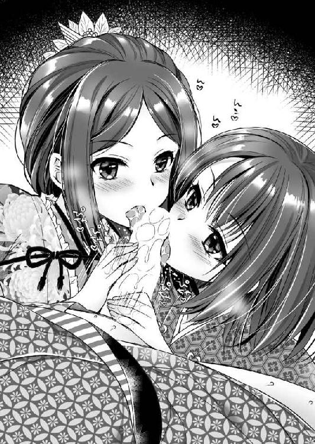
チュパチュパチュパ
「くっ、も、もう......」
「さぁ、来るよ」
さすがに十年以上連れ添った仲である。家康の射精のタイミングを見切った瀬名が囁く。
「ああっ！」
ドックンドックンドクン
家康の断末魔とともに、女たちの手の中で逸物は激しく痙攣して、先端から白濁液が噴き出した。
ブシャッ！
初撃が、直虎の顔にかかる。
どうやら、射精運動に驚いて逸物から顔を離してしまったらしい。
ドビュドビュドビュ
爽やかな美男子にしか見えなかった直虎の顔が白濁に染まっていく。どうやら、瀬名が図ったようだ。
「......」
顔中で男の欲望を浴びた直虎は呆然としていたが、その顔に唇を近づけた瀬名が、ペロリペロリと舐めて綺麗にする。
「さあ、あなたも食べなさい。これが子種の味よ」
口の中を真っ白にした瀬名は、直虎の唇を奪う。
「う、うむ、うむ......」
口内に流し込まれた液体を、直虎はなすすべもなく嚥下していた。
※
「よし、今度はわしの番だな」
射精を終えて気持ちを落ち着けた家康は、逆に精液を飲んで発情しきっている二匹の牝たちを腕力に任せて、炬燵から引き抜く。
「きゃっ」
甘い悲鳴をあげた瀬名と直虎だが、逆らおうとはしなかった。
二人は並んで、炬燵の上に座った。
家康一人が炬燵に入ったまま、上体を起こすと眼前に二人の胸元がくる。
「さて、まずはおっぱいから見せてもらおうかな」
舌なめずりをした家康は、瀬名の着物の胸部と、直虎の直垂の胸部を開く。
プルリンと合計四つの乳房があらわとなった。
「瀬名のおっぱいはいつ見ても見事だな」
「ありがとうございます」
夫に乳房を見られるのだ。恥ずかしがる必要などない。瀬名は堂々している。実際、堂々と見せつけるに相応しい乳房だ。
子供を二人産んだ経験があるとはいえ、まだ二十七歳である。そのうえ大名夫人で、お洒落や美容には人一倍気を使っているのだ。脱いでもすごい。
乳房は大きく熟れきっていて、まさに食べごろの果実。いや、丹念に揉まれて甘さの増した果実だ。美味しくないはずがない。
「直虎殿も、こうやって拝見すると、まごうことなき女でござるな」
「あ、ありがとうございます......」
直虎の乳房は成人女性としては、平均以下だろうが、まったくないわけではない。
幼少期から尼僧として精進料理を中心とした食生活。還俗してからは男装して、身を律していたのだ。余計な脂肪がつく余地がなかったのかもしれない。とはいえ、大きくはないが、そのぶん形は整っている。
それを瀬名も認めて、愛しげに乳房を手の中に捉えた。
「綺麗な乳房ね。これをだれにも触らせずに死滅させようなんて考えていたの？ それこそ御仏に対する冒涜だと思わないかしら？」
そう嘯きながら、瀬名の指先が乳頭を摘まんだ。
瀬名の手はしなやかに踊り、赤い乳頭を扱きたてる。たちまち乳頭はシコリたってしまった。
「あっ、瀬名さまそ、そこは......」
「あら、乳首が勃っているわよ。男の真似をしていたって、しっかり女しているじゃない」
嫣然と笑った瀬名は、勃起した乳首を休まずに扱きたてる。
「うふふ、コリッコリに勃起させちゃってかわいい♪」
陳腐な例えだが、女の体は女が知っているということだろう。人妻である瀬名は、女の壺を心得ている。直虎は翻弄されてしまった。
「ああ、ああ、ああん♪ せ、瀬名さま、そこを弄られるとわたくし......」
直虎の余裕のない表情と声に、瀬名は小首を傾げる。
「ちょっと触っただけなのに感度いいわね？ あなた、もしかして、自分でここに触ったこともないの」
コクン
と直虎がごくあたりまえのように頷くと、瀬名は両目を丸くする。
「驚いたわ。あなたずっと独り身だったんだし、手淫専門なんだと思っていた」
「おいおい」
ノリノリの瀬名の姿に、家康は呆れる。
「あまりイジメるなよ。おまえだって乳首は弱いだろ」
家康は左手で瀬名の外側の乳首を摘まみ、右手で直虎の外側の乳首を摘まんだ。
「あん」
「ひぃ」
瀬名と直虎は同時に喘ぎ声をあげる。
家康はさらに二人の内側の乳首を交互にしゃぶった。
人妻であり男の手に揉まれ育った瀬名の乳房のほうが、全体に柔らかくふっくらとしている。
まったく生娘である直虎の乳房は小さくて硬い。揉み解されていない果実である。
それを遠慮なく抱き寄せた家康は、合計四つの乳房を遠慮なく揉み、赤い実を吸った。
「そ、そこ......を吸われるのは......ああ」
「こ、これは......気持ちいい......」
瀬名にしてみれば予想していた快楽、直虎にしてみれば初めての快楽だ。
二人は家康に乳房を差し出しながら、競うように喘ぐ。
そして、二人が乳首責めだけで軽くイったのを確認してから、家康は二人の下半身に手を降ろしていった。
瀬名の絹の着物の裾を割る。白い足には白い足袋以外は履かれていない。手入れの行き届いた足は、まさに磨き上げられた象牙細工のようだ。そして艶やかな陰毛が彩る下腹部がすぐにあらわとなった。
一方の直虎は袴である。腰の部分から引き抜くと、白い褌が股間に巻かれていた。それを見て瀬名が驚く。
「まぁ、次郎法師、あなた、女なのにそんな無粋なものを......」
「か、形から入ろうと思いまして......」
直虎は恥ずかしそうに応じる。それは女なのに男の下着をつけている恥ずかしさもあるだろうが、もう一つの理由として、褌越しにもわかるほどに濡れてしまっていることもあるだろう。
「あなた、すぐに脱がしてあげなさい」
「はいはい」
妻の命令に従って、家康は直虎の褌を解く。
（まさか他人の褌を解くとはね。そういえば昔、田鶴さまとやったときには、解くのではなくて緩めての脇刺しだったか）
若き日を思い出しながら、家康は直虎の褌を取った。
「......っ」
下半身を剥かれた直虎は、反射的に膝を閉じた。それを家康がやんわりとたしなめる。
「直虎殿、膝を開いてください。そうしないとご奉仕できませんよ」
「し、失礼しました......」
羞恥に顔を赤くしながらも直虎は、素直に膝を開く。
直虎の体毛は薄かった。ふわっとしたけぶるような陰毛が、股間に萌えていたが、ほとんど隠す役目をはたしていない。
家康の眼前で、堂々たる貴婦人と凛々しい男装の麗人が着崩れた姿で、炬燵の上に座り、股を開いている。
二人ともすでに肉裂から蜜を滴らせている。
その淫らな光景に息を呑んだ家康は、左手の人差し指と中指で瀬名の陰唇を開き、右手の人差し指と中指では直虎の陰唇を開いた。
くぱぁ～と女の淫花が二つ並んで開いて、中に溜まっていた甘い蜜が溢れる。
たまらず直虎が訴えた。
「せ、瀬名さま、こ、これはかなり恥ずかし、いや、恥ずかしすぎるのですが......」
「わたしのほうが恥ずかしいわよ。子供を二人も産んで崩れてしまった体を、あんたと比べられるのよ」
そう応じてから瀬名は付け足す。
「でも、気持ちいいでしょ。男に欲望の目で見られることこそ、女の喜びなのよ」
「は、はい......」
瀬名は恥辱を楽しんでいるようだ。直虎のほうは羞恥のあまり気絶してしまいそうな雰囲気である。
妻の企みに乗って家康は、二人の陰唇を見比べた。
「ほぉ～、さすがは親戚だな。姿形はまったく似てないようでいて、隠花の形はよう似ておる」
「っ」
女たちは息を呑んだ。
もっともこの言葉は彼女たちを辱めるための食言であり、実際はそれほど似ているとは言えない。
経産婦の瀬名のほうが膣孔は大きく広がっているし、直虎のほうは出産経験がないどころか、未通の女である。蜜を溢れさせながらも膣孔はきっちりと閉じていた。好奇心に従って強引に膣穴を開く。
（処女膜までしっかり残っている）
出産経験のある瀬名には、処女膜の欠片もないが、直虎のほうは白っぽい膜があり、中央に穴があいている。
処女膜といっても、月経があるのだから、穴はあいているものだ。
「どれ、味のほうはどうかな？」
二種類の美しい牝貝に誘われた家康は、自然と顔を近づけていった。
ペロリ
「あん♪」
会陰部から陰核まで一気に舐めあげられた瀬名は、甘い歓声をあげた。
「ひぃぃぃぃ」
同じように会陰部から陰核まで舐めあげられた直虎は、身震いをして悲鳴をあげた。
（直虎のほうが牝の匂いがするな。瀬名は香料の匂いがきつすぎる）
瀬名の手入れの行き届いた体も嫌いではないが、直虎の野性味溢れる体臭のほうがよりそそられる。
そんなことを考えながらも、やにさがった顔になった家康は、慣れ親しんだ陰唇と、初物の陰唇を交互に味わった。
ピチャピチャピチャ......とわざと卑猥な水音を立てて舐めしゃぶる。
「二人とも美味い蜜だ」
家康の評論に、味比べをされた女たちは震える。
「ああ、恥ずかしい」
「は、恥ずかしすぎます」
瀬名と直虎は、羞恥に身悶えるが逃げようとはしない。心とは裏腹に、肉体は悦んでいるからだろう。
さらには左手の人差し指と中指を瀬名の膣穴に入れて、右手の人差し指を直虎の処女膜の穴に入れてしまった。
「っ!?」
息を呑む直虎に、家康は質問する。
「痛いか？」
「いえ......だ、大丈夫です」
直虎は緊張に喘ぎながら答える。
「まずはおぬしの膜を柔らかくしてやろうと思ってな」
処女膜は年を取るほどに硬くなるという。二十代後半まで大事に保管されていた処女膜である。相当硬くなっている危険性があると家康は判断したのだ。
クチュクチュクチュクチュ
「あ、そ、そこ気持ちいい......♪」
膣穴を穿られた瀬名は嬌声をあげて、のけぞる。
「くぅぅぅぅぅ」
直虎は膝をぴっちりと閉じて耐える。
「あ、あ、あ、あああ」
絶頂したのは瀬名だった。さすがに感度がいい。いや、この状況に酔って、常の何倍も敏感になっているようだ。
炬燵の上に仰向けになった瀬名は訴えた。
「あなた、もうダメ、我慢できない......おちんぽ欲しい」
「おまえからおねだりというのは珍しいな」
苦笑した家康だが、その気持ちはわからないでもない。家康の逸物ももはや臨戦態勢だ。
「なら、そこで二人ならんで尻を差し出せ」
家康の指示に、瀬名は素直に四つん這いになって尻を掲げた。それを見て、直虎もまた慌てて四つん這いになる。
このまま男が後ろから挿入すれば、「碁盤攻め」と呼ばれる体位となる。
家康の眼下に、二十代後半となった女盛りの牝の尻が二つ並んで差し出された。
右手に直虎、左手に瀬名である。
肌の色は瀬名のほうが白い。透き通る処女雪のような肌だ。女らしい脂肪もついていて、むっちりとしている。
瀬名は子供を二人産んで、長男のほうは結婚までしているが、年齢のほうはまだ数え二十七歳である。十分すぎるほどに美しい。いや、単に美しいのではなく、花開いた牝としての色香が濃密である。
まるで食べごろの桃の皮を剥いたような尻だった。
それに対して、直虎は極力、女であることを消してきた女だ。
子を産んだこともなければ、男も知らぬ。尼として、男としてひたすらに精進潔斎していたゆえに、全体に肉付きが薄く、すっきりしている。
こちらは冷たい満月のような尻だ。
なんとも対照的な女尻たちである。
「おぬしら肛門の形までそっくりだな」
「......」
「......」
二人とも自分の尻の穴など見たことがないだろう。耳はもちろん、項まで真っ赤になっている。
「くっくっくっ、よい眺めだな。美女を二人並べて、尻を眺めるなど、まるで桃源郷のようだわ」
炬燵から出て眼下の光景に満足した家康は、右手で直虎の尻を、左手で瀬名の尻を取り、感触を確かめるように撫でまわす。
見た目通り、瀬名のほうが柔らかく弾力がある。
「あまりにもよい女たちゆえに、食べるのがもったいないな」
こういう場合、いきなり入れるよりも、じっくりと焦らすのが礼儀というものだろう。舌なめずりをした家康は、いきり立つ逸物を、発情しきった尻と、緊張に固くなっている尻に近づける。
「さて、どちらから入れるかな？」
豪壮なる肉刀の切っ先を構えた家康は、女たちの四つの尻朶を右から左、左から右と行き来させた。
尻の谷間に挟んでシリコキをし、股の間に入れてスマタをする。
「ああ、そんなに焦らさないで......」
切なげに尻をくねらせながら、瀬名はトロットロになってしまった。
「はぁ......、はぁ......」
荒い呼吸をする直虎の緊張もだいぶ解けたようだ。
それと見て取った家康は、いきり立つ逸物の切っ先を、ぐいっと押した。
「はぁっ」
直虎が嬌声をあげて身を固くする。
逸物の切っ先に、たしかに膜の感覚がくる。このまま押し破ろうかと思ったが、いったん引く。
「まずは瀬名からだな」
ずぼっ
瀬名の膣穴に逸物を押し込むと、あっさりと根元まで入った。
「あんっ♪ 気持ちいい～～～♪」
嬌声をあげると同時に膣洞が、ヤワヤワと締め上げてきた。
（くー、相変わらずいい女だぜ）
気が強くて気位が高くて、扱いづらい。一緒にいて決して気の休まる女ではないが、こと犯し心地のよさで言えば、瀬名に勝る女はそうはいないだろう。
直虎が左にある幼馴染の顔を見て驚く。
「まぁ、瀬名さま嬉しそうな顔です。旦那様を愛しておられるのですね」
「そ、そんなもう愛とか恋とかじゃないわよ」
照れたように応じた瀬名は、言い訳がましく答える。
「この人、おちんぽだけはすごいから......」
「おまえが淫乱なだけだよ」
嘯いた家康は、一気に腰使いを速めた。
パン！ パン！ パン！
男の腰と女の尻がぶつかり合う音をあげる。
「あん、あん、あん、あん、あん」
女の体は子供を産んで完成するといわれる。それだけに瀬名の体は感度が抜群なのだ。
美しき貴婦人の恍惚たる表情を横目に観察して、直虎は目を白黒させている。
そこに家康は笑って促す。
「瀬名はチンポを入れられるといつもこうなっちまう。まったく、こいつのことを気が強すぎるとか、かわいげがないといって恐れている家臣たちに、このアヘ顔を見せてやりたいな」
「いい、いい、いい、このおちんぽ気持ちいいの♪」
嘲笑されながらも、荒々しく犯された瀬名は、すすり泣いて喜ぶ。
「直虎殿、お手数だが、こいつの乳首を吸ってくれないか。こいつはチンポ入れられた状態で乳首を弄られると、ほんとすごい悦ぶんだわ」
「はい」
家康に促された直虎は、素直に遠縁の幼馴染の乳首を手に取り、扱いた。
「ひぃぃぃ、それ、ダメ、ダメ、ダメ、いい、いい、気持ちよすぎる。もう、ダメぇぇぇぇぇぇ♪」
瀬名の絶頂に合わせて、家康もまた逸物を押し込んで射精した。
「ひぃぃぃぃぃぃぃぃぃぃぃぃぃぃ！！！」
ドクン！ ドクン！ ドクン！
人妻ゆえに夫に射精されるとそれに合わせて、絶頂する癖がついてしまっている。瀬名は気持ちよさそうに絶頂した。
家康のほうは、思う存分に射精したところで逸物を引き抜く。
「ああ......」
恍惚となっていた瀬名は、引き締まった下腹部を不意にピクピクピクと痙攣させ始めた。
プシャッ！！！
飛沫が上がった。
「こらこら、客人の前で潮を噴くやつがあるか。はしたない」
「く───ッ、わざと噴かせたくせに......」
身も世もなく絶頂した瀬名は、炬燵の上でぐったりと脱力している。
「はぁ......、はぁ......、はぁ......」
理性を失った美しき貴婦人は、半開きの口元から喘ぎ声と涎と舌を出している。
それを放置して、家康は直虎の尻を捉えた。
「さて、次は直虎殿だ」
「はい。よろしくお願いいたします」
直虎は緊張に身を固くしながらも、逃げようとはしなかった。
家康の逸物はたったいま射精したばかりでも、まったく萎えるということを知らない。
それを一気に押し込んだ。
ブツン！
「はぐっ」
直虎は悲鳴をあげることは恥とでも考えたのか、唇を噛みしめて悲鳴を呑み込んだ。
年齢が年齢だ。処女膜硬化を起こしており、相当に痛いのではないか、と予想されるが、同時に二十代後半の成人女性だ。男を迎え入れる器としては完成している。急速に膣洞が逸物に馴染んでいくのを感じる。
とはいえ、経産婦とたったいま新鉢を割ったばかりの女では、その肉洞の構造はまったくの別物だ。
（瀬名のものに比べると、かなり締まる......。いや、固いな）
強烈な締め付けに驚いた家康が動かずにいると、直虎のほうから促してきた。
「家康殿、せっかくやっていただいたのですから、ご遠慮なさらずに、思いっきり動いてくだされ」
瀬名の見本を見た直後だけに、肉棒を激しく出し入れされないのは、手加減されているようで不本意のようだ。
「承知した。しかし、我慢できないときには言われよ」
「はい。ありがとうございます」
家康の気遣いに、痛みに顔を顰めながらも直虎は嬉しそうに応じる。
こうして家康は腰を使い始めた。
引いて。押し込み。引いて。押し込み。引いて。押し込み。
「あ、ああ、だいぶ、慣れてきた、と言いますか、ああ、お腹の中がズゴズゴされる。これが女の喜びなのですね」
まだ快感に喘いでいるというほどではないだろうが、なにかしらの手ごたえはあるようで、直虎は嬉しそうだ。
（新鉢を割ったばかりの女を絶頂に導くのは無理だろうからな。早くいくのが優しさか）
そう考えた家康は、本日三度の射精をする。
ドクン！ ドクン！ ドクン！
「ああ、入ってくる。温かい子種が腹の中に、あああ♪」
膣内射精されるのは女の本能的な喜びなのだろう。直虎は気持ちよさそうに目を細めた。
その顔をいつのまにか復活していた瀬名が間近から見ている。
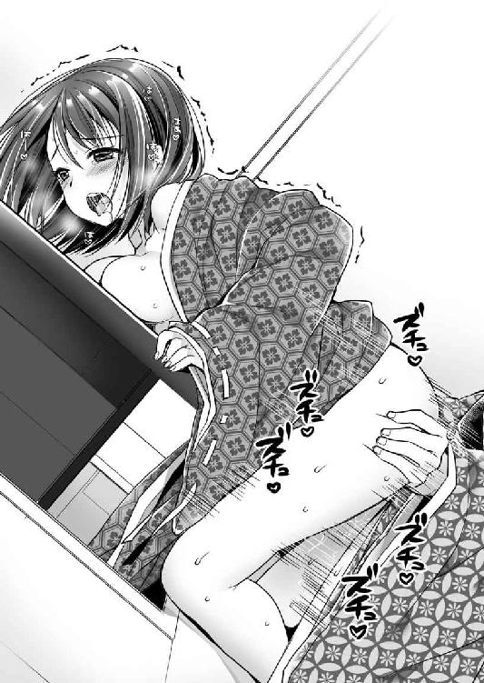
「どお、わたしの旦那様のお大事の味は？」
「それは......最高でござった」
直虎の答えに、満足そうに頷いた瀬名は抱きつく。
「素敵よ、いまのあなた、女の顔をしている。あなたが井伊家のために男の仮面をかぶるというのなら止めはしない。でも、わたしの前ではその仮面を脱いで、女として楽しみなさい。これでいいならいくらでも貸してあげるわ」
「ありがとうございます」
家康を後ろ手に指し示す瀬名に、直虎は感謝する。
「まったくおまえときたら。直虎殿。わしでよければいくらでも相手になるぞ。次回からはもっと気持ちよくなれるだろうしな」
「では、今夜は三人で心行くまで楽しみましょう」
「はい。よろしくご教授ください」
夫婦に求められた直虎は嬉しそうに頷いた。
※
永禄十一年（１５６８）十二月十二日、徳川家康は遠江に、武田信玄は駿河に同時に侵攻を開始した。
「なんと言うか、無人の野を行くが如しですな」
行軍の途中、謹直な鳥居元忠までも思わず感慨したほどに、家康の遠江侵攻は順調だった。
家康が遠江に乱入した日に、井伊家の重臣井伊谷七人衆のうち三人が駆けつけた。菅沼忠久、近藤康用、鈴木重時である。彼らに本領安堵と加増の誓書を与え、この三人を案内役として遠江への侵攻は開始されたのだが、抵抗らしい抵抗はまったくなかったのである。
あまりの順調さに、家康もつい緩みそうな自らの心を、意識的に引き締めた。
「今川の主力は駿河にいるであろうからな」
駿河は今川の本拠地である。遠江は捨てても、駿河は絶対に死守したいだろう。
遠江に侵攻してくる徳川軍よりも、駿河に侵攻してくる武田軍こそを警戒していることは疑いない。
「とはいえ、我らも油断は禁物ぞ。掛川城にはあの朝比奈泰朝が待ち構えているそうだ」
「そこが決戦場でしょうな」
家康の言葉に、元忠も緊張した顔で頷く。
一方、十二月十二日、駿河に乱入した武田軍の眼前には、庵原忠胤率いる今川軍一万五千が待ち受けていた。のちの世にいう第一次薩埵峠の戦いである。
兵数に関しては例のごとくまったく当てにならないが、今川軍としては手ぐすねを引いて待ち構えていた、練りに練った必勝の作戦だったに違いない。
それは、薩埵峠にて武田軍を食い止めているうちに、後背を同盟国北条軍に衝かせるというものだった。
しかし、武田信玄は老獪だ。侵攻をチラつかせながらずるずると時間をかけたのは伊達ではない。事前に今川の武将を二十一人も寝返らせていたのだ。竹千代と屋敷が隣で鳥の糞が落ちると苦情を言ってきた孕石元泰や、桶狭間の戦いで今川義元の首級を持って帰還した岡部元信までも武田に降った。
その大量の造反者の出現により、今川の迎撃軍は一瞬にして崩壊してしまう。後背を衝く北条軍が間に合う間に合わないどころの話ではない。
それどころか勢いに乗った武田軍は、十三日には駿府の街を火の海にした。なんと今川の本拠地は、侵攻開始わずか二日で陥落したのである。
完全にパニックになった氏真は、詰の城である賤機山城に籠もることも諦めて、本拠地を捨てた。そして、今川の守護神朝比奈泰朝のいる遠州掛川城を目指して落ち延び、十五日には同城に入ったようである。
今川館を出たときには二千人の者が随従していたというのに、掛川城に入ったころには五十人になっていたというから、今川の命運は尽きたとだれもが思ったことだろう。
氏真夫人であった北条氏康の娘・早川殿も素足で歩くことになった。この惨めな逃避行を聞いた氏康は激怒。娘の恥辱を晴らすために武田信玄との決戦を決意し、上杉謙信との屈辱的な和睦を結ぶ。そして、敗残の主君を自城に迎えた朝比奈泰朝の奮闘によって、この後の戦局は流動化していくのだが、それは別物語である。
とにかく、駿河の戦局に恐怖した遠江の豪族たちは我先にと徳川軍に駆けつけており、その行軍は順調そのものであった。しかし、十八日になって、いささか予定外のことが起こる。
「殿、どうやら、引馬城は抵抗するよしにござる」
「なに？」
元忠の報告に、家康は小首を傾げた。
引馬城を守るのは女城主田鶴だ。
家康が幼少時に筆下ろししてもらったお姉さまで、結婚後も少し浮気をした。
そんな個人的な付き合いだけではなく、田鶴の夫である飯尾連龍は、一度は家康に内通し、援軍を求めて田鶴の妹を差し出してきた。その娘はいまや家康の唯一の公式な側室として西郡局と名乗り、娘まで儲けている。
なによりも、飯尾連龍は、今川氏真に降伏したあと粛清されているのだ。
そのような経緯を考えれば、遠江の豪族たちの中で一番縁のある家と言っていいだろう。真っ先に駆けつけて味方を申し出るのならわかるが、徹底抗戦の構えというのは理解できない。
「田鶴さまはいったいなに考えているんだ......。まぁ、とりあえず使者を出そう」
純粋に軍事的な理由で考えても、引馬城での抵抗は無意味だ。
武田信玄迎撃戦に兵を取られてしまったのだろう。引馬城内にいたのは女子供なども合わせて、約二百人。多くて三百人であったと伝わっている。
それを攻める徳川軍の兵数は伝わっていないが、三河の兵と遠江の兵を合わせて一万人近くはいたと考えられる。
勝負になるはずがない。しかし、家康の降伏勧告に対する田鶴の返答は、けんもほろろなものであった。
『ここは断じて通さぬ。竹千代よ、おまえはあたしが討つ』
「いやいやいやいや、おかしいだろ。もう一度行け！」
家康が引馬に入ったのは、十八日。その後、何度も使者は往復し、最後の使者が戻ったのは二十四日というから、家康は相当に我慢強く、必死に、あるいは優柔不断に田鶴の説得を試みたのだ。しかし、結局は失敗に終わる。
「わらわは女といえども武士の家に生まれたものなり、おめおめ城を開きて降参するはわらわの志にあらず」
最後のこの返答を聞いた家康は、激怒したと伝えられている。
「ふざけるな！ 女が武士の志!? そんなもののために、無関係な家臣領民を巻き添えにして自滅しようというのか！ 死にたいのなら勝手だ。自分一人で死ねばいい。家臣領民を巻き込んでいい道理がどこにある！」
勝算があって戦うのなら当然だ。しかし、このときの田鶴は、だれの目にも勝算のない戦をしようとしているのである。
これを天晴れと称える武士の思想が、家康は嫌いだった。こんな考え方があるから、世の中から戦がなくならないのだ。家康は家を守ってこそが武士と考えたかった。それゆえに家を康んじる、と名乗ったのだ。
家康は人ではなく、家を重視した。刀槍矢玉が当たれば、人は死ぬ。それでも、死を恐れず働いてもらわねばならない。そのためにはどうすればいいか？ 「たとえおまえが死んでも、それが功績になっていたら、必ず家に報いるぞ」という安心感を与える制度を作ったのだ。
これが徳川軍団の強さである。
しかし、いまの今川家は滅びようとしているのだ。こんなときに死兵となって戦っても、家臣領民はなにも報われない。
まさに無駄死にである。
ひとしきり怒り狂った家康は、やがて諦めの溜息をついた。
「やむを得んか......。酒井忠次、石川数正、おまえらに任せる。引馬城を一呑みにしてしまえ」
勝敗の決まった無駄な戦である。この戦闘に意味を持たせるとしたら、徳川軍の武威を遠江の豪族たちに見せつけるという以上のものはないであろう。
そこで徳川軍の中でも、双璧というべき二大重臣を投入したのだ。
「舐めるなよ。撃て！ 撃て！ 撃て！ 今川の意地を見せよ！」
田鶴たち引馬城の城兵は、必死に防戦した。
その奮闘は凄まじく、酒井忠次、石川数正の攻撃を一度は撃退してしまった。しかし、兵力差も、勢いもまるで違うのだ。
二百人あまりの城兵は、たちまち五、六十人となってしまった。
翌二十五日、早朝。
家康がさらに降伏勧告の使者を出そうかと考えていたときだ。
「引馬城の城門が開きます」
伝令に言われるまでもない。家康の視界にも入った。
開いた門扉の中央に立つのは、緋縅の鎧に同色の兜をかぶり、眉尖刀を持った女武者だ。
（ああ、田鶴さまだ）
すでに死を決した女の顔には、神々しいまでの美しさがあった。
家康は雷に打たれたように立ち尽くすことしかできない。
「いくぞ！ 薄汚い裏切り者、松平元信の首級をあげる。みなのもの突撃せよ！ あたしに続け！」
勇ましく眉尖刀を振るった田鶴が駆けだし、そのあとに赤い襷に白の鉢巻をし、薙刀を持った侍女十八人が続いた。
「おおー！」
さらに城内に残っていたすべての者が打って出た。
（ああ、全員。死ぬ気なんだ）
もはや落城は決まった。城を守って死ぬよりも、華々しく打って出て死のうということだろう。
（やめてくれ。そんなことしてなんの意味がある。今川家はそこまでして尽くす価値のある家か。粛清に次ぐ粛清で、家臣たちの信望を完全に失っているじゃないか）
家康とて、今川を裏切りたくて裏切ったわけではない。今川が自滅したから、身の安全を図っただけだ。
陣頭に立ち、眉尖刀を左右に振るって奮闘する田鶴の勢いに押されて、徳川勢は崩れた。
史書に曰く、徳川兵は三百人の死者を出したという。もっともこれは田鶴の奮闘にロマンを感じた後世の人が盛った数字だろうが......。
この時代、女の首級をあげても雑兵と同じ扱いで、たいした手柄とされなかったことも関係しているだろう。
田鶴は女ながらに武勇の達人。戦うのは命がけであるのに、討ち取ってもなんら利益にならないと思えば、まともに相手をしたいと思う者はおるまい。
「えーい、情けない！ 女と戦えぬと言うのなら、わたしが行く！ 同じ女なら問題あるまい！」
男たちのだらしなさに激高した井伊直虎は自ら刀を抜くや、周囲の者が止める間もなく駆けだした。
「田鶴殿、我が曽祖父の仇、討たせていただく！！！」
直虎の呼びかけに、田鶴は応じた。
「井伊の尼城主か。松平ともども、今川に多大な恩を受けながら裏切った憎き相手。こちらこそ許しておけぬ」
逃げる敵を追いまわすのに飽いていた田鶴は、眉尖刀を持って直虎に襲い掛かった。
「せぁ───ッ！！！」
唸りをあげる刃を、直虎の太刀はなんとか弾いた。しかし、その瞬間に田鶴は、敵の技量を見抜いたようだ。
「その程度か！」
「くっ」
田鶴の薙ぎ払いが、直虎の右の袖に当たる。小手に入る。胴に切り付ける。たちまち直虎は防戦一方に追いやられてしまった。
一時の激情に駆られて飛び出してしまった直虎であったが、本来、彼女は寺育ちであり、このたびが初陣であった。
対する田鶴は若きころから女武者として鳴らした女傑である。
勝負になるはずがない。とはいえ、ここに至るまでの奮闘により田鶴は疲労しており、受ける直虎は井伊家当主として立派な鎧を着ている。
鎧を着ている者を殺すというのは簡単ではない。なにせ殺されないように考えて作られているのが鎧なのだ。
しかし、何度も打ち据えられているうちに、直虎の体力が限界に達した。腰を抜かし、仰向けに倒れる。
「もらった！」
無防備に剥きだしとなった急所。直虎の顔に向かって、逆手に持った眉尖刀を叩き落とそうとしたところで、田鶴の動きは止まった。
「はぐっ」
勝ち誇った田鶴の口元から、喘ぎ声とともに鮮血が溢れた。
その背後に立った人影が、田鶴を抱きしめている。
「......田鶴殿、もうよろしかろう」
鎮痛な声を出した家康の右腕は田鶴の赤き胸部を抱き、左手で持った鎧通しが、田鶴の腋の下から入っている。
「おのれ、竹千代っ!?」
呻き声とともに、背後を窺った田鶴は眼を剥き、最後の渾身の力で眉尖刀を振るう。
「御免」
田鶴の腋の下に突き刺さっていた短刀を引き抜いた家康は、そのまま田鶴の白い喉を掻き斬る。
奔騰する血飛沫を浴びながら、家康は腕の中の女性をゆっくりと大地に横たえてやる。
「徳川殿......助かりました」
なんとか身を起こした直虎の礼を聞き流しながら家康は、無念の表情をたたえた田鶴の目を閉じてやる。
歴史に烈婦の名を刻む田鶴の首級をあげた人物の名前は、伝わっていない。
「まったく、この世は穢れているな......」
厭世的に呟いた家康は、気を取り直して立ち上がると声を張り上げた。
「引馬城は落ちた。全軍、ただちに掛川城に向かって進軍せよ」
二日後の二十七日に家康は、今川氏真の逃げ込んでいた掛川城を囲む。
今川家は、すぐに滅亡するかに思われた。しかし、掛川城が降伏開城したのは、なんと半年後の永禄十二年（１５６９）五月十七日のことである。
それもまったく落ちる気配がなく、武田軍の介入を危惧した家康が「いずれ駿河を今川に返すから」という詐欺めいた条件で開城させ、今川主従を北条家に送り届けるという形での終戦となった。
これは朝比奈泰朝の軍才の賜物と言われているが、もう一つに田鶴率いる引馬城の悲壮な玉砕戦を伝え聞き、恐慌状態であった今川諸士が喝を入れられた、という側面も否定できないだろう。
「なるほど、こういう主家への貢献もあるのか」
味方を鼓舞する玉砕戦の効用を目の当たりにして、もっとも感銘を受けたのは鳥居元忠であった。
彼は三十二年後に、有名な玉砕戦をする。そう関ヶ原の戦いの前哨戦、伏見城の戦いだ。
西軍の蜂起規模を読み誤った家康のせいで敵地に孤立した元忠であったが、開城退去勧告を無視して戦い全滅する。
戦略的に見て意味のない行動ではあったが、これによって西軍は徳川軍の精強に恐れをなし、徳川軍は粛然として闘志を滾らせた、という意味では目に見えない大きな貢献となった。
徳川四天王と呼ばれるくくりがある。酒井忠次、井伊直政、本多忠勝、榊原康政の四人だ。彼らはまるで徳川幕府建国の功臣のベスト４のように語られることもあるが、違う。
もちろん、この四人が優れた功績をあげた建国の功臣であったことは確かだが、奥平信昌、水野勝成といった彼らに勝るとも劣らぬ活躍をした家臣は幾人かいる。
この徳川四天王を言い出したのは豊臣秀吉ないし、その近辺と思われるが、いずれにせよ秀吉が贔屓にした徳川家臣たち、というのが当初の意味だったようだ。
家康自身が、この徳川四天王というくくりを否定している。第一、ベスト４というのに鳥居元忠の名が入っていないのは、笑止千万だったことだろう。
愚直に家康に仕えた元忠は、秀吉に近づこうとしなかった。それゆえに秀吉から認められることもなかったのだ。
家康は大事な合戦には自ら出向くゆえに、大きな軍事的な功績をあげた部下というのは少ないのだが、どうしても別動隊が必要となったときに、その総大将を任せるのは鳥居元忠であった。
元忠はその期待によく応え、黒駒の戦いでは、野戦で五倍の敵を真正面から撃破という神がかった武功をあげた。第一次上田城攻略戦では七千人の兵を任されて真田昌幸を攻める。そして、伏見城の玉砕。
豊臣時代には四万石に過ぎなかった鳥居家は、その後、幾度にもわたり加増され、最終的には二十四万石になっている。
家康の天下を治める方針として、息子たちや娘を嫁がせた外様大名には大領を与え、譜代大名には権力を与える代わりに石高を低くする、という権力と富の分化という分断統治が行われた。
そんな中で、この鳥居家の扱いは、四天王の面々の家より上だ。のちに井伊家には井伊直孝という傑物が出て、さらに上の三十五万石になるとはいえ、それまでは鳥居家が譜代家臣トップの扱いだったのである。
※
「負けるってわかっていても戦うんだもんなぁ」
戦国大名としての今川家を滅亡させた家康は、引馬城を改修して、浜松城と名称を変更。ここを自らの本拠地とした。岡崎城は嫡男松平信康に任せ、傅役として石川数正を付ける。
前城主に挨拶するために田鶴の墓に手を合わせた家康は、しみじみと慨嘆する。
それに付き従った瀬名が、不意に提案した。
「ここに椿を植えましょう」
「椿？」
戸惑う家康に、瀬名は得意げに頷く。
「美しく力強く、そして、満開のまま落ちる。田鶴さまにぴったりの華でしょ」
「ああ......そうだな」
特に反対する理由もなく家康は了承した。
かくして田鶴の墓所には、瀬名の指示により百本あまりの椿の花が植えられることになる。
そのため毎年、田鶴の墓の周りでは見事な椿の花が咲き誇ることとなり、いつしか田鶴は「椿姫」の異名で呼ばれることになった。
そして、田鶴は家康の初恋の人だったという伝承が残る。
しんみりとした気持ちで新城に入った家康は、思わぬ者の出迎えを受けた。
緋縅の兜をかぶり、緋縅の鎧を纏い、眉尖刀を持った女武者が立ちふさがったのだ。
「田鶴さまっ!?」
凝然と立ち尽くす家康に向かって、その幽霊は眉尖刀を振り回し、家康の鼻先に翳すと一喝した。
「やい、家康。この城、貴様にくれてやる！ せいぜい大事にするとよい！」
「あ、ありがたき幸せ」
思わず拝跪してしまった家康を前に、女武者はしてやったり顔で笑うと、兜を取った。中から赤毛から溢れる。
ここに至って家康は、ようやくこの女武者の正体に気づいた。
「なんだ......西郡か」
安堵の溜息をつく家康に向かって、西郡局は丁寧に頭を下げた。
「失礼いたしました。どうも殿様が気落ちのようすでしたので、このような趣向をしてみました。不快だったでしょうか？」
「いや、心遣いは嬉しいぞ」
立ち上がった家康は西郡局を抱きしめると、その耳元で囁く。
「今宵はおぬしの部屋で過ごすかの」
「あら、嬉しい♪」
満足そうな笑みを浮かべた西郡局は、艶っぽく家康に身を預ける。
そんな二人のやり取りを見ていた瀬名から、抗議の声があがった。
「西郡、そのようなやり方で殿の気を引くのはいささか卑怯ではないでしょうか？」
「ん？」
振り向くと瀬名だけではなく、おこちゃと直虎までも不満顔で立っていた。
若干、冷や汗をかいてあとずさった家康だが、意識して鷹揚に声を張り上げる。
「今宵は新しい城での床入りだ。みなで楽しむか」
それを受けて瀬名が、にっこりと挑発的に笑う。
「あら、いいのですか？ あなたもそろそろ御年ですから、この人数はきついと思いますわよ」
「なにを言う。わしはまだ二十代だぞ。女などいくらでもかかってこいというものだ」
胸を張った家康は、トンと軽く胸板を叩いてみせる。
「まぁ、頼もしい♪」
おこちゃが飛び込んできた。
「おお、任せておけ」
男らしく応じた家康は、四人の愛する女たちを引き連れて寝室に入った。
※
「あ、こら、そう急くでない」
寝室に入ると同時に家康は、四人の美姫に操られるがままに、着物を脱がされ、褌の果てまで奪われてしまった。
そして、真新しい城の、真新しい布団に大の字に寝かされる。
その周りにそれぞれ着物を脱いだ四人の女が侍った。
「うふふ、さて、どうしてくれようかしら？」
家康の右側に完璧な所作で正座した瀬名は、気取った仕草で口元に左手をあてがいながら、なんとも妖しい色香をたたえて見下ろしてくる。
もっとも肌の色が白いのは瀬名だ。三十路を間近にした二児の母とはいえ、大名夫人として美容法に気を使っているから、容貌に衰えはない。完璧な所作と相まって、色気漂う貴婦人である。
「四人同時でご奉仕するなんて、ドキドキしますね」
右足元に侍ったおこちゃは興奮に頬を赤らめていた。
その容姿は四人の中でもっとも平凡と言えるだろう。身長は女の平均より低い。しかし、乳房は四人の中で一番大きい。小柄な体躯に巨乳である。ただでさえ大きな乳房が一層大きく見える。体全体が赤ん坊のようにムチムチしていて、いかにも抱き心地のよさそうな体だ。愛嬌ある顔と相まって、少し子狸っぽい雰囲気がある。
彼女はまだ子供を産んでいないこともあって、正式な側室ではない。側室にしようと何度も言っているのだが、侍女として家康の身の回りの世話をすることに悦びを感じているから遠慮します、と断られている。
「お互い家康さまのお情けを賜る女として、存在は知っていましたけど、こうやって一堂に会するのは初めてですね」
家康の左横に泰然と座った西郡局は、いかにも武芸の達人といった容姿であり、背も四人の中で一番高い。
鍛え抜かれた筋肉質な体は、年齢が一番若いこともあって、子供を産んだことがあるなどと信じられぬほどに引き締まっていた。
「家康殿の妻であられる方々が一堂に会された場所に、わたくしなどが侍ってよろしいのでしょうか？」
家康の左足元に座った直虎は、いささか不安げな声を出す。
青白いほっそりとした体躯をしている。普段は隙なく男装の麗人をしているせいで育たないのかと、邪推したくなるほどに乳房は一番小さい。女城主などといっても、根は僧侶なのだということがわかる。
「当然でしょ。あなただって殿のお情けを賜っている身なのですから」
瀬名はなにをいまさらといった顔で応じる。
女たちは互いの裸体を値踏みするように見やったあと、ごく自然と家康の腰へと視線を下ろす。
四人の女の裸体を仰ぎ見る眼福を堪能している家康の腰のものは、当然のようにギンギンにいきり立ち、天を衝いていた。
やがて熱い嘆息とともに呟いたのは直虎であった。
「いつ見ても大きいですね」
女王様然とした瀬名が頭髪の鬢を整えながら応じる。
「この人のここだけは天下一ですから」
「そうですね。このおちんぽさまの前では、女は股を開くことしかできません」
西郡局はごく真面目に頷く。そんな女たちにおこちゃが反論する。
「そんな顔だって悪くないですよ。殿は美男子です」
残念ながら他の三人の女は賛同せず、さりげなく目を逸らす。
ややあって瀬名が応じる。
「まぁ、味のある顔としておきましょう」
それに西郡局も焦った顔で応じる。
「そ、そうですね。男は顔ではありませんから」
「け、健康な殿方が一番です。徳川殿の体に抱きしめられると安心感があってわたくしは好きです」
慌てたように取り繕った直虎は、眼下の逸物に手を伸ばした。
それを見た他の三人も手を伸ばして、逸物を捕らえる。そして、四人は愛しげにシコシコと扱ぐ。
ややあって西郡局が、ニヤリと笑う。
「しかしまぁ、あたしたちはこのおちんちんが大好きだ、ということだけは満場一致しておりますわね」
「はい」
「......恥ずかしながら」
「そうですわね」
満面の笑みでおこちゃは頷き、静かに同意する直虎に続いて、瀬名もしぶしぶといった顔で頷く。
それから瀬名は一同を見渡す。
「せっかく今夜はこうやって四人で楽しむのですから、ゆっくりと趣向を凝らして楽しみましょう」
「ええ、たっぷりと......骨の髄まで」
西郡局は精悍に頷き、他の女たちも逸物を手に舌なめずりをするさまを見て、家康はいまさらながら不安になってきた。
（こ、これはもしかして、死地に入ったか？）
四人とももはや生娘ではない。瀬名は二人、西郡局は一人の子供を産んでいる。直虎とおこちゃはまだ産んでいないとはいえ、家康にたっぷりと開発され、女として脂が乗りきっている。
いずれの女と床を共にするときでも、睾丸をすっからかんになるまで搾り取られるのが常であった。
それが四人同時、しかも競いあって男を搾りにきたらどうなるか？
（殺されるかも......）
家康は背筋に冷たいものが流れるのを感じたが、いまさら遅い。
「まずはじっくりと味わいましょう」
妖艶な顔を見渡した四人の美姫たちは、だれからともなく逸物に顔を近づけた。家康の顔を横目に見下ろしながら、ギンギンにいきり立っている逸物に舌を伸ばし、亀頭部をペロリペロリと舐める。
「ああ......」
四枚の濡れた舌が交互に亀頭部を捕らえる。
右上から瀬名、左上から西郡局、右下からおこちゃ、左下から直虎の舌が、亀頭部を執拗に舐めまわした。
先走りの液は、女たちの舌先でたちまち舐め取られ、代わって唾液を塗りたくられる。
パンパンに張り詰めた亀頭部は、四種類の唾液に濡れて、さらに肉棒を滴り落ちて、肉袋をも濡らす。
「うふふ」
どの女も楽しげに舌を動かしながら、横目ではしっかりと男の顔を見ている。
（き、気持ちいいが、ここでだらしない顔をしては、男としての威厳にかかわるな）
変なプライドを刺激された家康は、必死に顔の筋肉を引き締める。
そんな男の演技など全部お見通しと言いたげな顔をした女たちは、まるで相談したかのように協力して家康の両足を持ち、頭上へと持ち上げてきた。
「な、なにをするつもりだっ!?」
動揺する家康など意に介さず、気が付いたときには赤ん坊がオシメを替えられるような姿に固定されていた。俗に言うチングリ返しだ。
「うふふ、こうすると殿も、督姫みたいでかわいいですわね」
西郡局の感想に、瀬名は嗤う。
「それはさすがに無理があるでしょう」
「ええ、それを聞いたら、成長した督ちゃんが傾奇者になってしまいますよ」
おこちゃも真面目にたしなめるが眼が笑っている。そして、一同は笑顔で逸物に顔を近づけてきた。一人は亀頭部を咥え、一人は肉棒を横咥えにし、一人は睾丸を含み、一人は肛門を舐めてきた。
だれがどこというわけではない。四人は阿吽の呼吸でそれぞれの位置を替えている。
「ひっ」
男の急所を、美しき四匹の牝獣に食べ散らかされている気分だ。
悶える夫を妖しく見下ろしながら瀬名は、挑発してくる。
「あなた、我慢してくださいね。十代の小僧と違って、もはやいい大人なのですから、暴発などさせたら、思いっきり嘲笑って差し上げますわよ」
「なにを言う、わしがいま、世間になんと呼ばれておるか知らぬのか、東海一の弓取りだぞ。この程度で音をあげるわしと思ってか」
家康の強がりに、瀬名は肩を竦める。
「養父さまの異名を継承されてようございましたね」
そこにおこちゃが歓声をあげる。
「タマタマが二つとも、きゅっとあがっていますわ。これは射精を我慢している証ですね」
「ほぉ、そうなのですか。勉強になります」
三人に比べるとまだまだ男の生態がよくわからないらしい直虎は、真面目な顔で頷く。
（くー、我慢我慢我慢......）
逸物を女たちの玩具にされて、射精欲求はかなり高まっているが、家康は胸中に念仏のように「我慢」と唱えながら耐え忍んだ。
そして、家康は我慢比べに勝利した。やがて飽きたらしい瀬名が新たな提案をする。
「では、そろそろ次に移りましょう？」
家康は腰の下に丸めた布団を入れられて、頭上に掲げられていた両足を降ろされる。
そうすると家康の腰があがり、女たちの唾液に濡れた逸物が一段と高く飾れる。
「ちょ、ちょっと待て、おまえらなにをするつもりだ」
男にとってはいささかつらい体勢である。家康は逃げようとしたが、無理であった。
右腕には瀬名が、左腕には西郡局が、右足にはおこちゃが、左足には直虎が跨がっていたのだ。
そして、みな自らの自慢の乳房を両手にとって持ち上げてみせた。
「おっぱい相撲と洒落込みましょう」
瀬名の音頭に従って四人は、それぞれ自分の乳房を押し出して、家康の逸物に四方から近づけた。
合計八つの乳房によって、逸物は囲まれる。
四重パイズリ。......とはいえ、さすがにすべての乳房で逸物を挟むのは無理がある。みな乳首の先端で、交互に亀頭部などを突っついてくる。
乳房の大きさでいえば、おこちゃが一番大きい。二番目が瀬名。三番目が西郡局。一番小さいのが直虎となる。
おこちゃの体は女としては普通。いや、小柄な体型であろう。顔も童顔。それなのに乳房だけは大きいから、より一層大きく見える。
「おこちゃ殿は、まだ子供を産んでいないのですよね。それなのにその大きさはすごいね」
感嘆した西郡局の感想に、おこちゃは照れたように両腕の肘で自らの巨大な肉まんを左右から挟みながら、両手で火照った頬を押さえて、身をくねらせた。
「子供のころから家康さまに揉んでもらっていたら成長してしまいました」
おこちゃの照れながらの自慢話に、周りの女たちはカチンとくる。それと気づかずにおこちゃは思い出話を続けた。
「家康さまは織田さまの人質時代、わたしをお風呂に入れてくれたときも、体を洗うふりをして、おっぱいに触れていた、と於大さまから聞いております」
「へぇ～」
他の三人の女たちの家康を見下ろす目が底光りした。
「いや、さすがにそれは記憶にないぞ」
それは作り話だろ、と言いたくなったが、笑顔のおこちゃはチロと舌を出す。
場を盛り上げるための他愛のない戯言といったところだろう。
侍女として身の回りの世話をしてくれているおこちゃは、なんだかんだ言って一番身近にいる女である。女の乳房は男が揉むほどに育つという俗説が真実ならば、おこちゃの乳房が大きく育った原因は間違いなく家康にある。
ややあって直虎が、間を取り持つように声を出す。
「男と女の仲は、長さではありませんからね」
「そうですね。下手に馴染みすぎると、なかなか一線を越えられなくなるものです」
瀬名の言葉は、おこちゃがいまだに身籠っていないことをあてこすっているのだろう。
そんな雑談をしながらも、彼女たちのよく実った乳房が、逸物を交互に挟んでくる。
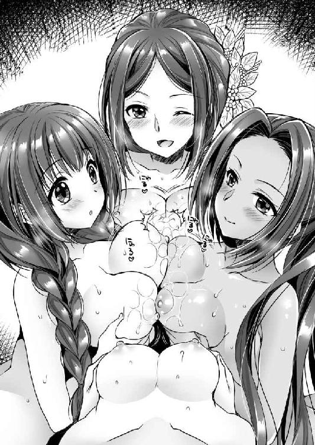
「おお......」
大きさも柔らかさも違う乳房に肉棒は挟まれて、扱かれるのだ。さらに乳の狭間から飛びだした亀頭部に、向かいの女が舌を伸ばし舐めた。
つまり瀬名の乳房に挟まれているときには、向かいの直虎が舐め。西郡局の乳房に挟んでいるときは、向かいのおこちゃといった具合である。
（こ、これは極楽すぎる）
柔らかい肉と唾液の海に包まれて、ついに家康は屈した。
睾丸から溢れた熱気が、乳房に包まれた肉棒を駆けあがり、先端から一気に噴き出す。
ドビュュュュュュュ！！！
女たちの乳房の中で、逸物は爆発した。
「キャー～～～♪」
昇竜のように飛び上がった白濁液が、驟雨の如く降り注ぐさまに、四人の美姫たちは歓声をあげる。
女たちの顔は真っ白になり、それを見て笑いあった女たちは、互いの顔をペロペロと舐めあう。
「きゃ、くすぐったい♪」
戯れている女たちを脱力した家康は荒い息をしながら、心地よい充足感とともに見守る。
「はぁ......、はぁ......、はぁ......」
やがて顔や乳房にかかった乳房をあらかた綺麗にした瀬名が、惚けている夫を見下ろす。
「あら、なんですの。このだらしないおちんちん。まだまだ始まったばかりですのよ」
家康は肩を竦めて、言い訳する。
「すごいのをやられてしまったからな。少し休ませてくれ」
「まぁ、だらしない。あなたは絶倫なのが唯一の取り柄でしたのに」
そこでいったん言葉を切った瀬名は、わざとらしく周りの女たちを見る。
「年は取りたくないですわね。結婚した当初はもう一日中、猿のようにやられて、ほんとに参りましたけど」
瀬名の言い分は、愚痴という形をとった自慢話であろう。先ほどのおこちゃの言動に対するあてこすりであることは明白だ。
それを聞いた他の女たちの目が、いささか険悪になっている。
「まぁ、仕方ないですわね」
満足げな表情で、わざとらしく溜息をついた瀬名は、家康の右腕から降りると、その枕元へと移動した。そして、正座をすると太腿を軽く叩いた。
「さぁどうぞ。あなた、頭をこちらに乗せてください」
「ああ」
家康は素直に、瀬名の両太腿の間に頭を置いた。
「よい、太腿だ」
しっとりと吸い付くような白い肌。若さに任せた美しさではない。成熟した女が、意識して美しくしようと金をかけて努力をしているからこそあり得る美だ。
「ありがとうございます」
当然と言いたげに澄ました顔で応じた瀬名は、残りの女たちに命令する。
「おこちゃは、そのまま殿のお大事で遊んでいなさい。西郡局はこちらに来て殿の左の乳首を、直虎は右の乳首を舐めなさい」
正室の指示に従って、女たちはそれぞれ家康の体にとりつく。
射精したばかりで萎んでいる逸物は、おこちゃの口内に包まれて、唾液漬けにされた。
同時に西郡局と直虎が、家康の左右の乳首を舐めてきた。
「こ、こら、ああ、ちょっとくすぐったいぞ」
悶える家康の頬を両手で挟んだ瀬名がたしなめる。
「今宵は殿様に疲れを癒していただくのが目的ですから、このままドンと構えていてくださいませ」
「あ、ああ......」
諭された家康は、しぶしぶ頷く。
おこちゃは逸物の周りを綺麗にお掃除しただけではなく、半萎えの逸物を口に含み、チュウチュウと吸引。尿道内に残っていた残滓まで吸引してしまった。
同時に直虎と西郡局は、楽しげに家康の顔を窺いながら、ペロペロと卑猥に乳首を舐めてくる。
「男の人も乳首を舐められると感じるのですね」
直虎の感想に、西郡局が頷く。
「そのようですね。悦んでいただけているようでなにより」
男とて乳首を舐められると気持ちいい。しかし、それを認めるのは恥ずかしいので、家康は必死に表情を引き締める。
そんな家康が上を向くと、前方に飛び出した瀬名の下乳を見ることができる。
ついつい家康は両手をあげると、瀬名の乳房を手に取り、乳首を扱く。
「あん、まったく......いまは黙って奉仕されていればいいのに......あん」
権高な表情を必死に保っているが、瀬名の乳首はすでに突起している。弄られて感じてしまっていることは隠しようもない。
その光景に気をよくした家康は、瀬名が高ぶっていることを察しながらも手を放し、左手で西郡局、右手で直虎の乳首を弄る。
「あ、はん......」
「き、気持ちいいです......」
男の乳首を舐めながら、自らの乳首を弄られた直虎と西郡局は、ムズムズと腰を動かす。
女たちの奉仕を楽しみながら、その発情した顔を楽しむという、なんとも贅沢なひと時を家康は堪能する。
そんな中で、最初に音をあげたのは直虎であった。
「くっ、殿、そのように弄られると、わたくしは......もう」
見かねた瀬名が指示を出す。
「まぁ、次郎法師ったら、ほんと我慢が利かない体なのね。いいわこちらに来て旦那さまの顔に座りなさい」
「おい」
「はい」
驚く家康を無視して、直虎は家康の顔を跨いできた。おかげで家康の顔は瀬名と直虎の股間によって、上下から挟まれた形だ。
そのうえで、瀬名と直虎は戯れる。
「ああ、瀬名さまやめてください、そんな女同士で、こんな......」
「うふふ、たまにはいいでしょ。うふふ、女同士の接吻というのも、なんか不思議ね」
どうやら、瀬名と直虎は、互いに接吻したり、乳首を押し付けあったりして、女同士で楽しんでいるようである。
彼女たちの股間に上下から挟まれている家康の鼻腔は、一段と強い牝の匂いに包まれた。
それを楽しみながら家康は、両手で西郡局の乳首を弄ぶ。
西郡局も負けじと、家康の左右の乳首を摘まんで、ペロペロと舐めてくる。
（直虎の尻が乗っているから、顔を見られないのは幸いだな）
もはややにさがった顔を防ぐことのできない極楽体験だ。
そうこうしているうちに、逸物をしゃぶって遊んでいたおこちゃが歓声をあげた。
「逸物に芯が戻りました。これなら入れられますね」
それを見て西郡局が手をあげる。
「一番槍はあたしがいただいてよろしいでしょうか？ もう我慢できなくて」
家康に乳首を扱き上げられた西郡局は、切なそうに引き締まった太腿をこすり合わせる。
「あらあら、若いわね。どうぞ、楽しみなさい」
嫡男を産んでいる正室の余裕というやつだろう。瀬名は他の女たちのようにガツガツしない。余裕をもって指示する。
「では、失礼して」
西郡局は素早く家康の腰に跨がると、腰を落とした。
ズボリと一女の母である女は、逸物を呑み込んだ。若く鍛えられた体躯は、出産してなおよく締まる。
「はぁん、大きい。あたしのお腹の中がみっちりといっています」
歓喜の声をあげた西郡局は膝を立て、リズミカルに腰を上下させた。
さすがは田鶴の妹。姉に負けぬ男勝りだけあって、腰使いは鬼である。腰の動きの荒々しさで言えば、他の三人を圧倒する。
「すごい、他人の睦言を拝見するのは初めてです。西郡局はこうやって楽しんでおられたんですね」
感心するおこちゃは、西郡局の前に回り、家康の腹に跨がると、背が低いことを利用して、西郡局の乳首を吸い出した。
「ああ、ダメ、そんな、おちんちん入れられた状態で、乳首を吸われるだなんて、ああ、すごすぎるぅぅぅ」
ドビュビュビュビュビュ！！！
「あああぁぁぁぁぁぁ」
膣内射精をされた西郡局は、盛大な牝叫びをあげてぐったりと脱力した。
次はだれが入れるのかと、おこちゃと瀬名と直虎の三人の視線が素早く交錯し、ややあって直虎が訴えた。
「次はわたしに。濃い子種が欲しゅうございます」
その意味を察した瀬名は、顔を輝かせる。
「次郎法師、子供を産む気になったの？」
瀬名の抱き合ったまま、いささか照れくさそうに直虎は訴える。
「はい。いささか厚かましいお願いなのですが、それがしにぜひ、家康さまの子種を孕ませてください。それを井伊家の跡取りにいたします。よろしいでしょうか？」
家康が返事をする前に、瀬名が声を励ます。
「ええ、それがいいわ。井伊家にとって一番いい。頑張りなさい。あなた、まさか否やはありませんわよね」
瀬名にきつく詰め寄られた家康は、二人の体の中から身を起こしながら胡坐をかき苦笑する。
「ああ、いいぞ」
「ありがとうございます」
直虎は土下座をして感謝の意を表す。
「さー、やりましょう。次郎法師の種付けですわ。あなた、濃いのを頼みますわよ」
我がことのように気合いの入った瀬名は、直虎の背後に回って太腿を開かせると、両手を肉裂に回して、くぱぁと割る。
「あ、あの、瀬名さま、さすがに恥ずかしいですが......」
「なにをいまさら純情ぶっているのですか。あなたにはもう時間がありませんのよ。さぁ、きっちりかっちり種付けですわ。種付けならばこの体位がいいわ」
ロマンの欠片もない瀬名のテキパキとした実務的な指示に、家康は苦笑しながらも身を起こす。
「では、やるぞ」
正常位。俗に言う種付けプレスと呼ばれる体位で、家康は直虎に挿入した。
「ああ、太い。太いおちんぽさまで体の芯を広げられる幸せ......」
二十代の後半になるまで男を知らなかった女は、両手足を使って男にしがみつく。
「まぁ、直虎さまったら、普段はあんなに凛々しいのに。この姿を見たらだれも男とは思いませんね」
おこちゃの感想に、直虎は顔を赤らめるが逃げようとはしない。それどころから自ら腰を使ってしまう。
ズコズコズコ
「だ、だって気持ちいいんですもの♪ あっ、あっ、気持ちいい♪ 気持ちいい♪ 気持ちいい♪ おちんぽさま気持ちいい♪ このおちんぽさまにはだれも勝てません♪」
すっかり正体をなくしている幼馴染の姿に瀬名も苦笑する。
「まぁ、真面目な女ほど一度嵌まると抜けられぬと申しますしね。そんなことより、あなた、ただ種付けするだけではいけませんわよ。次郎法師は井伊家の跡取りを産まなくてはいけないのですからね。男の子をお願いします」
「いや、そう言われてもな」
困惑した家康は、思いめぐらしてから、嬌態を晒す直虎の体を抱き起こし、さらに反転させた。
胡坐をかいた家康の上に、直虎を背面の座位とする。「乱れ牡丹」と呼ばれる体位だ。
「ならばおぬしも手伝え。男の子を産むためには、思いっきり感じているときに、種付けされるのがよいと言われておる」
「なるほどよい考えですわ。さぁ、おこちゃも手伝いなさい」
「あ、はい......」
瀬名に命じられたおこちゃは素直に従う。二人は直虎の薄い乳房を揉み、淡い色の乳首を吸い、さらに男女の結合部をなぞり、陰核を舐めた。
「あ、ちょ、ちょっと......わたくしはおちんぽさまだけで十分」
「恥ずかしがっている暇があったら、感じることに集中しなさい。あなたは男の子を産むのでしょ」
「は、はい、ああん♪ おちんぽさま気持ちいいです♪ その上、このようなことをされては、ああん♪」
ごく真面目な僧侶肌の女が、男に貫かれた状態で、女二人に体を弄ばれて悶絶する。
膣洞がキュンキユンと締まって、肉棒を絞り上げてきた。たまらず家康は叫ぶ。
「そろそろ出すぞ」
「あ、はい。わたくしも、ああ、おちんぽさまがビクンビクンと、すごい♪ ひぁあ、来ました。きた、きた、きた、奥にビュービューかかる。ああ、イック～～～～♪」
ドクドクドク
膣内射精をされ、子宮口に熱い子種を浴びながら絶頂する。まさに女の至福の瞬間であろう。直虎は恍惚とした表情で、ヒクヒクと痙攣していた。
やがて満足した家康が逸物を抜く。直虎は幸せな余韻に浸っていたが、そのぽっかりと開いた肉穴を瀬名が素早く指で締めた。
「瀬名さま、なにを!?」
戸惑う直虎に、瀬名はきつく命じる。
「子種を溢れさせてはいけません。必ず着床させるのです」
「あ、はい。承知しました」
我に返った直虎は慌てて、自らも両手で膣穴を押さえる。
「ああ。でも、中がいっぱいで破裂しそう......」
「我慢です。我慢ですよ。次郎法師」
「ああ、この腹で井伊家の跡取りを......」
膣内いっぱいに詰まった子種の感触を味わうように目を閉じ、下腹部を撫でて恍惚としている直虎を横目に、瀬名は今一人の女に声をかける。
「おこちゃ、あなたもそろそろ子供を産みなさい」
「いや、わたくしは従兄さんの傍にいられるだけで幸せですから」
「キー、相変わらず自分が一番愛していると言いたげなその口ぶり、憎らしいですわ。とはいっても、あなただってもう若くないのですからね」
なぜか瀬名はおこちゃを相手にするとき感情的になる。いささか苦笑しながら、家康も同調した。
「そうだな。俺もそろそろおこちゃの子供が見たい。ほら、俺の息子もそういっている」
家康が三度射精したのに、まだ元気な逸物を誇示すると、おこちゃは赤くした頬を両手で包む。
「まぁ、従兄さまったら♪」
「では、孕ませるつもりでいくぞ」
「はい。あ、でも、もうお二人とやられてお疲れでしょうから、今度はわたしがご奉仕いたしますわ」
甲斐甲斐しく応じたおこちゃは、家康を押し倒した。
「おお、すまんな」
おこちゃは、家康の上に跨がり自ら逸物を咥え込んだ。騎乗位の一種で「時雨茶臼」と呼ばれる体位で腰を使ってくる。
大きな乳房がボヨンボヨンと躍るさまがなんとも迫力があった。
「ああ、すごい。奥に届いて気持ちいいです。あっ、あっ、あっ」
しばしリズミカルに腰を使っていたおこちゃだが、不意に体を右に回転させて股を開き、「御所車」と呼ばれる体位となった。
「うっ......」
逸物をひねられて、家康は思わず呻いた。
「うふふ、奥方さまのまえでこのような姿は恥ずかしいですけど頑張りますね」
「ああ......」
「あっ、あっ、あっ、おちんぽが曲がった感じがいいですぅ」
騎乗位で横を向きながら器用に腰を動かすおこちゃのご奉仕技に、瀬名は目を瞠る。
「まぁ、なんてはしたないことを......」
瀬名を相手にするときには、家康としてもいささか遠慮がある。あまり変わった体位は試したことがない。しかし、おこちゃには遠慮なく、欲望のままにいろいろと仕込んでしまったのだ。
（や、やばい......）
家康に徹底的に仕込まれてしまったおこちゃにとっては、あたりまえの奉仕をしているだけなのだが、瀬名から見ると自分がやられたことのない体位で楽しんでいる側室を見るのは愉快ではないだろう。
慌てた家康は、右手を瀬名の白い太腿の狭間に押し入れた。
「あっ、や、やめてください。ああ......」
瀬名は慌てて太腿を閉じたが、男の膂力を止められない。家康の指は女のホトを捉えた。
そこはすでにしっとりと濡れている。
どんなに気位の高い貴婦人とて、目の前で夫が三人の女と連続で睦んでいる光景を見ていたら、堪らなかったのだろう。
家康はそのまま一気に人差し指と中指を、膣穴に押し込んだ。
クチュクチュクチュクチュ......
二本の指が素早く上下に動き、わざと淫らな音を立ててやる。
「ああ、ダメ、そんな人前でそのように音を立てては......あっ、あっ」
男の腕を必死に太腿で挟みながら、頬を染めた瀬名は右手の親指を咥えて喘ぎ声を我慢する。
そんな中、男根を咥え込んでいるおこちゃのほうは一気に盛り上がっていた。
「お従兄さま、おこちゃは、おこちゃは、もう、もう、もう」
「よし、俺もいくぞ」
「お従兄さま～～～♪」
ムチムチとした抱き心地のいい従妹の体内に向かって家康は、欲望を注ぎ込む。
ドクン！ ドクン！ ドクン！
「ふぁぁぁぁぁん」
おこちゃは満足けに仰向けに倒れると、そのまま身を丸くしてしまった。
「ふぅ～、では、最後は正室さまだな」
おこちゃとの肉交を終えた家康は、瀬名の膣穴から指を抜き抱き寄せた。
「わ、わたしはいいですわよ」
動揺する瀬名の乳房を揉みながら、家康は耳元で囁く。
「そういわず、正室としての貫禄をみなに見せつけてやるといい」
「し、仕方ありませんわね」
わざとらしく溜息をつきながらも、まんざらではないといった顔の瀬名を、家康はそのまま四つん這いにした。そして、白い餅のような尻に向かって三人の愛液で濡れた逸物を叩き込んだ。両腕を後ろにとって、荒々しく腰を振るい始める。
「くっ、みなが見ているまえで、わたしにこのような屈辱的な体勢を取らせるだなんて......ああん」
「おまえには思いっきり楽しんでもらいたんだよ」
そう嘯きながら家康は、まるで暴れ馬でも乗りこなすかのように、荒々しく腰を叩きつけた。
パン！ パン！ パン！
男の腰と女の尻が激しくぶつかる音が、寝室全体に響き渡る。
「瀬名のオマ○コはいつやってもいいな」
「あ、あなたのおちんちんも、なかなかのものですわよ。あん、あん、あん、ダメそんな、激しすぎ、あん♪」
いつもわたしこそが正室です、と権高に振る舞っている瀬名が、大口をあけて、涎を噴いて悶絶しているさまを、すでにことを終えた女たちが興味深そうに見ている。
その視線を感じることによって、瀬名は一段と性感が高まってしまっているようだ。
「いつものように潮を吹いてみせな」
「だ、ダメよ。こんなところで......ああ」
瀬名の体は潮吹き体質だ。その体の秘密は家康が一番心得ている。直虎にはもう知られているが、おこちゃと西郡局にはまだ知られていない。
夫との床で潮を噴くなど正室としての権威にかかわると、瀬名は考えているようだ。しかし、それゆえに噴かせたくなる。家康は容赦なく瀬名の急所を攻め続けた。
「そこはダメ、ダメ、ダメ」
「それでは、いくぞ」
「ああ、イク、イク、イちゃう！ い、い、イク～～～♪」
ドビュュュュュュュュュ！！！
両腕を後ろに取られていた瀬名は、膣内射精をされると体を盛大に弓なりに反らして絶頂した。
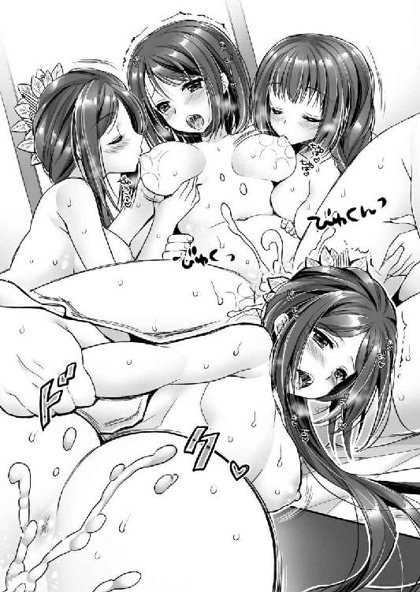
そして、家康が逸物を引き抜いた次の瞬間。
プシャッ！！！ ダラダラダラ......
「ああ、見ないで......」
権高な貴婦人を気取る正室は、潮噴き痴態を側室たちにさらして、羞恥にピクピクと震えていた。
それを確認してから、家康は布団に大の字に倒れる。
「ふぅ～、どうだ。みんな満足させてやったぞ」
大きく胸を張った家康の上に、西郡局がしなだれかかってくる。
「あら、殿様。あたしたちが一発で満足すると思っているんですか？」
西郡局の産んだ督姫は、のちに政略結婚として北条五代目当主北条氏直に嫁ぎ、娘を二人儲ける。氏直が亡くなると実家に戻り、次いで池田輝政に嫁いだ。輝政との間には、五男二女を儲けている。輝政は西国の太守と呼ばれ、一族合わせて九十二万石の大大名となった。
「そうです。もっと種付けしてください」
股間を押さえながら主張した直虎は、瀬名の嗾けもあって、このころ本気で自分で子供を産んで、井伊家を継がせようと考えていたようだ。
天正二年（１５７４）ごろには、虎松の生母を松下清景という武士に嫁がせて、虎松も松下姓を名乗るようになった。しかし、結局、直虎は子供を産むことが叶わなかったことから、天正三年（１５７５）二月、松下家にいた虎松を養子として取り戻すと、井伊姓を名乗らせて跡取りとし、家康に預けたのである。
直虎から虎松を預けられた家康は、自らの幼名竹千代から千代の字を取って万千代と名乗る栄誉を与えた。そして、近習として徹底的に英才教育を施し、さらに一族の松平康親の娘を養女として嫁がせる。彼こそ徳川四天王の一人、赤鬼と呼ばれた井伊直政だ。
直政本人の才能もあっただろうが、おそらく瀬名の実家扱いという意味もあったのだろう。家康の寵愛は大変なもので、徳川が豊臣秀吉の傘下に入ったときには、並み居る譜代家臣を押しのけて筆頭の十二万石に抜擢され、関ヶ原の戦功では十八万石となった。そして、息子の井伊直孝の時代には、三十五万石。徳川譜代筆頭して不動の地位を築いたのである。ちなみに井伊家の氏神は直孝だ。
「わたしは従兄さまの傍に居られるだけで満足です」
家康の右腕にコロンと寝転がったおこちゃが家康の次男、のちの結城秀康を産むのは、天正二年（１５７４）二月八日のことである。
その直後から、おこちゃの身には思いもかけない不幸が降りかかった。
天正三年（１５７５）十二月二十七日に起こった水野信元粛清事件である。
これは織田信長が、武田勝頼を相手に長篠の戦いで大勝利し、だれもが信長の天下統一は時間の問題と感じたときに起こった。
織田家の筆頭重臣であった佐久間信盛からの、水野信元が武田に内通している、との讒言を信じた信長は、信元粛清を決断。大過なくことをすますために、親戚である家康に暗殺を命じたのである。
家康は躊躇った。もっとも苦しい時期の織田家を支えた伯父が、いまさら落ち目の武田家に内通するはずがない。しかも、家康にとっては恩のありすぎる人物だ。しかし、信長の武威には逆らえない。
逡巡している家康とは違って、その嫡男松平信康は、そんな旧恩など知らぬ、と石川数正に命じて、とっとと実行させてしまう。
これに敢然と抗議の声をあげたのが、信元の義弟永見貞英と久松俊勝である。
信元の供をしており、それと知らずに片棒を担がされた形の久松俊勝は激怒して出奔。家康の母於大の方は、家康の下に引き取られることとなった。
坂部城は先妻（これも水野氏出身という）の子が継いだのだが、佐久間信盛はこれを攻め滅ぼしてしまう。
永見貞英は、信元の無実を訴えて運動を始めた。
当然、娘のおこちゃを通じて、家康にも協力を願ってくる。これが家康にとっては甚だ迷惑な事態であった。
信長に悪感情を持たれて、徳川家が水野家や久松家の二の舞になってはかなわない。かくして、おこちゃは乳飲み子とともに、家康の傍を追われる。家臣の本多作左衛門の下で世に隠れ暮らすこととなった。
このような不遇な少年時代を送ったために結城秀康は、徳川家臣たちへのお披露目が遅れ、さらに豊臣秀吉の養子になったこともあり、徳川家臣団との馴染みが薄いという理由で、徳川家宗家の跡取りとはなれなかった。
しかし、将軍家こそ継げなかったものの、越前北庄六十七万石。その家は「制外の家」と呼ばれて、幕末まで重きをなすのである。
「ほんと絶倫なんだから、相手をするのも大変ですわ」
悪態をつく瀬名の頭を、家康は左手で撫でてやった。
「おまえには苦労をかけたからな。これからは楽をさせてやりたい」
そんな家康の願いも虚しく、瀬名の人生は、この後も特大の不幸が待っていた。
ことの起こりは、おこちゃと同じく水野信元粛清事件だ。
これを瀬名の子である松平信康が主導したことから、徳川家臣団の古い面子は、みな信康を嫌ってしまう。
「水野殿の姿は、明日の徳川ぞ。この忘恩の徒め」
「いまは信長さまの天下ぞ。信長さまの意に逆らってなんになる」
轟轟たる非難の中で信康の主張は聞いてもらえず、孤立した信康とその側近たちは過激化していく。そのためいつ謀叛を起こすかわからない事態となってしまったのだ。
しかも、悪いことに、家康の母である於大の方が、自分の兄を殺し、夫の面子を潰し、実家と婚家を滅亡させた、この孫を嫌った。
かくして、酒井忠次が中心となり、松平信康を謀叛人として断罪することになる。
息子の苦境を知った瀬名は、岡崎城から浜松城の家康の下に助命嘆願のために出向くが、途中で斬られた。
ときに天正七年（１５７９）八月二十九日のことである。信康は、九月十五日に切腹した。
瀬名の暗殺には謎が多く、家康の手の者ではなかったのではないか、と言われている。しかし、家康はあえて真相をうやむやにした。これはすなわち黒幕を追及したくなかったのだろう。家康が遠慮した相手、おそらくは......母。真相は闇の中である。
ちなみに瀬名の娘亀姫は、長篠の戦いの英雄奥平信昌に嫁いだ。信昌は家康のもっとも信頼する側近としてその後も大いに活躍。石川数正出奔後の徳川軍の軍制改革を主導し、関ヶ原の戦いでは家康本隊の筆頭幕僚、初代京都所司代と要職を歴任。信昌と亀姫の夫婦仲は大変よく、側室はおらず、四男一女を儲けた。
これだけ家康の身辺をひっかきまわしてくれた水野信元粛清事件だが、さらに救いのないことに、天正八年（１５８０）八月、信長は佐久間信盛を追放し、信元の謀叛は間違いだったとして、家康の下にいた水野忠重をして水野家を復活させたのである。
「まったく、この世の中はなんて穢れているんだ」
家康はさぞ無情感に囚われ、同時にこんな戦乱の世を嫌い、平和の世を渇望したことであろう。
ちなみに家康の三男にして、二代将軍秀忠を、家康の側室お愛の方（西郷局）が出産するのは、天正七年（１５７９）四月七日のことである。
家康はまだ、この運命の女性と出会っていない。
※
戦国大名たちは政治家であるから、それぞれの政治スローガンを旗印や印鑑などに書いているものだ。
上杉謙信は「毘」。毘沙門天はここにいるぞ、と自らを軍神たらんと欲した。
武田信玄は「風林火山」。孫子の兵法書の一節を掲げて、軍略の才を誇った。
織田信長は「天下布武」。武力で天下を統一してやるぜ、という意味だろう。
では、徳川家康の掲げたスローガンはなんだったのだろうか。軍旗にはこう書かれていた。「厭離穢土・欣求浄土」と。
なんとも覚えづらく、インパクトに欠けるゆえに、家康にはネーミングセンスがないなぁ、と言われる所以の一つだが、その意味は、穢れた世界を厭い離れたい。清い世界を喜び求む。より平易にすると、戦乱の時代は嫌だなぁ、平和な時代になって欲しいなぁ、と言っているのだ。
徳川家康という人は根本的なところで、これを考えていたのだろう。
単に天下を取りたいのではない。戦のない世を作りたいのだ。その希求の果てに作られたのが徳川幕府であった。
日本に限らず、世界中、いつの時代でも戦争はある。それを百年以上の長きに渡り、戦争のない体制を作ってしまったのだ。徳川家康が世界的な偉人と呼ばれる所以である。
江戸時代を暗黒時代のように言う人はいる。たしかに身分の固定した息苦しい世の中だったかもしれない。軍事技術ではヨーロッパ列強に遅れを取ってしまった。しかし、それでも戦がないゆえに享受できた恩恵は、計り知れないものだったのではないだろうか。
信長と秀吉は、たまたま時代とぴったり合ったから成功しただけで、真似をしても意味がない。それにたいして家康の手腕は、どんな時代でも参考になるといわれています。
http://www5d.biglobe.ne.jp/~takeuti/
初めまして、あらいぐまと申します。着物などを描くのが大好きなので、今回とっても楽しいです。和は良いですね(*´∇｀*)
二次元ドリーム文庫
家康、恋の陣！
椿姫と築山殿と女城主とおこちゃ
著者 竹内けん
発行 株式会社キルタイムコミュニケーション
〒104-0041 東京都中央区新富1-3-7ヨドコウビル1Ｆ
編集部 TEL 03-3551-6147／FAX 03-3551-6146
販売部 TEL 03-3555-3431／FAX 03-3551-1208
URL http://ktcom.jp/
©Ken Takeuti 2017
当ファイルは、二次元ドリーム文庫『家康、恋の陣！ 椿姫と築山殿と女城主とおこちゃ』（2017年10月30日 初版発行）に基づいて作成しております。
※本作品の全部あるいは一部を無断で複製・転載・配信・送信したり、ホームページ上に転載することを禁止します。本作品の内容を無断で改変、改ざん等行うことも禁止します。また、有償・無償にかかわらず本作品を第三者に譲渡することはできません。
※本作品は電子書籍配信用に再編集しております。